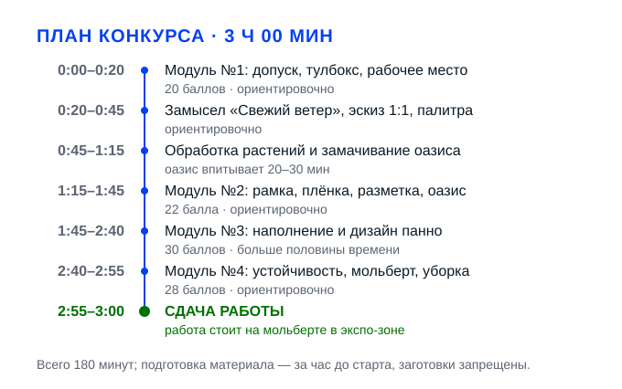
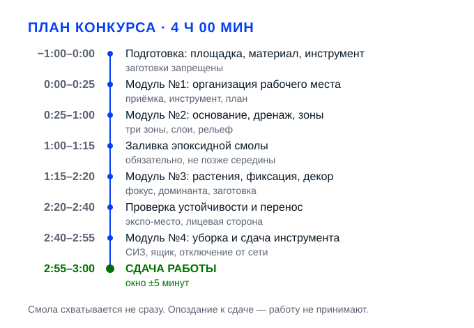
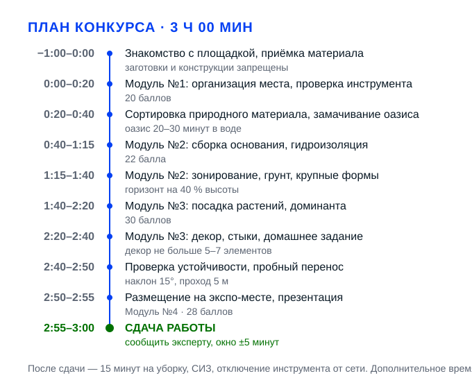

Интерьерное озеленение (Р)
Задания ниже — официальные файлы «Абилимпикс» (источник: abilympics-russia.ru), разложенные по категориям. Решения написаны по тексту задания, регламенту и критериям оценки; в них указано, что именно проверяет эксперт.
Школьник
14–16 лет, базовый уровень заданияВ официальном файле категории не разделены отдельными разделами — приводим задание целиком; различия по категориям смотрите в таблице модулей.
Пошаговое решение
Задание категории «Школьники» — плоскостная интерьерная композиция вертикального озеленения «Живое панно — Свежий ветер»: срезочный материал ставится в основание панно на флористической губке «Оазис», рамка с каркасом выдаётся в сборе, готовая работа выставляется на мольберте «Хлопушка» в экспо-зоне. На всё отводится 180 минут, а за час до старта участник знакомится с площадкой и готовит материал, но заготовки конструкции делать нельзя. Четыре модуля дают 100 баллов: организация места — 20, формирование основания — 22, наполнение и дизайн — 30, технология с учётом охраны труда — 28. Условие тридцатипроцентного изменения обязывает школьников использовать сухоцветы, а работа должна быть транспортабельной и живой до конца выставки. Самое дорогое здесь — не техника, а композиция: направление, фокусная зона и один ведущий тон дают больше баллов, чем аккуратно воткнутые стебли.

Задача 1. Пройти допуск, собрать рабочее место и распланировать 180 минутМодуль №1 · 20 баллов
Первый модуль оценивают в 20 баллов, и набираются они не в конце, а всё время, пока вы работаете: опрятность места, рациональное применение инструмента, логистика, здоровье и безопасность, Кодекс этики и распределение рабочего времени. На площадке семь рабочих мест, у каждого стол 1200 на 600 и 870 мм, тулбокс размером примерно 250 на 600 на 250 мм, рамка с каркасом в сборе и мольберт «Хлопушка» 60 на 60 см, на котором готовая работа будет стоять в экспо-зоне. За час до старта вы знакомитесь с местом и готовите растительный материал, но собирать отдельные конструкции и делать заготовки композиции в это время запрещено.
Действие 1.1. Пройти инструктаж и проверку тулбокса
Шаг 1.1.1
Приходим на площадку к началу часа ознакомления, находим своё место по номеру и слушаем оба инструктажа главного эксперта: по охране труда «Организация безопасности труда» и по работе с электроприборами. После каждого ставим роспись в Протоколе инструктажа. Сразу запоминаем три точки: где аптечка первой помощи, где огнетушитель ОП-4 и куда выходить при эвакуации, потому что искать их в момент пореза или задымления будет некогда. Если вам меньше четырнадцати лет, вы работаете под непосредственным руководством эксперта, а с четырнадцати до восемнадцати — под его наблюдением.
Без росписи в протоколе участника не допускают к заданию, и это единственный документ, который нельзя восстановить задним числом. Кроме того, здоровье и безопасность — отдельная строка в модуле №1, из которого складываются 20 баллов, и любое нарушение по этой строке снимает баллы сразу, независимо от красоты панно. Знание, где аптечка, — часть той же строки, и эксперт проверяет это вопросом в первые минуты.
Проверьте себя по трём признакам: в протоколе стоят две ваши подписи, вы можете показать рукой на аптечку и огнетушитель, не вставая с места, и вы точно знаете, что при плохом самочувствии или травме надо немедленно сказать ближайшему эксперту. Если хотя бы один признак не выполняется, спросите у волонтёра сразу, а не в середине модуля №3.
Типичная ошибка — подписать только один протокол и решить, что второй «формальность». Вторая, более дорогая: начать работать до окончания инструктажа, потому что руки уже чешутся разложить секатор. За это снимают баллы по безопасности и могут отстранить от модуля до повторного инструктажа, а время конкурса при этом продолжает идти.
Эксперт фиксирует росписи до старта и в первые пять минут проверяет, как участник держится на месте: убраны ли волосы, закрыта ли обувь, нет ли на столе телефона. Дальше он возвращается к этой строке каждый раз, когда видит нарушение по ходу работы.
Шаг 1.1.2
Раскрываем тулбокс и выкладываем содержимое на стол так, чтобы эксперт мог пересчитать его одним взглядом. Держим при себе только то, что перечислено в разделе для участников: секатор или ножницы для подрезки, флористический нож, ножницы, канцелярский нож со сменным лезвием, плоскогубцы или бокорезы, степлер со скрепками, клеевой пистолет на 220 В, рулетку 5 м, очиститель шипов, клей-карандаш. Канцелярским ножом живые растения не подрезают: он мнёт стебель. Телефон, наушники и умные часы оставляем за пределами площадки: найденные позже они грозят штрафом или дисквалификацией.
Проверка тулбокса идёт до старта, и всё запрещённое изымают именно тогда, когда это безболезненно. Если предмет найдут в процессе выполнения задания, разговор будет уже не про изъятие, а про штраф или дисквалификацию, и никакая композиция это не компенсирует. Кроме того, рациональное применение инструментов и приспособлений — отдельный критерий модуля №1, и он оценивается по тому, что лежит на столе и как этим пользуются.
Сверьтесь со списком из раздела для участников и убедитесь, что каждая позиция на месте и в рабочем состоянии: у секатора есть стопорное кольцо или защёлка, лезвия не болтаются, ножницы не разболтаны, в степлере есть скрепки. Уберите из ящика всё лишнее: так нужное находится быстрее.
Частая ошибка — оставить телефон «на всякий случай в кармане фартука»: звонок или вибрация в середине модуля №3 читаются как использование средства связи, и объяснение тут не работает. Вторая — тупой секатор: стебель рвётся, вода в срез не поступает, материал вянет к сдаче.
Эксперт проходит по местам до старта и проверяет тулбоксы подряд, поэтому разложите всё так, чтобы проверка заняла секунды: инструмент отдельно, расходники отдельно, ничего в карманах и под столешницей.
Шаг 1.1.3
Надеваем профессиональную одежду для флористов: фартук с карманами и пояс для инструмента. Волосы убираем полностью под резинку или заколки, часы и кольца снимаем, ногти коротко подстрижены. Рукава подворачиваем выше локтя, обувь только закрытая и на нескользящей подошве, потому что пол вокруг контейнеров с водой мокрый. Причёску и посадку фартука проверяем в напольное зеркало 48 на 160 см, которое стоит на площадке именно для этого: со стороны видно то, чего вы сами в отражении стола не замечаете.
Опрятность и поддержание рабочего места в чистоте — первая строка критериев модуля №1, и она оценивается визуально, без измерений. Кроме того, убранные волосы и снятые украшения — вопрос безопасности: локоть в открытом рукаве задевает готовую композицию, кольцо цепляет тонкий стебель, длинные волосы тянутся к клеевому пистолету. Аккуратный внешний вид с первой минуты показывает эксперту, что участник понимает, где он находится.
Проверьте по зеркалу три вещи: волос не видно ни спереди, ни сзади; фартук застёгнут и не свисает на столешницу; обувь закрытая и сухая. Руки свободны от украшений, ногти без покрытия. Если фартук длинный, подколите нижний край булавкой — свисающий угол цепляется за рамку и тянет её с подставки.
Ошибка — надеть фартук «когда начнётся грязь», то есть после первого замачивания оазиса. Вторая, менее очевидная: оставить кольцо, потому что оно маленькое. На школьной категории это проверяют на входе, и объяснение «я привык» не принимается, а балл за опрятность снимается в самом начале, когда отыграть его уже нечем.
Эксперт смотрит участника на входе и потом ещё несколько раз по ходу конкурса — чистая ли одежда, не появились ли пятна от оазиса и зелени, убранные ли волосы остаются убранными к моменту сдачи.
Действие 1.2. Собрать рабочую зону и подготовить воду
Шаг 1.2.1
Стол 1200 на 600 мм делим на три зоны и держим это деление до конца конкурса. Справа, под правую руку, кладём инструмент: секатор, флористический нож, ножницы, бокорезы, степлер, рулетку — каждый на своё место, ручкой к себе. Слева ставим растительный материал в вазоны 28 на 51 см и контейнеры с водой. По центру остаётся свободное поле примерно 60 на 40 см: это место под рамку с каркасом и под сам оазис, и ничто другое туда не заезжает. Мусорный контейнер на 60 л ставим у ножки стола так, чтобы обрезки летели в него, а не на пол.
Организация режима работы и логистика — отдельный критерий модуля №1, и он виден сразу: у места с продуманными зонами участник не тратит время на поиск секатора и не роняет стебли на пол. Кроме того, общий стол с материалами и инструментом на площадке запрещён: всё, что нужно по инфраструктурному листу, должно находиться в вашей рабочей зоне, и это проверяют эксперты.
Проверьте себя, не отходя от стола: инструмент не мешает локтю при работе с оазисом, вода не стоит на пути к рамке, центр стола свободен, контейнер для отходов открыт и под рукой. Если вам приходится тянуться через стол за секатором — зоны расставлены неверно, переставьте их сразу.
Ошибка — разложить всё «как привезли», по кучкам из тулбокса: инструмент оказывается слева, вода справа, и вы весь конкурс работаете через стол. Вторая — поставить контейнер с отходами под стол: обрезки начинают падать на пол, пол становится скользким, а за чистоту места снимают баллы.
Эксперт обходит площадку в начале модуля №1 и оценивает, насколько рационально расставлено всё на столе. Позже он смотрит, возвращается ли инструмент на место или остаётся лежать среди зелени.
Шаг 1.2.2
Проверяем и раскладываем инструмент по порядку работы. Секатор: лезвия заточены, стопорное кольцо или защёлка на месте, крепление не ослаблено — иначе он разболтается на толстом стебле и порвёт его. Флористический нож: при открывании и закрывании лезвие направлено в сторону от корпуса, в закрытом виде не выступает за контуры ручки; протираем клинок движением от обушка к лезвию. Клеевой пистолет на 220 В ставим на ровную устойчивую поверхность, подкладываем лист бумаги, а под сопло — фольгу для стекающего клея, и прогреваем три-пять минут до первого тянущегося клея.
Рациональное применение инструментов и приспособлений — вторая строка в 20 баллах модуля №1, и она учитывает именно готовность инструмента, а не его наличие. Тупой секатор или разболтанные ножницы превращают работу с живым материалом в мучение: срез рвётся, стебель ломается, и вместо двух движений вы делаете пять. Неисправный инструмент по правилам вообще требует остановки работы и обращения к эксперту, а это потерянные минуты из 180.
Проверьте инструмент на черенке зелени: секатор срезает стебель одним нажатием, без хруста и размочаливания, ножницы режут бумажную салфетку до конца лезвий. Клеевой пистолет держит температуру и выдаёт клей ровной нитью, с сопла не капает на стол. Если что-то не так — просите замену до старта.
Ошибка — взять секатор «как есть», не проверив заточку: первый же толстый стебель даёт рваный срез, и материал вянет быстрее остального. Вторая — включить клеевой пистолет и положить его соплом на стол: клей прилипает к столешнице, а горячее сопло оставляет след, за который снимают и по чистоте, и по ТБ.
Эксперт может подойти и посмотреть, как вы держите нож и как работает клеевой пистолет. Отдельно фиксируется, лежит ли горячий инструмент на подставке или брошен среди растений.
Шаг 1.2.3
Готовим воду и всё, что связано с влагой, потому что панель на оазисе живёт водой. Набираем контейнеры: большой на 45 л для замачивания кирпича, средний на 10 л и малый на 2,8 л для промывки и для работы. Воду берём из крана со шлангом, который по требованиям площадки находится в 10–15 м от места, — поэтому сразу набираем столько, чтобы не бегать в середине модуля. Пульверизатор на 2 л заполняем и держим рядом с зоной растений, туда же кладём бумажные полотенца и микрофибру для стола. Всё, что мокрое, живёт на поддоне, а не прямо на столешнице.
Гарантированное жизнеобеспечение растительного материала до окончания работы выставки — прямое требование особых условий задания, и вода здесь главный инструмент. Кроме того, вода в 10–15 м — это факт площадки: если вы побежите за ней в разгар модуля №3, потеряете пять-семь минут из 180 и собьёте ритм работы. Пульверизатор нужен не для красоты, а чтобы поддержать живой материал, пока он лежит на столе и ждёт посадки.
Проверьте: все три контейнера налиты, кирпич оазиса ещё не брошен в воду, пульверизатор качает ровным туманом, а не струёй, полотенца лежат в зоне воды. Под столом и вокруг контейнеров сухо: если натекло, вытрите сразу, потому что мокрый пол — это ещё и строка по безопасности.
Ошибка — налить воду в один большой контейнер и замачивать в нём всё подряд, включая сухоцветы. Сухоцветы намокают, теряют форму и цвет, и обязательное условие задания по сухоцветам оказывается невыполненным. Вторая ошибка — оставить воду на полу: скользко, а за этим следят отдельно.
Эксперт смотрит, организована ли работа с водой: есть ли поддон, не течёт ли через край, не бегает ли участник по площадке с полным ведром между модулями.
Действие 1.3. Распределить 180 минут и удержать порядок
Шаг 1.3.1
Сразу после старта, пока материал ещё не разложен, пишем план на 180 минут и вешаем его на видное место или держим на краю стола. Рабочая раскладка такая: около 20 минут на организацию и замысел, 30–35 минут на подготовку материала и замачивание оазиса, 30 минут на основание: рамка, плёнка, разметка, оазис, и не меньше 60–70 минут на само наполнение, потому что модуль №3 стоит 30 баллов из 100. Последние 15 минут обязательно оставляем на устойчивость, мольберт, уборку и сдачу. Время сверяем по настенным часам с цифровой индикацией, которые стоят на площадке, а не по ощущениям.
Распределение рабочего времени — отдельная строка в модуле №1, и она оценивается по факту: успел ли участник пройти все этапы или бросил работу недоделанной. Ошибка в планировании здесь дороже всего, потому что модуль №3 — самый весомый: 30 баллов против 22 за основание и 28 за технологию. План, записанный на бумаге, работает лучше плана в голове: он не даёт застрять на одной зоне и не напоминает о себе сам.
Проверьте план на арифметику: сумма окон ровно 180 минут, на наполнение отведено больше половины времени, а на сдачу — не меньше 15 минут. Через час работы сравните факт с планом: если отстаёте на 10 минут и больше, сокращайте не сдачу, а декор — убирайте лишние акценты, а не устойчивость.
Классическая ошибка — начать втыкать растения, не составив план, и опомниться на 120-й минуте с полупустым панно. Вторая — отдать почти всё время основанию: сделать идеальную разметку плёнки и красивый оазис, а на наполнение оставить 20 минут. Именно так теряют баллы самого дорогого модуля.
Эксперт засекает этапы и видит, в каком темпе идёт участник. Отдельно отмечается, успел ли он привести место в порядок и поставить работу на мольберт до окончания времени.
Шаг 1.3.2
Вводим для себя правило возврата: взяли инструмент — после двух-трёх движений вернули на место, а не положили рядом с рамкой. Обрезки стеблей и листьев не смахиваем на пол, а сразу отправляем в контейнер на 60 л, потому что каждый подход с щёткой стоит минуту, а их за конкурс набегает много. Раз в 30–40 минут делаем короткую остановку на 40 секунд: протереть стол микрофиброй, убрать мокрые пятна, выбросить накопившееся. Мокрую тряпку держим на поддоне, а не на столешнице.
Опрятность и поддержание рабочего места в чистоте оценивается не в конце, а всё время, поэтому порядок надо держать ритмом, а не разовой уборкой. Практическая сторона важнее баллов: обрезки и листья на столе закрывают разметку, мокрая столешница разъезжается под рамкой, а клей, попавший на столешницу, к сдаче уже не оттереть. Три-четыре минуты, потраченные по ходу, экономят десять минут в конце, когда времени нет.
Признак того, что ритм работает: на столе нет обрезков, инструмент на своих местах, пол под ногами сухой, а мусор в контейнере не выше половины. Если вам приходится искать секатор дольше пяти секунд — правило не работает, верните его в зону инструмента.
Ошибка — убирать один раз, в конце, «когда всё будет готово»: тогда на уборку уходит 12–15 минут, и часть работы остаётся недоделанной. Вторая — стряхивать обрезки на пол под стол: это видят и по чистоте места, и по безопасности, потому что на мокром полу с ножом в руке легко поскользнуться.
Эксперт проходит мимо несколько раз за конкурс и фиксирует состояние места в разные моменты, а не только на финише. Чистое место в середине работы ценится так же, как чистое место при сдаче.
Шаг 1.3.3
Держим дистанцию и правила общения. Во время выполнения задания нельзя разговаривать со зрителями, реагировать на знаки и подсказки, пользоваться телефоном и любыми средствами связи. Все вопросы — только эксперту, коротко и по делу: не хватает материала, сломался инструмент, нужна замена. Если оборудование сломалось по технической причине, замену делают во время конкурса, но только в присутствии главного эксперта и с его разрешения. При любой ситуации с угрозой здоровью немедленно обращаемся к волонтёру или эксперту, а не решаем вопрос сами.
Соблюдение Кодекса этики — самостоятельная строка в 20 баллах модуля №1, и нарушения по ней фиксируются мгновенно. Кроме того, спокойное и точное обращение с экспертом — часть оценки коммуникации: видно, умеет ли участник сформулировать проблему, а не растеряться. Правильный вопрос «не хватает трёх веток, нужна замена» решается за минуту, а молчание и попытка обойтись подручным материалом стоят качества композиции.
Проверьте перед стартом: телефон сдан или оставлен вне площадки, часы с уведомлениями сняты, наушников нет. По ходу конкурса держитесь правила одного вопроса — одного ответа: спросили, получили, вернулись к работе, не обсуждая ситуацию с соседями по площадке.
Ошибка — обернуться на оклик зрителя или кивнуть знакомому: это фиксируется как реакция на знак и снимает баллы по этике. Вторая — пытаться починить сломавшийся клеевой пистолет самостоятельно: по правилам при неисправности инструмента работу приостанавливают и сообщают эксперту.
Эксперт наблюдает за общением весь конкурс: как участник задаёт вопросы, не спорит ли с ним, не пытается ли обсудить задание с соседями по площадке. Отдельно он отмечает, вернулся ли участник к работе сразу после ответа или продолжил разговор.
Задача 2. Придумать «Свежий ветер» и подготовить материал к посадкеМодуль №3 · 30 баллов · замысел и обработка
Тема школьного задания — плоскостная интерьерная композиция вертикального озеленения «Живое панно — Свежий ветер» на флористической неорганической губке «Оазис». Рамка с каркасом уже собрана, её нельзя повредить, а по условиям тридцатипроцентного изменения школьники обязаны использовать сухоцветы — это не пожелание, а требование задания. Именно на этом этапе решается, будут ли работать 30 баллов модуля №3: срезка с учётом разнообразия форм и фактур оценивается в 4 балла, обработка материала — в 5, размещение с фокусной зоной и доминантой по цветовому тону — в 5, фиксация в оазисе с учётом цветовой гармонии — тоже в 5, осуществление идейного замысла — ещё в 5, а самый весомый критерий в таблице тянет на 6 баллов. Переделывать замысел, когда оазис уже наколот, поздно: материал не переживёт второй посадки.
Действие 2.1. Разобрать тему и нарисовать эскиз в масштабе 1:1
Шаг 2.1.1
Садимся и разбираем формулировку буквально: «живое панно» — значит плоскость, а не объём, всё живёт в одной плоскости и не выпирает вперёд больше чем на 5–7 см; «свежий ветер» — значит направление и движение. Выписываем на лист три слова, которые задают композицию: поток, лёгкость, дыхание. Дальше выбираем, чем показать ветер: наклоном линий на 30–45 градусов, разной длиной стеблей, разрывом массы справа или слева, полосой сухоцветов, уходящей в сторону. Один приём — основа, второй — поддержка, третий добавлять уже не нужно.
Критерий «осуществление идейного композиционного замысла» в модуле №3 оценивается экспертом по тому, читается ли тема без подписи. Панно, где всё воткнуто ровно и симметрично, формально аккуратно, но про «ветер» не говорит ничего, и самый весомый критерий модуля остаётся невыполненным. Разбор темы до первого стебля — это те три минуты, которые превращают набор растений в композицию.
Проверьте себя просто: покажите лист соседу по площадке или волонтёру, который не знает темы, и спросите, что он видит. Если ответ «цветы в рамке» — замысел не читается, надо усилить наклон и разрыв массы. Если ответ «как будто ветром сдувает» — вы на верном пути.
Ошибка — начать с материалов: «поставлю то, что дали, и как-нибудь сложится». Тогда композиция получается перечислением растений, а не высказыванием, и теряются не 4–5 баллов, а сразу связка критериев модуля №3.
Эксперт подходит в начале модуля №3 и смотрит, есть ли у участника эскиз или хотя бы размеченный лист. Наличие замысла до посадки видно и по темпу работы: такой участник не переставляет стебли по десять раз.
Шаг 2.1.2
Чертим эскиз в натуральную величину. Берём лист бумаги не меньше габарита рамки, рулеткой 5 м обмеряем внутреннее поле рамки по факту — оно меньше внешнего размера и у разных комплектов отличается, поэтому цифры берём со своего основания, а не из головы. Рисуем прямоугольник внутреннего поля, делим его линиями третей по горизонтали и вертикали, отмечаем точку фокуса на пересечении — обычно это правая или левая треть по ширине и нижняя треть по высоте. Там же рисуем границу живой зоны и зоны сухоцветов, чтобы понимать, где кончается мокрый оазис.
Эскиз в масштабе 1:1 нужен не для красоты: он позволяет прикинуть количество материала до того, как вы его нарежете, и не даёт «перекормить» панно. Композиция в рамке читается как картина, и законы здесь живописные: фокус не в геометрическом центре, масса уравновешена, у силуэта есть движение. Разметка зон заранее спасает от главной ошибки — сухоцветов, воткнутых в мокрый оазис.
Проверьте эскиз по трём признакам: фокус стоит на пересечении третей, а не в середине; у композиции есть явное направление; площадь под сухоцветы отмечена отдельно и составляет примерно четверть-треть поля. Если всё поле размечено под живой материал, вы забудете про обязательные сухоцветы.
Ошибка — рисовать эскиз «на глаз», без обмера рамки: на посадке выясняется, что внутреннее поле на 3–4 см меньше, и задуманная композиция не влезает в габарит. Вторая — делать эскиз в уменьшенном масштабе без пересчёта: длина стеблей на бумаге и на панели расходится вдвое.
Эксперт смотрит эскиз, если участник его делает, и потом сверяет готовую работу с замыслом. Расхождение в пользу упрощения он замечает сразу, особенно если на бумаге была плотная композиция, а в рамке осталось полтора десятка стеблей.
Шаг 2.1.3
Отойдите от листа на два-три шага и посмотрите на него прищуренными глазами, а потом переверните и посмотрите вверх ногами. Так видно силуэт: читается ли он как единое пятно с направлением или рассыпается на отдельные веточки. Затем наметьте на эскизе порядок посадки: сначала линейный материал, потом массы, потом фокус, потом сухоцветы и декор. Пронумеруйте зоны карандашом — это и будет ваша карта посадки, по которой вы работаете в модуле №3, не перебирая материал заново.
Силуэт — то, что видит эксперт и зритель с расстояния двух метров, и именно он входит в оценку идейного замысла. Порядок посадки экономит время: если начать с мелкого декора, к приходу крупных стеблей он уже рассыплется. Карта посадки — рабочий инструмент, а не учебное упражнение: с ней модуль наполнения идёт на 15–20 минут быстрее.
Проверьте: силуэт читается в перевёрнутом виде, у него есть явная диагональ или поток, и на эскизе отмечены все четыре этапа — линии, массы, фокус, декор. Если перевёрнутый эскиз выглядит так же хорошо, композиция уравновешена.
Ошибка — сделать эскиз, а потом работать «по вдохновению», глядя на него только в конце. Вторая — нарисовать симметричную схему: она выглядит надёжно на бумаге, но в жизни даёт статичное панно без всякого ветра.
Эксперт оценивает результат, но по темпу и по аккуратности посадки видит, работал ли участник по плану. Отдельно отмечается, нет ли следов переставляемых стеблей — разорванного оазиса.
Действие 2.2. Отобрать материал и проверить его на стойкость
Шаг 2.2.1
Разбираем набор срезочных культур из инфраструктурного листа на три группы и раскладываем их в отдельные вазоны с водой. Первая группа — линейная: ветки, злаки, высокие прямые стебли, они задают направление и держат силуэт. Вторая — кустовая зелень и материал средней длины: он заполняет массу и закрывает оазис. Третья — акцент: цветы и всё, что привлекает взгляд первым. На панель такого размера уходит примерно 80–120 стеблей зелени и 25–40 акцентных, и это лучше прикинуть сразу, чтобы не остаться с пустым полем в середине посадки.
Критерий срезки прямо говорит про разнообразие форм и фактур, и он стоит 4 балла из 30. Если взять только цветы или только зелень одного вида, разнообразия нет, и балл снимается до начала посадки. Три группы — это ещё и рабочий порядок: вы берёте материал по назначению, а не хватаете первое, что под руку попалось.
Проверьте раскладку: в каждой группе не меньше трёх разных фактур — гладкое, пушистое, жёсткое или злаковое. Линейного материала хватает на 8–12 линий, кустового — на закрытие всего поля, акцентов — на одну-две фокусные группы. Если чего-то в наборе мало, перераспределите роли, а не добирайте случайным.
Ошибка — отобрать всё, что нравится, и получить четыре вида одной формы. Вторая — взять слишком мало линейного материала: тогда направление ветра показать нечем, и композиция распадается на букетики, воткнутые в плоскость.
Эксперт смотрит на стол в момент отбора и потом на готовое панно: по работе видно, работал ли участник с разными формами и фактурами или собрал монокультуру из одного вида. Он же отмечает, остался ли материал неиспользованным.
Шаг 2.2.2
Отдельно и обязательно отбираем сухоцветы: по тридцатипроцентному изменению задания школьник обязан использовать их в композиции «Живое панно — Свежий ветер». Берём сухие злаки, метёлки, плоскостные и жёсткие формы — они дают фактуру, которой нет у живого материала, и хорошо работают на тему ветра. Сухоцветы не ставим в воду: они должны оставаться сухими до посадки, поэтому держим их отдельно, на сухом поддоне, и не путаем с зеленью. Подбираем их так, чтобы по цвету они поддерживали палитру, а не спорили с ней.
Сухоцветы — прямое условие задания, и их отсутствие в готовой работе читается как невыполнение модуля, а не как творческий выбор. Кроме того, они дают фактурный контраст, который оценивают в критерии срезки с учётом разнообразия форм и фактур. И третье: сухоцветы не вянут, поэтому помогают выполнить требование о жизнеобеспечении до конца выставки.
Проверьте отбор: сухоцветов хватает на заметную часть поля, примерно на четверть или треть площади, они сухие, не поломаны, метёлки не осыпаются в руке. Стебли жёсткие и держат форму — вялый сухоцвет в панно выглядит как мусор.
Ошибка — поставить сухоцветы в контейнер с водой «чтобы не поломались». Они намокнут, потеряют объём и начнут разлагаться уже к сдаче. Вторая — взять два-три стебля для вида: формально условие выполнено, но на панно этого не видно, и балл за фактуру не получить.
Эксперт проверяет наличие сухоцветов в готовой композиции целенаправленно, потому что это условие тридцатипроцентного изменения. Смотрит и на то, уместны ли они в замысле.
Шаг 2.2.3
Проверяем материал на стойкость, потому что по особым условиям задания растительный материал должен гарантированно жить до окончания работы выставки. Живой материал берём с плотными стеблями и полураскрытыми цветами: полностью раскрытый цветок к финишу осыпется первым. Вялое, пожелтевшее и надломленное сразу откладываем в сторону — в панно это не исправить. Отдельно смотрим на совместимость: растения, которым нужен обильный полив, рядом с теми, что легко загнивают, в одном оазисе живут плохо.
Гарантированное жизнеобеспечение — не абстракция, а пункт особых условий, и эксперт смотрит на состояние материала при сдаче и на выставке. Кроме того, вялый стебель не держится в оазисе: он проворачивается и выпадает, а стабильность и транспортабельность оцениваются в модуле №4 отдельно, из 28 баллов.
Проверьте каждый пучок: стебель упругий и не сгибается в кольцо, срез светлый и свежий, листья не осыпаются при встряхивании, у цветов плотные лепестки. Материал с тёмным, скользким срезом отбраковывайте без сожаления.
Ошибка — взять всё, что дают, включая подвядшее, и надеяться, что «в оазисе отойдёт». Часть отойдёт, часть сгниёт, и к сдаче в панно будут бурые пятна. Вторая — не учитывать, что после сдачи работа стоит на выставке ещё несколько дней.
Эксперт осматривает материал при сдаче и отмечает свежесть и однородность. Увядшие и потемневшие стебли в готовой работе он видит сразу, как и следы подгнивших листьев на самом оазисе.
Действие 2.3. Собрать палитру и определить доминанту
Шаг 2.3.1
Раскладываем отобранный материал на белом листе и собираем палитру по правилу трёх долей: доминирующий цветовой тон занимает около 60 процентов площади, поддерживающий — около 30, акцент — не больше 10. Доминанту выбираем по цветовому тону, как требует критерий: один тон ведёт всю композицию. Если набор из листа даёт зелень и сухоцветы в тёплой гамме, доминантой логично сделать именно её, а холодный или белый акцент оставить точкой. Пять-семь тонов в одной панели — уже перебор для плоскости такого размера.
Фокусная зона и доминанта по цветовому тону — отдельный критерий модуля №3 в 5 баллов, и цветовая гармония при фиксации в оазисе оценивается ещё раз. Работа, где все цвета равны, читается как пёстрое пятно: глазу не за что зацепиться, и эксперт не видит композиционного решения, даже если техника безупречна.
Разложите материал и отойдите на два шага: должно быть видно три группы по цвету, а не семь. Проверьте пропорцию на глаз: акцентных стеблей примерно десятая часть. Если акцент лезет в глаза со всех сторон, его слишком много.
Ошибка — взять все цвета из набора «чтобы было нарядно». Вторая — сделать доминантой самый яркий цветок: тогда акцент и доминанта совпадают, и композиция теряет глубину, а балл за цветовую гармонию снимается.
Эксперт оценивает палитру по готовой работе, но на столе уже видно, сложилась ли она. Отдельно он смотрит, есть ли один ведущий тон или всё в равных долях.
Шаг 2.3.2
Проверяем палитру двумя способами, которые занимают минуту. Первый — посмотреть на раскладку через экран телефона нельзя, телефона на площадке нет, поэтому смотрим прищуренными глазами: так отключается детализация и остаются пятна. Второй — разложить материал рядом с сухоцветами и оценить, не спорят ли тёплые и холодные оттенки друг с другом. Если спорят, добавьте нейтральный связующий материал: зелень, серо-зелёные или белые стебли, мох.
Цветовая гармония — вторая половина критерия фиксации растительного материала в оазисе, и она проверяется на готовой работе. Нейтральный связующий элемент — приём, который позволяет удержать контрастные тона без крика: он работает как пауза между ними. На плоскости это важнее, чем в объёмном букете, потому что всё видно одновременно.
Проверьте: прищуренный взгляд даёт три читаемых пятна, ни одно не выпадает, между контрастными зонами есть переход из нейтрального материала. Если глаз «спотыкается» о какой-то стебель, он будет спотыкаться и у эксперта.
Ошибка — ставить рядом холодный и тёплый насыщенный тон без связки: получается спор, а не композиция. Вторая — гасить всё в один тон, чтобы точно не ошибиться: тогда пропадает акцент, и панно выглядит плоским.
Эксперт оценивает цветовую гармонию в готовой работе с расстояния, а не вблизи. Его интересует, читается ли палитра целиком и есть ли связка между контрастными тонами; вблизи он смотрит только на технику посадки.
Шаг 2.3.3
Записываем на эскизе, какой материал куда идёт: линии — по намеченной диагонали, массы — на закрытие поля, акцент — в фокусную точку, сухоцветы — в отмеченную зону. Рядом с каждой зоной ставим количество стеблей, чтобы не тащить на посадку весь запас. Эту карту держим перед глазами в модуле наполнения и по ней работаем. Если в процессе что-то меняется, меняем и карту, а не держим в голове два разных плана.
Карта посадки — инструмент распределения времени, которое входит в модуль №1 отдельной строкой. С ней участник не перебирает материал по десять раз и не выдёргивает уже поставленные стебли, а выдёргивание — это рваные отверстия в оазисе, которые потом нечем закрыть и за которые снимают баллы по технологии.
Проверьте карту на полноту: у каждой зоны есть материал и количество, у сухоцветов отдельная зона, акцент один. Если в карте две фокусные точки, уберите одну — на плоскости такого размера два фокуса конкурируют.
Ошибка — держать план в голове: в шуме площадки и под таймером он рассыпается за первые двадцать минут. Вторая — менять замысел на середине посадки, когда половина материала уже стоит.
Эксперт видит по работе, был ли план: аккуратная посадка без следов перестановок, цельный замысел и закрытый оазис говорят сами за себя. Рваные отверстия от выдернутых стеблей он находит при осмотре поверхности.
Действие 2.4. Обработать растения и замочить оазис
Шаг 2.4.1
Обрабатываем срезочный материал по порядку. Берём секатор и срезаем низ стебля под углом около 45 градусов — так площадь всасывания больше, а стебель не упирается срезом в дно сосуда. Срез делаем в 2–3 см выше старого, одним движением, не размочаливая. Сразу ставим стебель в воду и держим материал в ней не меньше 40–60 минут: за это время он набирает влагу и держится в оазисе заметно дольше. Толстые одревесневшие ветки дополнительно подрезаем косо и слегка расщепляем низ, чтобы вода дошла до тканей.
Обработка растительного материала с учётом его особенностей — критерий на 5 баллов из 30, и он оценивается по виду стеблей, а не по вашим намерениям. Рваный срез не всасывает воду: стебель вянет за час-два, и к сдаче работа теряет вид, а вместе с ней уходят баллы и за обработку, и за жизнеобеспечение.
Проверьте срез на свету: он ровный, светлый, без зажеванных волокон, угол виден. Через полчаса в воде стебель должен стать упругим: если он всё ещё гнётся в кольцо, срез сделан плохо или вода слишком тёплая.
Ошибка — резать ножницами или канцелярским ножом: они сдавливают сосуды, и срез перестаёт работать. Вторая — срезать «под корень» и ставить в воду на пять минут, перед самой посадкой: материал не успевает напиться и вянет в оазисе.
Эксперт осматривает стебли перед посадкой и в готовой работе. Рваные и раздавленные срезы видны сразу, как и поникшие за час стебли: именно по ним он отличает тех, кто обработал материал, от тех, кто сразу начал втыкать.
Шаг 2.4.2
Снимаем с нижней части стеблей всё лишнее: листья, боковые побеги, шипы. Очищаем те 5–7 см, которые окажутся в оазисе, потому что лист, зажатый во влажной губке, загнивает и портит воду для всего панно. Шипы снимаем очистителем для шипов, а не ногтями, и работаем в перчатке. Заодно калибруем материал: раскладываем стебли по длине и толщине, чтобы потом брать нужный не глядя.
Чистый низ стебля — это и агротехника, и внешний вид: загнивший лист даёт бурое пятно, которое проступает на панели за сутки. Калибровка экономит время в модуле наполнения и помогает держать ритм: вы берёте стебель нужной длины сразу, а не подрезаете каждый на весу над готовой работой.
Проверьте пучок: нижние 5–7 см голые, листья не оборваны с мясом, шипы сняты, стебли разложены по длине. Если материал липкий от сока, промойте низ и обсушите салфеткой — на мокром стебле клей и тейп не держатся.
Ошибка — оставить листья в зоне оазиса: они гниют, и через день панно пахнет. Вторая — обрабатывать материал прямо над оазисом, роняя обрезки в губку: выковыривать их потом некогда.
Эксперт проверяет подготовку материала до посадки: чистые нижние части стеблей, ровные срезы, отсортированный по длине материал. Это видно по столу и по тому, как быстро участник берёт нужный стебель.
Шаг 2.4.3
Замачиваем флористическую губку. Кирпич оазиса 23 на 11 на 8 см кладём на воду и не топим: он должен погружаться сам, впитывая воду снизу. Ждём 20–30 минут, пока кирпич полностью не уйдёт под воду и не перестанет всплывать. Только после этого достаём, даём стечь лишнему и промокаем салфеткой. Сухой оазис для сухоцветов держим отдельно и в воду не бросаем: он для сухого материала и мокрым быть не должен.
Технология заполнения основания оазисом — целых 22 балла модуля №2, и неправильно замоченный кирпич рушит её с самого начала: в сухой середине вода не поднимается, и материал вянет изнутри. Погружение самотёком вытесняет воздух из пор; если утопить кирпич рукой, воздушные пробки останутся, и губка будет держать воду неравномерно.
Проверьте кирпич на вес и на ощупь: тяжёлый, прохладный, вода выступает на срезе при нажатии пальцем. Разрежьте остаток и посмотрите срез: если в середине светлое сухое пятно — кирпич недопитан, замачивайте заново.
Ошибка — топить кирпич руками, чтобы «быстрее». Вторая — замачивать в малом контейнере на 2,8 л, где кирпич упирается в стенки и впитывает только с одной стороны. Для кирпича нужен контейнер от 10 л, лучше 45-литровый.
Эксперт может проверить оазис на ощупь и посмотреть срез. Недопитанная губка — самая частая причина увядшей работы на второй день выставки, поэтому он смотрит и на вес основания, и на влажность кромки.
Задача 3. Сформировать основание: рамка, каркас, плёнка, оазисМодуль №2 · 22 балла
Модуль №2 — это 22 балла за технологию заполнения основания «Живого панно». По таблице критериев разметка водонепроницаемого материала в соответствии с размерами основания оценивается в 3 балла, крепление этого материала на основании панно — тоже в 3, а остальные четыре критерия модуля идут по 4 балла, и все они про то, как оазис лёг в рамку. Рамка с каркасом выдаётся в сборе, повреждать её нельзя, готовую работу потом ставят на мольберт «Хлопушка» 60 на 60 см в экспо-зоне. Основание — самая необратимая часть работы: ошибку в плёнке или в посадке оазиса уже не исправить, когда сверху стоят восемьдесят стеблей.
Действие 3.1. Принять рамку с каркасом и обмерить поле
Шаг 3.1.1
Берём рамку с каркасом в сборе и осматриваем её как чужую вещь, за которую отвечаете. Проверяем четыре угла на сколы, кромку по периметру на вмятины, каркас — на люфт: покачайте рамку за боковины, она не должна играть. Сетку или подрамник внутри трогаем только для установки плёнки. Если рамка где-то повреждена, сразу зовём эксперта и фиксируем это до начала работы, потому что повреждение рамки по условиям задания не допускается, и обнаруженное в конце спишут на вас.
Условие «не допускается повреждение рамки» записано в параметрах работы прямо, и нарушение снимает баллы независимо от качества посадки растений. Кроме того, треснувший угол не держит натяжение плёнки и вес оазиса: к середине модуля №3 рамка начинает расходиться, и работу приходится спасать вместо того, чтобы её доделывать.
Проверьте три вещи: углы целые, каркас не люфтит, кромка без сколов. Поставьте рамку на стол и нажмите поочерёдно на все четыре угла — она не должна качаться. Если качается, подложите сложенную салфетку и проверьте снова, прежде чем идти дальше.
Ошибка — схватить рамку за кромку мокрыми руками и поставить её на угол: именно так появляются вмятины. Вторая — начать работу с повреждённой рамкой и промолчать: тогда любой дефект на финише считается вашим.
Эксперт осматривает рамки перед стартом вместе с участниками и потом ещё раз при сдаче. Разница в состоянии — это ваш проигрыш, если вы её не зафиксировали.
Шаг 3.1.2
Обмеряем внутреннее поле рулеткой 5 м: ширина, высота, и отдельно — глубина посадки, то есть насколько оазис может выступать над кромкой. У комплекта в сборе поле получается меньше габарита мольберта 60 на 60 см, у разных комплектов цифры отличаются, поэтому пишем свои на листе и больше к ним не возвращаемся. Заодно считаем площадь и прикидываем расход оазиса: кирпич 23 на 11 см даёт 253 квадратных сантиметра, и на поле около 50 на 40 см нужно примерно девять пластин, то есть три кирпича с запасом на подрезку.
Модуль №2 начинается с критерия «разметка водонепроницаемого материала в соответствии с размерами основания» — 3 балла, и разметка может быть точной только по фактическому обмеру. Расчёт по кирпичам экономит материал: если начать резать «по ходу», к середине заполнения обнаружится, что оазиса не хватает, а запас на площадке ограничен инфраструктурным листом.
Запишите три цифры — ширина, высота, допустимая толщина — и проверьте их повторным замером в другой точке: расхождение больше 5 мм означает, что рамка стоит косо или поле непрямоугольное. Расчёт по пластинам должен сходиться: число пластин умножить на 253 и сравнить с площадью поля.
Ошибка — мерить внешний габарит и вырезать плёнку по нему: она не войдёт в рамку или ляжет складками. Вторая — не считать расход и распустить кирпичи наугад, оставив половину поля без оазиса к концу модуля.
Эксперт смотрит, есть ли у участника записи размеров и как он режет материал — по разметке или на глаз. Точность разметки видна по зазору между плёнкой и рамкой.
Шаг 3.1.3
Прежде чем что-то крепить, оцениваем вес будущей работы и её центр тяжести. Пустая рамка с каркасом весит немного, а пропитанный оазис на поле такого размера добавляет килограмма полтора-два, плюс восемьдесят-сто двадцать стеблей. Прикидываем, где будет центр массы: он почти всегда смещается к тому краю, где больше оазиса. Если конструкция получается тяжёлой и с перекосом, лучше сразу уменьшить толщину пластин до 3 см, а не 4, и распределить оазис равномерно по полю.
Параметры работы требуют, чтобы изделие было транспортабельным, а в модуле №4 отдельно оцениваются стабильность и транспортабельность выполненной композиции. Перегруженная панель на мольберте «Хлопушка» ведёт себя плохо: полка с бортиком не рассчитана на перекос, и работа кренится набок в самый неподходящий момент — при осмотре экспертами.
Возьмите рамку с уже уложенным оазисом (после следующего действия) и поднимите её одной рукой за середину верхней планки: она должна держаться ровно, без сильного крена. Если крен есть — перераспределите пластины.
Ошибка — укладывать оазис в два слоя «чтобы держало крепче». Вес растёт, а держит он не лучше: стебель входит на 2–3 см и в двух слоях не нуждается. Вторая — оставить тяжёлую зону в одном углу: панель будет валиться на бок.
Эксперт пробует работу на вес и на устойчивость при сдаче, а в модуле №2 смотрит, насколько рационально распределён материал по полю. Перегруженную панель он отличает по тому, как её приходится держать при переносе.
Действие 3.2. Разметить и закрепить водонепроницаемый материал
Шаг 3.2.1
Размечаем водонепроницаемый материал — плёнку или оргстекло — по фактическим размерам поля. Кладём лист на стол, откладываем рулеткой ширину и высоту внутреннего поля и добавляем припуск 1–2 см с каждой стороны: этот запас пойдёт на подворот и на крепление. Линии ведём по линейке карандашом или тонким маркером, углы проверяем угольником — диагонали прямоугольника должны совпадать, иначе плёнка встанет с перекосом. Подписываем верх, чтобы не перевернуть материал при установке.
Критерий «разметка водонепроницаемого материала в соответствии с размерами основания» стоит 3 балла и оценивается именно по точности: припуск нужен, чтобы вода из оазиса не шла в каркас, но лишние пять сантиметров уже не подогнуть и они пойдут складками. Плёнка, закреплённая без натяжения, собирает воду в провис и через сутки даёт лужу на полке мольберта.
Проверьте разметку наложением: приложите лист к рамке и убедитесь, что с каждой стороны выступает одинаковый припуск. Проверьте диагонали рулеткой — расхождение больше 5 мм означает перекос, размечайте заново.
Ошибка — разметить по внешнему габариту рамки и получить плёнку, которая не входит внутрь. Вторая — отрезать без припуска: крепить нечем, и вода стекает по каркасу на стол.
Эксперт осматривает разметку и готовое основание: ровные линии, одинаковый припуск по периметру, никаких заломов на плёнке. Косой вырез он замечает по неровному зазору между материалом и рамкой.
Шаг 3.2.2
Вырезаем по разметке тем инструментом, который соответствует материалу. Плёнку 80 см режем ножницами по прямой линии, ведя их всей длиной лезвий, а не кончиками: так кромка выходит ровной. Оргстекло толщиной 2 мм не режут ножницами: по линейке проводят канцелярским ножом несколько проходов по одной линии, затем кладут на край стола и аккуратно надламывают. Канцелярский нож при этом не используют для живых растений, у него своя задача. Кромку оргстекла после отлома проходим наждачной бумагой или тыльной стороной ножа, чтобы не порезаться.
Водонепроницаемый слой — это не украшение, а то, что защищает каркас и рамку от воды: 22 балла модуля №2 включают четыре критерия по 4 балла именно за заполнение основания. Острая кромка оргстекла — реальная травма: о неё режутся и пальцы, и стебли, а порезы на площадке фиксируются как нарушение по безопасности из модуля №1.
Проверьте кромку пальцем в перчатке: она не режет, заусенцев нет. Приложите вырезанный лист к рамке — зазор по периметру не больше 2–3 мм, углы совпадают, лист не выходит за кромку больше чем на припуск.
Ошибка — резать оргстекло «с одного прохода» и получить рваную кромку с трещиной внутрь листа. Вторая — вырезать плёнку на 5 см больше и потом бороться со складками под оазисом.
Эксперт смотрит на качество кромки и на точность посадки листа в рамку. Кривой вырез виден по зазорам и по тому, как лежит оазис: на неровном основании пластины стыкуются с уступами.
Шаг 3.2.3
Крепим лист на основании. Плёнку подворачиваем на 2 см на внутреннюю сторону каркаса и пристреливаем степлером с шагом 4–5 см по периметру, начиная с середины каждой стороны и идя к углам: так натяжение распределяется равномерно. Оргстекло приклеиваем по периметру клеем для оргстекла и дополнительно фиксируем по углам, выдерживая несколько минут до схватывания. Складки и провис недопустимы: лист должен лежать как drum, ровно и упруго, без воздушных пузырей под ним.
Критерий «закрепление материала на основании панно» — ещё 3 балла, и он про натяжение: провисшая плёнка собирает воду и рвётся под весом мокрого оазиса, а слабо приклеенное оргстекло отходит по углам при первом же наклоне панели. Ровное натяжение — это ещё и плоскость: на бугристом основании растения стоят с разной глубиной, и панель выглядит рябой.
Проверьте на просвет и на ощупь: проведите ладонью по листу — ни складок, ни пузырей, ни отходящих углов. Постучите пальцем: звук должен быть звонким и одинаковым по всей площади, глухой звук означает отставший участок.
Ошибка — пристреливать плёнку редкими скобами по углам: середина провисает, и вода собирается именно там. Вторая — клеить оргстекло на клей-карандаш: он не держит влагу и через час отходит.
Эксперт проверяет крепление рукой: нажимает на лист в разных точках и слушает. Отходящие углы и провис он находит за пару секунд, а потом смотрит, не подтекает ли вода под кромку.
Действие 3.3. Заполнить основание оазисом
Шаг 3.3.1
Распускаем пропитанные кирпичи на пластины. Кладём кирпич 23 на 11 на 8 см на разделочную поверхность и флористическим ножом, длинными движениями от себя, отрезаем пластину толщиной 3 см; из кирпича выходит две-три пластины в зависимости от того, насколько ровно идёт нож. Режем одним движением, не пилим: пилящий нож рвёт поры, и в месте разреза пластина крошится. Разложите пластины по полю насухо, подгоняя по месту, и только потом крепите — так видно, где не хватает сантиметра.
Четыре критерия по 4 балла в модуле №2 — это и есть технология заполнения основания: плотность, отсутствие щелей, ровная поверхность, правильная толщина. Пластина в 3 см держит стебель на глубине 2–3 см, оставляя под ним запас воды; слишком тонкая пластина не держит тяжёлый стебель, слишком толстая выходит за кромку и портит силуэт.
Проверьте пластину на срезе: поры равномерно тёмные, влажные, без светлых сухих участков. Приложите к полю — стыки не шире 2 мм, поверхность ровная, толщина одинаковая. Крошки от ножа не оставляйте: они мешают посадке и выглядят как мусор.
Ошибка — резать оазис ножницами или пилой: кромка крошится, и в стыках появляются щели, через которые вода уходит вниз. Вторая — нарезать пластины заранее и оставить их сохнуть на столе: тонкая пластина теряет воду за 15–20 минут.
Эксперт осматривает поверхность основания до посадки: ровная ли она, нет ли щелей и разной толщины. Это одна из самых заметных ошибок модуля №2, потому что кривые стыки потом видны через всю композицию.
Шаг 3.3.2
Укладываем пластины в рамку на подготовленный водонепроницаемый слой. Начинаем от одного угла и идём по периметру, подгоняя стыки вплотную, без зазоров: щель в 3–4 мм — это канал, по которому вода уходит из панели. Каждую пластину прижимаем к основанию и фиксируем: по краям — полосками скотча или скобами по кромке, по полю — каплями клея для оргстекла в углах пластины, чтобы не проткнуть её насквозь. Вертикальная панель держит оазис только за счёт крепления к жёсткому основанию, поэтому проверяем каждую пластину на отрыв.
Технология заполнения основания — 22 балла, и главная её часть — фиксация: панель висит вертикально или с наклоном на мольберте, и ничем не закреплённая пластина выпадает при первом переносе. Это же требование связано со стабильностью и транспортабельностью из модуля №4, где за развал работы снимают баллы дважды.
Возьмите рамку и наклоните её на 30–40 градусов, потом аккуратно встряхните: пластины должны остаться на месте. Проверьте стыки на просвет — щелей быть не должно. Проверьте, что оазис не выступает за кромку больше чем на 5 мм.
Ошибка — положить пластины свободно, рассчитывая, что их прижмут стебли: стебли держат растения, а не оазис. Вторая — приклеить оазис на двусторонний скотч по всей площади: мокрый оазис отходит от скотча пластом, и работа съезжает вниз.
Эксперт проверяет фиксацию, приподнимая и наклоняя панель. Пластина, которая шевелится под пальцем, — прямой минус по технологии; он же смотрит, не выступил ли клей на кромку рамки.
Шаг 3.3.3
Финальная проверка основания перед посадкой. Смачиваем поверхность пульверизатором, смотрим, как уходит вода: она должна впитываться в пластины, а не собираться на них лужей. Лужа означает, что оазис недопитан или перевёрнут «сухой» стороной. Проверяем периметр: плёнка или оргстекло подвёрнуты, вода не подтекает под край. Под рамку на время работы ставим поддон 26 на 12,5 см, чтобы капли не текли на стол и на пол.
Правильно подготовленное основание — условие жизнеобеспечения материала до конца выставки, а это прямое требование особых условий задания. Кроме того, мокрый стол и пол под рамкой сразу попадают в строку по безопасности модуля №1: на мокром полу с флористическим ножом в руке работать нельзя.
Проверьте три признака: вода уходит в оазис за несколько секунд, под кромкой сухо, поддон на месте. Наклоните панель над ведром — с неё не должно литься струёй, только капать.
Ошибка — обильно полить оазис из ковша перед посадкой: вода польётся по рамке и размоет клей. Вторая — оставить основание сохнуть «пока я разложу стебли»: за 20 минут поверхность подсыхает, и первые вставленные стебли остаются без воды.
Эксперт проверяет основание на влажность и на аккуратность: сухая рамка, влажный оазис, поддон под работой. Засохшие капли на каркасе он отмечает как небрежность, даже если композиция хороша.
Задача 4. Наполнить основание и оформить дизайн панноМодуль №3 · 30 баллов · основная работа
Самый дорогой модуль: 30 баллов из 100, и почти всё это набирается здесь. По таблице критериев срезка с учётом разнообразия форм и фактур идёт на 4 балла, обработка материала — на 5, размещение и установка в оазис с выбором фокусной зоны и доминантой по цветовому тону — на 5, фиксация растительного материала с учётом цветовой гармонии — тоже на 5, осуществление идейного замысла — на 5, а самый весомый критерий модуля тянет на 6 баллов. Порядок работы жёсткий: сначала линии и массы, потом фокус, потом фактура сухоцветов и декор. Каждое переставленное растение оставляет в оазисе рваное отверстие, поэтому лучше примерять на весу, чем вставлять и выдёргивать.
Действие 4.1. Задать линии и массы — «ветер»
Шаг 4.1.1
Начинаем с линейного материала. Берём самые длинные ветки и злаки и ставим их по намеченной на эскизе диагонали: угол наклона к вертикали 30–45 градусов, все линии тянутся в одну сторону, как будто их действительно сдувает. Вставляем на глубину 2–3 см, срезом под 45 градусов вниз-вперёд, и слегка прижимаем оазис вокруг стебля большим пальцем, чтобы не осталось воздушной полости. Первыми идут 8–12 линий: они задают скелет, и дальше вся работа опирается на них.
Срезка с учётом разнообразия форм и фактур — 4 балла, а идейный замысел оценивают по тому, виден ли ветер. Именно линии делают «Свежий ветер» ветром: без единого направления панель превращается в ковёр из растений. Кроме того, правильно вставленный стебель держится сам, и его не нужно подпирать соседями.
Отойдите на два метра: направление должно читаться как единый поток, а не как веер. Проверьте наклон каждого стебля — если один выбивается на 15–20 градусов против всех, он ломает движение. Стебли не шатаются при лёгком касании.
Ошибка — ставить линии веером из одной точки: получается салют, а не ветер. Вторая — вставлять стебель на 1 см: он проворачивается в губке и выпадает при переносе панели.
Эксперт смотрит на направление в первые минуты работы над панно и потом на сдаче: линии — то, что видно с любого расстояния. Он же отмечает, не переставлены ли ветки после начала посадки.
Шаг 4.1.2
Второй заход — кустовая зелень и средний материал. Ими закрываем поле оазиса и создаём массы: пучки ставим группами по 3–5 стеблей, а не по одному, и распределяем так, чтобы между линиями появилась плотность, но не глухая стена. Плотность проверяем по оазису: ни одного просвета губки не должно остаться открытым, но и запихивать материал в каждый сантиметр не нужно — в плоскости важны паузы. Массу держим ниже и левее линий, если ветер идёт слева направо.
Разнообразие форм и фактур оценивается по тому, есть ли в работе разные типы материала: линейный, кустовой, акцентный. Просвечивающий оазис — это и дефект технологии, и потеря четырёх баллов за заполнение: зелёная губка на светлом фоне читается как дырка, и никакая композиция её не оправдывает.
Проверьте поле на просвет: подойдите к панели сбоку, губки не должно быть видно между растениями. Проверьте плотность на ощупь: масса не рассыпается, пучки держат форму, но не передавлены.
Ошибка — закрывать оазис частоколом одиночных стеблей: поле становится рябым, а работа уходит в монотонность. Вторая — сделать массу слишком плотной и зажать линии: ветер исчезает, и панно становится плоским.
Эксперт проверяет, закрыт ли оазис, при осмотре работы сбоку. Просвечивающую губку он находит сразу, а вместе с ней смотрит, не задавлены ли растения в плотных пучках.
Шаг 4.1.3
Добавляем ритм. Ритм — это чередование длинных и коротких, тяжёлых и лёгких элементов с шагом примерно 3–5 см: после высокой ветки ставим короткую, после плотного пучка — разреженный. Повторяем одну и ту же форму 3–5 раз, но каждый раз чуть другого размера, чтобы получилась шкала, а не копия. Если в работе три одинаковых акцента подряд, уберите средний — ритм станет чище.
Ритм входит в идейный замысел и в размещение материала с фокусной зоной, а вместе это 10 баллов из 30. Ровные повторы одинакового размера делают плоскость механической, а рваные интервалы — хаотичной; работает только упорядоченное чередование. На плоскости, где всё видно одновременно, ритм читается сильнее, чем в объёме.
Проверьте, прищурив глаза: работа должна читаться полосами или волнами, а не точками. Пройдите взглядом по диагонали — если глаз спотыкается на каком-то месте, там интервал сбит.
Ошибка — делать все стебли одной длины, потому что так быстрее: получается щётка. Вторая — повторять акцент слишком часто, тогда ритм превращается в узор и перебивает фокус.
Эксперт оценивает ритм вместе с замыслом, глядя на работу целиком. Отдельно он смотрит, нет ли в панели случайных одиночных стеблей, и не повторяется ли одна и та же форма слишком часто.
Действие 4.2. Выстроить фокусную зону и доминанту
Шаг 4.2.1
Ставим фокус. Место — пересечение третей, чаще всего нижняя треть по высоте и правая или левая по ширине. Фокус собираем как группу: 3–5 стеблей, из которых один самый крупный, остальные на 20–30 процентов мельче, и все они держатся вместе, в одном цветовом тоне. Крупный элемент ставим первым, остальные подводят к нему и поддерживают. Второй фокус не делаем: на поле около 50 на 40 см два центра конкурируют, и взгляд мечется.
Выбор фокусной зоны с доминантой по цветовому тону — 5 баллов, и это самый частый источник потерь на школьной категории: работа бывает аккуратной, но без акцента. Фокус — это точка, с которой начинают смотреть; без неё эксперт видит перечисление растений, а не композицию, и идейный замысел тоже проваливается.
Проверьте с двух метров: взгляд должен сразу находить одну точку, а не блуждать. Закройте фокус ладонью — если работа не потеряла смысла, значит, акцента нет. Крупный элемент не должен быть больше четверти высоты поля.
Ошибка — поставить самый крупный цветок в геометрический центр: работа становится плакатом. Вторая — сделать акцентами все яркие стебли сразу, тогда доминанты нет ни у одного.
Эксперт ищет фокусную зону целенаправленно и отмечает, совпадает ли она с замыслом. Доминанту по цветовому тону он проверяет с расстояния, а вблизи смотрит, не рассыпалась ли фокусная группа.
Шаг 4.2.2
Усиливаем доминанту цветом. Один тон должен вести: если он тёплый, поддерживаем его тёплыми оттенками на 30 процентах площади и оставляем один холодный или белый акцент на 10 процентов. Не добавляем новый цвет ради «интересности»: на плоскости каждый лишний тон отнимает силу у главного. Сухоцветы подбираем в поддержку доминанты, а не против неё, иначе они начинают спорить с живым материалом.
Фиксация растительного материала с учётом цветовой гармонии — ещё 5 баллов, и цветовая доминанта прямо названа в критерии. Работа, где пять тонов в равных долях, читается как лоскутное одеяло; композиция начинается там, где есть главный тон и подчинённые.
Проверьте прищуром и с расстояния: один тон должен читаться первым, второй — вторым, акцент — третьим. Если не можете назвать ведущий тон одной фразой, гармония не собрана.
Ошибка — уравнять в правах живой материал и сухоцветы: получится два независимых букета в одной рамке. Вторая — ввести яркий акцент не того тона, что задумано, и развалить палитру на середине посадки.
Эксперт оценивает цветовую гармонию в готовой работе, сравнивая её с заявленным замыслом. Пестрота видна без инструментов: если он не может назвать ведущий тон, значит, его нет и в работе.
Шаг 4.2.3
Строим глубину. Даже в плоскости нужны три плана: дальний — самые длинные и лёгкие стебли, они уходят вглубь; средний — основная масса; передний — 3–5 коротких плотных элементов у нижней кромки. Выступ за плоскость рамки держим в пределах 5–7 см: больше — и работа перестаёт быть панно, а при переносе цепляется за всё подряд. Короткий материал переднего плана вставляем на 2 см, длинный — на 3 см.
Глубина входит в размещение материала и в идейный замысел, а ограничение по выступу связано с транспортабельностью из модуля №4. Кроме того, выступающие элементы чаще всего и ломаются при переносе: одно неосторожное движение — и от работы остаётся вмятина, которую нечем закрыть.
Посмотрите на панель сбоку: должны читаться три слоя, а не один ряд стеблей. Приложите ладонь к плоскости — ничего не должно упираться в неё сильнее чем на 5–7 см.
Ошибка — поставить весь материал на одну глубину: панно выглядит как гербарий. Вторая — воткнуть крупную ветку почти горизонтально, чтобы «было объёмно»: она вылезает за рамку и цепляется при переносе.
Эксперт смотрит работу сбоку и в наклоне, оценивая глубину и выступ за плоскость. Торчащие элементы он видит сразу, и они же интересуют его потом, когда он пробует работу на транспортабельность.
Действие 4.3. Зафиксировать материал и закрыть технику
Шаг 4.3.1
Работаем техникой вставки без ошибок. Стебель держим у самого низа, вводим в оазис вертикально или под нужным углом на 2–3 см, одним движением, не проворачивая. Если с первого раза не попали — вынимаем полностью и вставляем в новое место, а не расшатываем отверстие. Толстые ветки предварительно прокалываем шилом или толстой проволокой, чтобы не рвать губку. Раз в 15–20 минут проходим пальцем по поверхности: рыхлые отверстия прижимаем, чтобы в них не было воздуха.
Технология заполнения основания и фиксация материала — это 22 балла модуля №2 и 5 баллов модуля №3, и оба критерия смотрят на одно: держится ли стебель. Разболтанное отверстие не держит воду, стебель в нём проворачивается и выпадает при переносе, а сама губка крошится и теряет форму.
Проверьте выборочно пять-шесть стеблей: при лёгком потягивании вверх они сидят плотно и не двигаются. Поверхность оазиса вокруг стеблей обжата, без крошек и рваных краёв.
Ошибка — «доработать» стебель, повернув его в губке: отверстие расширяется, и стебель начинает болтаться. Вторая — вставлять в уже занятое место, разрывая губку вокруг соседнего стебля.
Эксперт проверяет фиксацию выборочно, потянув несколько стеблей. Он же смотрит, нет ли в оазисе рваных дыр от переставленного материала: по ним видно, сколько раз участник менял решение.
Шаг 4.3.2
Закрываем технику и вводим сухоцветы. Промежутки между растениями закрываем мхом сфагнумом: небольшие кусочки прижимаем к оазису и фиксируем каплей клея, а не намазываем пластом. Сухоцветы ставим в отведённую зону — они не должны касаться мокрой губки, поэтому их либо крепят на короткую шпажку в сухую часть, либо приклеивают к жёсткой основе. Декоративную отсыпку и ракушки укладываем только в тех местах, где они не осыпятся при переносе.
Сухоцветы обязательны по тридцатипроцентному изменению, и способ их крепления относится к фиксации материала — 5 баллов. Мокрый сухоцвет теряет форму за сутки, поэтому техника здесь важнее количества: три правильно поставленных злака работают лучше двадцати размокших. Отсыпка, которая сыплется, — прямой минус по транспортабельности.
Проверьте рукой: мох держится, сухоцветы не шатаются, отсыпка не сдвигается при наклоне панели на 30 градусов. Под сухоцветами не должно быть видно влажного потемневшего оазиса.
Ошибка — воткнуть сухоцветы прямо в пропитанную губку: они намокают и обвисают к сдаче. Вторая — приклеить мох большими пластами, оставив бугры: поверхность становится неровной и собирает пыль.
Эксперт проверяет, есть ли сухоцветы и держатся ли они, потому что это условие тридцатипроцентного изменения. Отдельно он смотрит, не осталось ли открытых участков губки под декором и не намокли ли сухие злаки.
Шаг 4.3.3
Аккуратно работаем с клеем. Клеевой пистолет держим соплом вниз, клей наносим точечно, каплей не больше горошины, и прижимаем деталь на 3–5 секунд. Живой стебель клеем не мажем: клей перекрывает сосуды, и стебель вянет, а в оазисе такие стебли не держатся. Клей не должен быть виден: белые нити, протянутые между растениями, — самый заметный признак спешки. После работы сопло протираем, пока клей горячий, и ставим пистолет на подставку.
Аккуратность исполнения техник прямо названа в требованиях к работе, а видимые капли клея снимают впечатление от любой композиции. Правила эксплуатации и хранения инструмента — часть модуля №4, и горячий пистолет, брошенный на стол, фиксируется как нарушение по технике безопасности.
Проверьте панель на просвет и под углом: клеевых нитей и белых пятен быть не должно. Потяните приклеенные элементы — они держатся, но не отрываются вместе с куском мха и оазиса.
Ошибка — залить стебель клеем для надёжности: он вянет за час. Вторая — приклеивать тяжёлый декор одной каплей: при переносе он отваливается и оставляет пустое место.
Эксперт осматривает работу вблизи: клеевые следы, отпечатки пальцев и крошки он находит сразу. Он же проверяет, не приклеены ли живые стебли, потому что это видно по их состоянию к сдаче.
Действие 4.4. Проверить композицию перед сдачей
Шаг 4.4.1
Отходим на два-три метра и смотрим на панель как зритель. Проверяем четыре вещи: читается ли направление, есть ли один фокус, уравновешены ли массы, не выбивается ли случайный стебель. Дальше смотрим в перевёрнутом виде — наклоните голову или посмотрите на отражение в зеркале 48 на 160 см: перевёрнутая работа показывает перекосы, которых не видно прямо. Если что-то мешает, исправляйте сейчас, пока оазис ещё позволяет перестановку.
Идейный замысел и размещение с фокусной зоной — это 10 баллов из 30, и они считываются только с расстояния. Вблизи участник видит детали и не замечает, что силуэт завалился влево или что две массы перевесили фокус. Правки на этом этапе стоят двух-трёх минут, а после сдачи — уже ничего не стоят.
Проверьте по списку: направление одно, фокус один, массы уравновешены, случайных одиночных стеблей нет, силуэт читается в перевёрнутом виде. Если хотя бы один пункт не выполняется, найдите конкретный стебель и замените его.
Ошибка — оценивать работу вплотную, наклонившись над столом: так видно только материалы. Вторая — не решаться на правку «чтобы не испортить»: одна лишняя ветка портит больше, чем её удаление.
Эксперт осматривает работу с расстояния нескольких метров, ровно так, как смотрит зритель. Это его основной угол зрения, и все композиционные ошибки — завал силуэта, потерянный фокус — он видит именно оттуда.
Шаг 4.4.2
Проверяем работу по кругу и с изнанки, потому что панель будут переносить и ставить на мольберт с наклоном. Смотрим, не вылезает ли материал за кромку рамки, не свисают ли стебли вниз, нет ли торчащих концов проволоки или шпажек. Проверяем углы: там чаще всего остаются пустые места и неубранный мох. Проверяем, не видно ли сзади подтёков воды на каркасе — они останутся на выставке и будут заметны.
Транспортабельность и стабильность — два отдельных пункта в модуле №4 из 28 баллов, и оба проверяются при переносе. Всё, что торчит за плоскость, при переносе цепляется за одежду и соседние работы. Подтёки на каркасе читаются как небрежность и портят впечатление от целой работы.
Наклоните панель во все стороны и посмотрите на просвет: ничего не торчит, углы заполнены, сзади сухо. Проведите ладонью по периметру — ни одного острого или шатающегося элемента.
Ошибка — оставить длинные стебли свисать за кромку «для динамики»: при переносе они ломаются, и работа теряет вид. Вторая — не проверить углы: пустой угол в рамке выглядит как незаконченная работа.
Эксперт берёт работу в руки при сдаче и осматривает периметр. Торчащие элементы, свисающие стебли и подтёки на каркасе он находит сразу, потому что именно с этого начинает любой осмотр.
Шаг 4.4.3
Финальный уход перед сдачей. Сбрызгиваем живую часть из пульверизатора на 2 л с расстояния 25–30 см, чтобы вода легла туманом, а не струёй, и не попала на сухоцветы. Проверяем, что оазис влажный по всей площади: приложите палец в двух-трёх местах. Убираем с поверхности крошки и обрезки, протираем кромку рамки сухой микрофиброй. Всё, что осталось от материала, отправляем в контейнер, а не на стол.
Гарантированное жизнеобеспечение до окончания выставки — требование особых условий, и вода в оазисе здесь главный ресурс: без неё живая часть не дотянет и до вечера. Сухая, чистая кромка рамки — часть опрятности, за которую в модуле №1 дают баллы, а крошки на поверхности видны на фотографиях работы.
Проверьте: на поверхности нет крошек, кромка сухая, оазис влажный по всей площади, сухоцветы сухие. Сбрызгивание не должно оставлять капель на лепестках и разводов на рамках.
Ошибка — полить панно из бутылки сверху: вода стекает по живым стеблям, попадает на сухоцветы и на рамку. Вторая — не сбрызнуть вообще, рассчитывая на замоченный оазис: за два часа работы поверхность подсыхает.
Эксперт проверяет влажность оазиса и чистоту поверхности при осмотре работы на экспо-месте. Крошки и капли на лепестках он замечает, потому что смотрит работу вблизи не меньше, чем с расстояния.
Задача 5. Проверить работу, поставить её на мольберт и сдать местоМодуль №4 · 28 баллов
Модуль №4 оценивается в 28 баллов, и он про процесс, а не про красоту: соблюдение технологического процесса, последовательность выполнения, стабильность и транспортабельность готовой композиции, её размещение в экспозиционном выставочном пространстве экспо-места, приведение рабочего места в порядок и складирование средств индивидуальной защиты в отведённое для хранения место. Здесь легко потерять много за десять минут: уронить панель при переносе, поставить её криво на мольберт «Хлопушка» с полкой и бортиком или уйти с мокрого стола. По условиям задания работа должна быть транспортабельной, а растительный материал — гарантированно живым до окончания выставки.
Действие 5.1. Проверить стабильность и подготовить перенос
Шаг 5.1.1
Проверяем работу на прочность до того, как её поднимут. Наклоняем панель на 30–40 градусов в разные стороны и слегка встряхиваем: ни один стебель не должен провернуться, сухоцветы и декор — остаться на месте, отсыпка — не сдвинуться. Потом переворачиваем лицом к себе и проверяем ещё раз, потому что при наклоне нагрузка идёт иначе. Всё, что шевелится, поправляем и подклеиваем сейчас: на полке мольберта исправлять будет нечем, и время на это не отведено.
Стабильность и транспортабельность выполненной композиции — два отдельных критерия в модуле из 28 баллов, и проверяются они именно в движении. Кроме того, панель после сдачи стоит на выставке, где её будут осматривать зрители и где отвалившийся декор никто не поправит: требование о гарантированном жизнеобеспечении распространяется и на целостность работы.
Проверьте выборочно пять-шесть крупных элементов и весь декор: при потягивании они не двигаются, но и не выпадают вместе с куском оазиса. После встряхивания на столе не должно остаться ни одной веточки или крошки отсыпки.
Ошибка — проверить только то, что вставили последним: самые ненадёжные стебли обычно те, что стояли дольше всех, потому что отверстие вокруг них уже разболталось. Вторая — не проверять декор, приклеенный на одну каплю.
Эксперт проверяет устойчивость работы, приподнимая и наклоняя её при сдаче. Шевелящиеся элементы он находит сразу, потому что смотрит на работу в движении.
Шаг 5.1.2
Переносим панель правильно. Берём её за боковины каркаса двумя руками, ближе к центру тяжести, и держим вертикально или с небольшим наклоном к себе — но не за верхнюю планку и никогда за растения или декор. Если работа тяжёлая, несём вдвоём: один держит каркас снизу, второй придерживает сверху, и идём медленно, не разворачиваясь на ходу. До мольберта путь короткий, но на площадке семь мест и семь работ, поэтому смотрим по сторонам и не задеваем соседние столы.
Транспортабельность оценивается в момент переноса, и это самый наглядный критерий модуля №4: работа, которая разваливается на руках, теряет баллы и за стабильность, и за соблюдение технологического процесса. Практическая сторона не менее важна: упавшая панель — это, как правило, сломанная рамка, а её повреждение по условиям задания не допускается вовсе.
Проверьте хват: пальцы на каркасе, а не на оазисе, вторая рука поддерживает снизу. Проба на вес делается до отрыва от стола — приподнимите работу на 2–3 см и убедитесь, что она идёт ровно, без перекоса на одну сторону.
Ошибка — схватить панель за верхнюю планку одной рукой: рамка играет, и стебли выворачиваются из оазиса. Вторая — нести работу лицом к себе вплотную, задевая её одеждой и пуговицами.
Эксперт смотрит, как участник берёт и несёт работу: за каркас или за растения, один или с помощью. Это видно за пару секунд, и по хвату он понимает, насколько участник вообще понимает конструкцию.
Шаг 5.1.3
Перед установкой дополняем запас воды. Сбрызгиваем живую часть пульверизатором ещё раз и проверяем влажность оазиса пальцем в нескольких точках, особенно по краям, которые сохнут первыми. Если панель полегчала на ощупь или поверхность кажется сухой, поливаем аккуратно из бутылки с узким носиком по краю, не задевая сухоцветы. Внизу, на полке мольберта, вода не должна скапливаться: если капает, промокаем салфеткой и только потом ставим работу.
Гарантированное жизнеобеспечение растительного материала до окончания работы выставки — прямое требование особых условий задания, и оно входит в оценку технологии. Живая часть панно на вертикальной плоскости сохнет быстрее, чем кажется: вода уходит вниз, и нижние слои пересыхают первыми. Лужа на полке мольберта — это ещё и небрежность, которую видно зрителям.
Проверьте три точки — верх, середину и низ: оазис должен быть прохладным и влажным везде. На полке под работой сухо, сухоцветы остаются сухими, капель на них нет.
Ошибка — щедро полить панель сверху: вода стекает по стеблям, намокают сухоцветы, и на полке образуется лужа. Вторая — не проверять низ работы, который сохнет быстрее всего.
Эксперт проверяет влажность основания при осмотре работы на экспо-месте и отмечает, есть ли под работой вода. Лужа на полке мольберта для него признак того, что работу поливали сверху и не проверили результат.
Действие 5.2. Поставить работу на мольберт в экспо-зоне
Шаг 5.2.1
Ставим панель на мольберт «Хлопушка». Сначала проверяем сам мольберт: он стоит устойчиво, ножки разведены, полка с бортиком закреплена и выдерживает вес. Раму опускаем на полку нижней планкой за бортик, чтобы она не соскользнула, и придерживаем рукой, пока не убедимся, что конструкция стоит. Если мольберт качается, подкладываем под ножку сложенную бумагу и проверяем снова — наклонная плоскость с тяжёлой работой падает от лёгкого толчка.
Размещение композиции для демонстрации в экспозиционном выставочном пространстве экспо-места — отдельный критерий модуля №4, и он оценивается по факту: стоит ли работа, где нужно, и стоит ли надёжно. Кроме того, работа должна быть транспортабельной и выставляться до конца выставки, а упавшая панель не выставляется вообще — это потеря всех баллов модуля и испорченная работа.
Проверьте: мольберт не качается при нажатии на верхнюю планку, нижний край рамки лежит за бортиком, работа не сползает при лёгком толчке. Центр тяжести не выходит за опоры мольберта.
Ошибка — поставить рамку на полку, не заведя её за бортик: при первом же случайном касании работа съезжает вниз. Вторая — оставить мольберт на неровном полу без проверки: он накреняется, и панель кренится вместе с ним.
Эксперт обходит экспо-зону и проверяет устойчивость каждой работы, иногда легонько толкая мольберт. Ваша задача — чтобы он не шелохнулся; рамка, лежащая на полке не за бортиком, выдаёт себя сразу.
Шаг 5.2.2
Выставляем работу по высоте. Центр панно должен оказаться примерно на уровне глаз стоящего человека — это 150–160 см от пола, тогда работа читается так, как задумано. Полку мольберта регулируем, если конструкция позволяет, а если нет — выравниваем наклон самой рамы. Проверяем горизонталь по верхней планке: перекос в 2–3 градуса на вертикальной панели уже заметен и читается как небрежность. Смотрим на работу с двух метров, стоя прямо, а не сбоку.
Композиция «Живое панно» — вертикальная работа, и её восприятие зависит от угла зрения: с высоты стола она читается иначе, чем с уровня глаз. Размещение в экспо-месте входит в 28 баллов модуля №4, и заваленная набок панель снимает баллы даже при безупречной посадке растений. Правильная высота работает и на идейный замысел: фокусная зона оказывается там, куда смотрит зритель.
Проверьте: верхняя планка горизонтальна по уровню или на глаз с двух метров, центр работы на уровне ваших глаз, работа не наклонена вбок. Отойдите на два метра и посмотрите — силуэт не должен «заваливаться» в сторону.
Ошибка — поставить работу слишком низко, «чтобы удобнее было смотреть сверху»: тогда вся композиция читается сверху вниз и фокус теряется. Вторая — не проверить горизонталь: перекос виден сразу, особенно на фоне стены.
Эксперт осматривает работы на экспо-месте с расстояния и с уровня глаз. Высоту и наклон он отмечает вместе с общим впечатлением, а заваленную панель видит ещё до того, как подойдёт.
Шаг 5.2.3
Проверяем границы экспо-места. Готовая работа должна стоять в пределах своего выставочного пространства, не заезжая на соседнее: между работами должно оставаться расстояние, чтобы зритель мог подойти. Убираем всё лишнее вокруг — обрезки, инструмент, тряпки, стакан с водой: в экспо-зоне ничего этого быть не должно. Если на площадке принято подписывать работу, ставим карточку ровно и только с разрешения эксперта, а не по своему усмотрению.
Правила площадки требуют, чтобы работа была размещена в границах экспо-места, и это прямо названо в критериях модуля №4. Инструмент и обрезки рядом с готовой работой читаются как незавершённость и снимают баллы по опрятности, хотя формально относятся к другому модулю. Аккуратная экспо-зона усиливает впечатление от работы, и это бесплатные баллы.
Проверьте: работа целиком в своих границах, рядом нет ни одного постороннего предмета, пол под мольбертом чистый, соседние работы не задеваются. Пройдите по границе своего экспо-места глазами, а не на ощупь.
Ошибка — поставить работу так, что она нависает над соседней: это видно и организаторам, и экспертам. Вторая — оставить под мольбертом пакет с обрезками «на потом»: он останется там до конца выставки.
Эксперт обходит экспо-зону целиком и оценивает порядок вокруг работ не меньше, чем сами работы. Инструмент и пакеты с обрезками у мольберта он отмечает как незавершённость.
Действие 5.3. Убрать место и сдать работу
Шаг 5.3.1
Убираем рабочее место до состояния, в котором его не стыдно показать. Обрезки и листья собираем в мусорный контейнер на 60 л, стол протираем микрофиброй насухо, пол подметаем щёткой с совком — на полу после работы с оазисом всегда крошки и мокрая зелень. Контейнеры с водой освобождаем, воду выливаем, где указано, а не под стол. Поддон и полотенца убираем на место. Приведение в порядок рабочего места — отдельный пункт модуля №4, и его проверяют глазами, без измерений.
Приведение рабочего места в порядок прямо названо в критериях модуля №4 из 28 баллов, а опрятность и чистота — ещё и первая строка модуля №1 на 20 баллов. Практическая сторона: мокрый пол на площадке — риск падения с флористическим ножом в руке, а это уже вопрос безопасности, который оценивают отдельно и строго.
Проверьте: стол сухой и пустой, кроме того, что разрешено оставить, пол чистый и сухой, контейнеры пустые, мусор в контейнере, а не под столом. Пройдите по своему месту глазами эксперта — что бы вы отметили сами?
Ошибка — вымыть стол и оставить воду на полу: половина впечатления теряется. Вторая — свалить обрезки в пакет и оставить его у стола, потому что контейнер далеко: пакет простоит там весь конкурс.
Эксперт проходит по площадке после сдачи и фиксирует состояние мест. Мокрый пол и мусор под столом он отмечает сразу, а по пустым контейнерам видит, вылили ли воду, где положено.
Шаг 5.3.2
Сдаём инструмент и средства индивидуальной защиты. Секатор, ножницы и нож протираем насухо, чтобы не ржавели, и складываем в тулбокс на свои места; клеевой пистолет выключаем из сети, даём остыть и убираем вместе с подставкой; степлер и рулетку — в ящик. Фартук снимаем, складываем и убираем в отведённое для хранения место — по правилам складирование средств индивидуальной защиты выполняется именно там, а не на столе и не на стуле. Клеевой пистолет нельзя убирать горячим в закрытый ящик.
Складирование средств индивидуальной защиты в отведённое для хранения место — отдельный пункт модуля №4, и его легко упустить после напряжённой работы. Соблюдение правил эксплуатации и хранения инструмента относится к тому же модулю: нож, брошенный открытым, и горячий пистолет в ящике — прямые нарушения, за которые снимают баллы и о которых сообщают главному эксперту.
Проверьте: инструмент сухой и на своих местах, пистолет отключён и остыл, фартук в отведённом месте, на столе не осталось ничего личного. Сети коснуться нечем — провод отключён от розетки.
Ошибка — оставить нож открытым на столе «пока несу остальное»: это нарушение по безопасности, и его фиксируют. Вторая — бросить фартук на стул: по правилам у него есть место хранения.
Эксперт проверяет инструмент при сдаче места: закрыт ли нож, выключен ли пистолет, убран ли фартук. Это часть оценки технологии и безопасности, и проверка занимает у него несколько секунд.
Шаг 5.3.3
Последний шаг — сдача работы и короткий ответ эксперту. Подходим, когда работу уже поставили на мольберт, и говорим три-четыре предложения: что за замысел, чем он выражен — направлением, фокусом, сухоцветами, и как за работой ухаживать на выставке. Говорим спокойно и по делу, без заученных фраз и без оправданий. Если эксперт задаёт вопрос про технику — отвечаем конкретно: какая толщина пластин, на какую глубину вставлены стебли, как закреплены сухоцветы.
Правильный расчёт времени при выполнении задания и презентация готовой работы названы в требованиях к конкурсанту, а соблюдение Кодекса этики входит в 20 баллов модуля №1. Умение объяснить свой замысел показывает, что композиция сделана осознанно: эксперт оценивает идейный замысел не только по картинке, но и по тому, может ли участник его сформулировать.
Проверьте себя: вы можете назвать замысел одной фразой, показать рукой фокусную зону и объяснить, почему сухоцветы стоят именно там. Время сдачи не вышло за отведённые 180 минут, работа стоит на мольберте, место убрано.
Ошибка — отвечать односложно или, наоборот, рассказывать десять минут: эксперту нужно понять замысел, а не выслушать историю. Вторая — пытаться оправдаться за недочёты вместо того, чтобы спокойно объяснить решение.
Эксперт задаёт два-три вопроса о замысле и технике и по ответам проверяет, своя ли это работа и понимает ли участник, что сделал. Уверенный ответ на вопрос о глубине посадки стеблей стоит дороже общих слов о красоте.
Студент
учащиеся колледжей и техникумовВ официальном файле категории не разделены отдельными разделами — приводим задание целиком; различия по категориям смотрите в таблице модулей.
Пошаговое решение
Студенческая категория компетенции «Интерьерное озеленение» — это не букет и не панно, а контейнерная композиция «Флорариум по технике «Тиффани» — Родные просторы»: стеклянная ёмкость, внутри которой выстраивается маленький ландшафт из живых растений с корневой системой, декоративных отсыпок, мха и стеклянных элементов. На всё отводится 180 минут, и ещё час до старта на знакомство с площадкой и подготовку материала — но в этот час запрещено делать заготовки и собирать конструкции, которые станут частью дизайна. Оценка складывается из четырёх модулей: организация места — 20 баллов, основание — 22, растения и оформление — 30, технологический процесс с учётом охраны труда — 28. Отдельное условие года: обязательная эпоксидная смола, а она требует времени, чтобы схватиться, поэтому заливку планируют заранее, а не ставят последним действием. Ниже — порядок работы, проверки и типичные потери баллов.

Задача 1. Организовать рабочее место и подготовить материалыМодуль №1 · 20 баллов
Первый модуль даёт двадцать баллов и состоит из шести критериев: опрятность и чистота рабочего места — 4 балла, рациональное применение инструментов — 3 балла, организация режима работы и логистика — 4 балла, здоровье и безопасность — 3 балла, Кодекс этики — 3 балла, распределение рабочего времени — 3 балла. Почти половина этих баллов набирается не качеством композиции, а тем, как устроено пространство вокруг неё. Эксперт смотрит на площадку в первые минуты и возвращается к ней весь конкурс, поэтому беспорядок на столе, открытый нож и вода на полу снижают оценку, даже если флорариум хорош.
Действие 1.1. Принять рабочее место и сверить материалы
Шаг 1.1.1
Входим на площадку в профессиональной одежде для флористов: фартук с карманами, пояс для инструмента, закрытая обувь, длинные волосы убраны. Фартук застёгиваем полностью, а не «на одну пуговицу»: он защищает одежду от сока суккулентов и клея Cosmofen, который не отстирывается. Зеркало 48х160 см стоит на площадке не для красоты — в нём видно, как вы выглядите со стороны после работы с грунтом.
Опрятность и поддержание чистоты — 4 балла из 20 в первом модуле, и это самый весомый критерий модуля. Эксперт оценивает не только стартовый вид, но и то, остаётся ли фартук чистым к моменту сдачи: пятна от цветного песка и следы смолы на груди читаются как небрежность. Кроме того, закрытая обувь и убранные волосы — требование охраны труда на площадке, где на полу вода, осколки стекла и рассыпанный песок.
Проверьте себя по зеркалу: фартук застёгнут, карманы не оттопыриваются от лишнего, волос не видно ни спереди, ни сзади, обувь закрытая и сухая. Нож и секатор висят на поясе ручками вверх, а не остриём к бедру.
Самая частая ошибка — прийти в удобной открытой обуви и в футболке, рассчитывая надеть фартук «когда начнём». Время на это уйдёт из первого модуля, а балл за опрятность уже снят. Вторая ошибка — надеть фартук поверх куртки и получить мешок, который цепляется за край стола 1200х600х870 и сносит отсыпку.
Эксперт фиксирует внешний вид до старта, а дальше поглядывает на фартук и руки по ходу работы — раз в полчаса, когда вы берёте грунт или клей. Отдельно он смотрит на обувь: в открытых сандалиях на площадке с песком и стеклом работать нельзя.
Шаг 1.1.2
Принимаем материалы по инфраструктурному листу и раскладываем их на стеллаже 2000х1000х400 так, чтобы каждая позиция была на виду. Сверяем: оазис-кирпич 23х11х8 см, поддоны 26х12,5х2,5 см, плёнка в рулоне 80 см, оргстекло 1525х1025х2 мм, клей Cosmofen СА-12 по 20 г, эпоксидная смола, песок декоративный 7 кг и речной 7 кг, отсыпка, геотекстиль SG 28/28, георешётка с ячейкой 0,6х0,6 мм, палетка суккулентов, мох сфагнум, стержни для пистолета, набор срезочных культур. Отмечаем карандашом в списке, что уже проверено.
Приёмка — единственный момент, когда недостающее ещё можно получить. После старта замена идёт только через главного эксперта, и то если причина уважительная. Организация режима работы и логистика стоят 4 балла, и эксперт видит, работаете вы по списку или спохватываетесь на третьем часу, когда уже поздно менять замысел из-за отсутствия нужного наполнителя.
Все строки списка отмечены, расхождения записаны коротко и точно: чего нет и сколько. Сыпучие материалы проверены на ощупь — песок сухой и не сбит в комки, иначе он пойдёт в композицию сырым и через сутки даст разводы на стекле.
Начать сразу собирать композицию, не сверив список: потом выясняется, что нет части отсыпки или не хватает суккулентов, и приходится перекраивать зонирование на ходу — это минус и по второму, и по третьему модулю. Вторая ошибка — увидеть нехватку и промолчать, рассчитывая «обойтись».
Эксперт подходит во время приёмки и смотрит, сверяетесь ли вы с листом или берёте первое, что попалось под руку. Молчаливая нехватка материала потом трактуется не в вашу пользу.
Шаг 1.1.3
Осматриваем стеклянные ёмкости до того, как в них что-то попадёт. Берём каждую двумя руками, поднимаем на уровень глаз и медленно поворачиваем: скол на кромке виден как белая точка, трещина — как тонкая светлая линия, которая ловит свет иначе, чем остальное стекло. Ставим ёмкость на нескользящую подложку или влажную салфетку из микрофибры, чтобы она не поехала по столу при засыпке песка. Мыть ёмкость горячей водой нельзя — от перепада температуры стекло лопается.
Параметры работы прямо запрещают повреждение стеклянных ёмкостей, а модуль 4 отдельно оценивает стабильность и транспортабельность — 4 балла. Разбитая ёмкость означает не только потерю времени: осколки на полу останавливают работу до уборки, а замена стекла не гарантирована. Дефект, замеченный до засыпки, решается за минуту, после засыпки — уже нет.
Все ёмкости целые, без сколов и трещин, стоят устойчиво и не качаются при нажатии пальцем на край. Под каждой — подложка. Если сомневаетесь в одной из ёмкостей, отложите её в сторону и сразу позовите эксперта.
Типичная ошибка — начать с самой красивой ёмкости, а дефектную обнаружить, когда она уже наполовину заполнена грунтом: пересыпать содержимое в другую посуду без потерь почти невозможно, а время уходит. Ещё одна — ставить стекло прямо на металлическую столешницу без подложки: при первом же движении ёмкость скользит и опрокидывается.
Эксперт проверяет целостность ёмкостей при приёмке и потом следит, чтобы вы не переносили наполненный флорариум за края стекла. Отдельно он отмечает подложку: стекло, скользящее по металлу, — типичная причина скола, а скол не исправить.
Действие 1.2. Разложить инструмент и выстроить логистику
Шаг 1.2.1
Раскладываем инструмент в ящик 250х600х250 мм и на пояс так, чтобы каждый предмет лежал на своём месте и брался одной рукой, не глядя. Флористический нож OASIS — в правый карман пояса лезвием вниз, в закрытом виде, лезвие не должно выступать за контур ручки. Ножницы флористические и секатор — в отдельные карманы, а не в общую кучу: на дне ящика они тупятся друг о друга. Канцелярский нож со сменным лезвием держим отдельно и помним, что им нельзя подрезать живые растения.
Рациональное применение инструментов и приспособлений — 3 балла, и они снимаются буквально за поиск ножа по столу в течение минуты. Логика простая: чем меньше движений, тем больше времени остаётся на композицию, а распределение рабочего времени стоит ещё 3 балла. Отдельно учитывается безопасность: открытый нож, лежащий на столе, — это нарушение требований охраны труда, а не «стиль работы».
Проверьте: рука находит нож, секатор и ножницы без взгляда и не задевает соседние предметы. Ни один режущий инструмент не лежит открытым на столешнице, все лезвия закрыты или убраны в чехол, на поясе ничего не болтается ниже бедра.
Классика — бросить нож и секатор в общий ящик и искать их на дне, перебирая стержни для клеевого пистолета. Второе — положить открытый нож у края стола: при наклоне за песком он падает остриём вниз, и это уже травма, разговор с главным экспертом и остановка работы.
Эксперт смотрит на организацию пояса и ящика в первые минуты и отмечает, убираете ли вы нож после каждого среза. Если вы трижды за десять минут ищете секатор, система хранения не работает, и это видно по критерию рабочего времени.
Шаг 1.2.2
Делим стол 1200х600х870 на три зоны и держим их до конца конкурса. Левая треть — сухие наполнители: пески, отсыпка, ракушки, мох, всё в закрытых поддонах 26х12,5х2,5 см. Центр — рабочее поле, на котором стоит ёмкость на подложке и лежит только то, что нужно прямо сейчас. Правая треть — место под готовые элементы и под декор, который уже отобран. Мусорный контейнер 60 л ставим справа под рукой, щётку с совком — на пол у его основания, а не на стол, где она занимает рабочее поле.
Организация режима работы и логистика — 4 балла, и это критерий про маршруты, а не про красоту. Когда песок, стекло и вода оказываются в одной зоне, вы начинаете переносить ёмкость через весь стол, роняете отсыпку и тратите время на уборку вместо работы. Три зоны дают движение по короткой дуге: взял слева, собрал в центре, поставил справа.
Через десять минут работы проверьте: на столе нет рассыпанного песка, инструмент не пересекается с поддонами, а мусор летит в контейнер, а не на пол. Если вам приходится тянуться через всю столешницу — зоны стоят неправильно, переставьте их сразу.
Самая частая ошибка — разложить всё «красиво» по всей площади и потом искать нужный пакет с отсыпкой под рулоном плёнки. Вторая — поставить мусорный контейнер за спиной: каждый обрезок превращается в поход вокруг стола, и к середине конкурса пол вокруг завален стеблями и бумагой.
Эксперт обходит площадку и оценивает именно маршруты: чистая центральная зона и свободный подход к мусору читаются сразу, как и обратное. Он отмечает и границу вашего стола: если поддоны с отсыпкой стоят на чужой половине, это фиксируется как нарушение организации рабочего места.
Шаг 1.2.3
Готовим электроприборы. Сетевой фильтр на 5 розеток со шнуром 10 м ставим так, чтобы шнур лежал вдоль стены и не пересекал проход, при необходимости добавляем удлинитель на 3 розетки со шнуром 3 м. Клеевой пистолет 220 В, 50 Гц: осматриваем корпус и шнур, удаляем с сопла застывший клей, ставим на ровную поверхность, подкладываем лист бумаги, а под сопло — фольгу. Дрель-шуруповёрт ставим на зарядку: при подключении загорается зелёная лампа, при зарядке — красная, полный заряд идёт от одного до трёх часов.
Здоровье и безопасность — 3 балла, и они держатся на мелочах, которые КЗ описывает буквально: неисправный шнур, старый клей на сопле, пистолет без подложки. Капля горячего клея на столешнице прожигает ламинированное покрытие и оставляет след, который потом видит эксперт. Зарядка батареи — это ещё и про время: если посадить шуруповёрт на середине работы, досверлить отверстия под крепёж будет нечем.
Проверьте: шнур целый, вилка сидит плотно, пистолет лежит на подложке соплом вниз и не касается стола, индикатор зарядного устройства горит красным, а не мигает и не молчит. Проход между рабочими местами свободен — по требованиям он не ближе 1,5 м.
Ошибка новичка — включить пистолет и положить его на бок: клей вытекает на стол и на столешницу попадает горячая капля. Вторая — оставить шнур поперёк прохода: за него цепляются, и пистолет летит на пол вместе с розеткой.
Эксперт смотрит на подключение приборов до старта и в момент первого включения: подложка под пистолетом и свободный проход — это то, что он ищет глазами.
Шаг 1.2.4
Организуем воду заранее. Кран со шлангом 10 м находится в 10–15 м от площадки, поэтому продумываем маршрут: набираем воду в пластиковые контейнеры для замачивания — большой 56х39х28 см на 45 л, средний 38,9х27,5х14,5 см на 10 л и малый 27,3х19х8,8 см на 2,8 л. Большой используем для промывки корней и мха, средний — для замачивания оазиса, малый — для текущей работы у стола. Пульверизатор на 2 л наполняем и держим под рукой, но не у самого края стола.
Опрятность и логистика вместе дают 8 баллов из 20 в первом модуле, и вода — их главный источник потерь. Разлитая вода на полу у стола — прямая угроза безопасности и почти гарантированное снижение оценки. Кроме того, суккуленты и мох требуют воды в разные моменты: если бегать к крану за каждой порцией, из 180 минут уйдёт заметный кусок.
Пол вокруг стола сухой, контейнеры стоят на подложках и наполнены не выше чем на две трети, пульверизатор работает ровным факелом, а не струёй. Проверьте, что ни один контейнер не стоит на проходе между рабочими местами.
Ошибка — тащить воду в стеклянной ёмкости или в ведре без крышки: по дороге расплёскивается, а на мокром полу стекло скользит. Вторая — набрать полный 45-литровый контейнер и надорвать спину при переноске; набирайте столько, сколько реально нужно на один этап.
Эксперт обращает внимание на пол и на то, как вы обращаетесь с водой: спокойный маршрут с закрытыми контейнерами виден сразу, как и лужи под столом. Он также смотрит, не набрана ли вода в стеклянную посуду — это и риск скола, и нарушение требований безопасности на площадке.
Действие 1.3. Проверить инструмент и снять риски
Шаг 1.3.1
Проверяем режущий инструмент по правилам охраны труда. Секатор: смотрим заточку, проверяем стопорное кольцо или защёлку, пробуем крепление на люфт — оно не должно быть ослаблено. Ножницы флористические: лезвия должны сходиться по всей длине, а не только у винтика; ножницы с ослабленным механизмом использовать запрещено. Нож: раскрываем одной рукой, лезвие не должно выходить за контур ручки.
Рациональное применение инструментов и здоровье с безопасностью вместе дают 6 баллов из 20 в первом модуле. Тупой секатор не режет, а давит стебель: суккулент получает рваную рану, из которой вытекает сок, и через час растение теряет вид. Ножницы с люфтом выкручивают волокна вместо среза, и вам приходится перерезать дважды — а это время, которого в 180 минутах нет.
Проверьте на ненужном обрезке: секатор оставляет ровный срез без размочаленных волокон, ножницы режут бумажную салфетку по всей длине лезвия, нож закрывается с усилием, но без заедания. Люфт в креплении чувствуется пальцем как поперечное качание лезвия.
Работать тупым или разболтанным инструментом «пока режет» — самая дорогая экономия: растения мнутся, срез получается рваным, и композиция теряет товарный вид уже к концу конкурса. Вторая ошибка — взять чужой инструмент, который лежал на соседнем месте: он может быть не проверен.
Эксперт проверяет инструмент при приёмке и следит, каким ножом вы работаете с живым материалом: канцелярский нож на стебле виден сразу. На третьем модуле он смотрит на срез: по нему понятно, резали вы острым или давили тупым.
Шаг 1.3.2
Проверяем остальное оснащение по списку. Степлер: наличие скрепок, исправность и целостность всех деталей, ход пружины. Клеевой пистолет: корпус без трещин, шнур без оголённых участков, сопло очищено от старого клея, пистолет стоит на подставке. Плоскогубцы и длинногубцы: губки сходятся, насечка целая, рукоятки не прокручиваются. Рулетка 5 м: лента выходит и возвращается, стопор держит. Очиститель шипов и перчатки для очистки стебля — на поясе, а не в ящике, потому что ими пользуются чаще всего внезапно.
Это тот же блок из 3 баллов за рациональное применение инструментов. Логика простая: каждый предмет, который вы ищете или который отказывает в середине работы, отнимает минуты у третьего модуля, где 30 баллов и каждая зона композиции. Проверка занимает две минуты и почти всегда что-то выявляет — в конкурсном наборе инструмент хоженый.
Все позиции отмечены в списке. Степлер пробивает лист и не зажёвывает скрепку, пистолет включается и нагревается, губки длинногубцев не перекошены, лента рулетки возвращается до конца. Всё, что не работает, отложено отдельно.
Ошибка — проверить только нож и секатор, а степлер обнаружить нерабочим в момент, когда нужно закрепить геотекстиль. Вторая — включить клеевой пистолет с забитым соплом и получить клей, который течёт мимо точки нанесения прямо на стекло.
Эксперт наблюдает за подготовкой оснащения и за обращением с электрикой: включение пистолета без подложки он замечает, как и степлер, который зажёвывает скрепку. Если инструмент неисправен, а вы начали работу, это фиксируется как нарушение по критерию охраны труда, а не как мелкая неудача.
Шаг 1.3.3
Если инструмент неисправен — не начинаем работу и сразу сообщаем эксперту, коротко и по делу: что именно не работает, что при этом происходит. Приступать к конкурсному заданию при обнаружении неисправности запрещено, пока неполадка не устранена. Заодно уточняем у эксперта границу по возрасту: дрель-шуруповёрт, сверла и сетевой адаптер относятся к инструменту, которым работают только под наблюдением эксперта или назначенного ответственного лица, если участнику меньше 18 лет.
Здоровье и безопасность — 3 балла, и это критерий, который при грубом нарушении перекрывает всё остальное: работа неисправным инструментом останавливает конкурсное задание и разбирается главным экспертом. Кроме того, спокойное и точное обращение с проблемой оценивается в рамках Кодекса этики — 3 балла, потому что видно, умеете ли вы формулировать ситуацию вместо паники.
Факт обращения зафиксирован, ответ получен, неполадка устранена или инструмент заменён. Если замена невозможна — у вас есть понятный план, чем работать вместо него, и вы не тратите на это конкурсное время.
Тянуть до последнего и просить замену за пять минут до сдачи, когда все уже оценивают работы. Или наоборот — молча работать с искрящим шнуром, потому что «время идёт»: это не экономия, а прямая угроза и дисквалификация.
Эксперт отмечает в листе, обращались ли вы с неполадкой, и в какой момент. Обращение в начале читается как зрелость, обращение в конце — как попытка оправдаться.
Действие 1.4. Расписать 180 минут и защитить замысел
Шаг 1.4.1
Расписываем время по модулям и пишем план на листе, который кладём на видное место. Рабочий вариант: с 0:00 до 0:25 — организация места и приёмка, с 0:25 до 1:00 — основание и дренаж, с 1:00 до 1:15 — заливка эпоксидной смолы, с 1:15 до 2:20 — растения и декор, с 2:20 до 2:50 — проверка, устойчивость и перенос на экспо-место, с 2:50 до 3:00 — уборка и сдача. Контрольные точки привязываем к настенным часам, а не к ощущению, что «ещё успею».
Распределение рабочего времени — 3 балла, и они теряются тише всего: участник увлечённо ставит десятый суккулент, а на устойчивость и уборку остаётся пять минут. Помните, что 28 баллов четвёртого модуля даются за технологический процесс, последовательность, транспортабельность, размещение на экспо-месте и уборку — всё это стоит в конце плана, и именно оно страдает при нехватке времени.
План написан, время старта зафиксировано, и вы можете назвать, какой этап идёт сейчас. Проверка простая: если до конца осталось 40 минут, а растения не расставлены — план нарушен, сокращайте декор, но не снимайте пункты устойчивости и уборки.
Классическая ошибка — не планировать вообще и «идти по интуиции»: к 2:30 работа готова наполовину, а уборка и перенос делаются в спешке, с потерями по модулю 4. Вторая — планировать без запаса: любая заминка с эпоксидной смолой ломает весь график.
Эксперт смотрит на часы вместе с вами и отмечает, укладываетесь ли вы в этапы. Наличие письменного плана на столе он тоже видит, и на защите может спросить, что вы делали первым, а что отложили, — ответ показывает, планировали вы работу или шли по интуиции.
Шаг 1.4.2
Делаем эскиз-схему на листе бумаги: контур ёмкости сверху и сбоку, три зоны, места крупных растений, направление «реки» из смолы, пятно декора. Рисуем не красиво, а понятно для себя: где фокус, что доминирует по цвету, что уходит на второй план. Важно: до старта запрещено создавать заготовки и отдельные конструкции, которые станут частью дизайна, поэтому эскиз — это только рисунок, а не склеенный фрагмент и не нарезанное оргстекло.
Письменный и зрительный план напрямую работает на третий модуль, где 30 баллов, и на критерий осуществления идейного композиционного замысла — 6 баллов. С эскизом вы не переставляете растения по десять раз, а каждый раз, когда сомневаетесь, сверяетесь с листом. Это же спасает при нехватке времени: видно, что можно убрать без потери образа.
На эскизе читаются три зоны, отмечен фокус, подписано, какие растения куда идут, и есть пометка, где будет смола. Если через минуту вы не можете объяснить по рисунку, что за чем ставится — эскиз слишком общий, дорисуйте.
Ошибка — рисовать эскиз «для эксперта», красиво и абстрактно, а работать по памяти: тогда на третьем часу композиция расползается. Вторая — начать по эскизу склеивать элементы до старта: это прямое нарушение условия о заготовках.
Эксперт может подойти и попросить показать эскиз: продуманная схема читается как профессиональный подход и поддерживает оценку по замыслу. На защите он часто просит объяснить, почему фокус стоит именно там, и эскиз в руках помогает ответить точно, не подбирая слова.
Шаг 1.4.3
Соблюдаем Кодекс этики с первой минуты: не подсматриваем в работу соседей, не комментируем чужие композиции, не берём чужие материалы и инструмент без разрешения, не отвлекаем других разговорами, все вопросы задаём эксперту, а не соседу по столу. Телефон убираем: фотосъёмка чужих работ и подсказки извне на площадке запрещены. Если сосед просит помочь — вежливо отказываем и предлагаем обратиться к эксперту.
Соблюдение Кодекса этики — 3 балла из 20 в первом модуле. Это те баллы, которые невозможно вернуть: нарушение фиксируется один раз и остаётся в протоколе. Кроме того, на площадке работают участники с разными нозологиями, и корректное поведение — часть профессиональной пригодности, а не вежливость.
Вы работаете в своей зоне, не пересекая границу стола, материалы соседей не тронуты, телефон в сумке, все обращения адресованы эксперту. Проверить легко: если вы можете описать, что делает сосед справа, — вы слишком часто смотрите в его сторону.
Самое частое нарушение — громкая реакция на свою неудачу: возглас, отброшенный инструмент, комментарий про соседнюю работу. Это фиксируется как нарушение этики и снимает 3 балла, а заодно сбивает вас самих.
Эксперт находится на площадке всё время и оценивает поведение по ходу: отдельно отмечается, помогаете ли вы советами, спорите ли с экспертом и как реагируете на замечания.
Задача 2. Сформировать основание флорариумаМодуль №2 · 22 балла
Второй модуль — это 22 балла за то, что находится под растениями: зонирование пространства оценивается в 7 баллов, наполнение основания материалом и декоративными элементами — в 8 баллов, соблюдение стилистической направленности — в 7 баллов. Здесь собирается тот самый «Тиффани»: стеклянная ёмкость, внутри которой несколько материалов образуют слои и зоны. Ошибка на этом этапе не видна сразу, но обнуляет работу растений: если дренаж сделан наспех, вода поднимает песок в верхние слои, а корни стоят в мокром грунте. Отсюда правило: сначала геометрия и слои, потом живые культуры.
Действие 2.1. Подготовить ёмкость и собрать дренаж
Шаг 2.1.1
Выбираем ёмкость под замысел и готовим её к наполнению. Форму подбираем так, чтобы внутри читалась глубина: у высокой ёмкости видно слои, у низкой и широкой — площадь ландшафта и «берег». Моем стекло тёплой водой без агрессивных средств, ополаскиваем и насухо вытираем салфеткой из микрофибры — разводы на стекле видны на просвет и портят всю работу. Внутренние стенки обезжириваем, чтобы эпоксидная смола и клей держались, а песок не прилипал к стеклу пятнами.
Соблюдение стилистической направленности — 7 баллов, и начинается оно с чистоты стекла: мутные разводы и отпечатки пальцев читаются как неряшливость и снижают впечатление от всей композиции. Кроме того, чистое обезжиренное стекло — условие надёжной фиксации декоративных элементов: на запылённой поверхности клей и смола держат хуже, и элемент отваливается уже на экспо-месте.
Стекло прозрачное, без разводов и волокон, на просвет не видно пятен и отпечатков. Проведите пальцем по внутренней стенке — она должна быть сухой и без песчинок. Ёмкость стоит на подложке и не качается при нажатии на край, а внутри нет капель воды: на мокрое стекло песок прилипает и оставляет грязные полосы.
Протереть стекло наспех и оставить внутри волокна салфетки: они всплывут в песке и будут видны как белые нити, а убрать их из готовой композиции невозможно. Вторая ошибка — мыть ёмкость горячей водой и получить трещину от перепада температур.
Эксперт осматривает ёмкость на просвет в начале второго модуля и потом ещё раз, когда работа стоит на экспо-месте: чистота стекла видна сразу. Он же проверяет, не остались ли на стенках волокна салфетки, — их потом невозможно убрать из готовой композиции.
Шаг 2.1.2
Собираем дренажный пирог снизу вверх. На дно укладываем тканый геотекстиль SG 28/28, вырезая его по форме дна с припуском 1–2 см, чтобы края поднялись по стенкам. Сверху кладём георешётку с ячейкой 0,6х0,6 мм — она держит форму и не даёт песку уходить вниз. Затем засыпаем речной песок слоем примерно в две фаланги и слегка уплотняем ладонью через подложку, а не кулаком. Каждый слой проверяем на горизонтальность, поворачивая ёмкость и глядя на линию стыка со стеклом.
Наполнение основания материалом и декоративными элементами — 8 баллов, самый весомый критерий второго модуля, и он про слои. Геотекстиль и георешётка в конкурсном наборе лежат именно для этого: они разделяют фракции и работают как арматура. Без них речной песок при первом поливе уходит вниз, декоративная отсыпка проседает, и композиция выглядит так, будто её собрали наспех.
Слои лежат ровно, без наклонов, граница между фракциями читается как ровная линия по всему периметру. Геотекстиль не выглядывает выше намеченного уровня, песок не проваливается под решётку — проверьте, надавив пальцем: поверхность пружинит, а не проваливается воронкой.
Ошибка — засыпать песок прямо на стекло, без геотекстиля: при поливе муть поднимается к корням, вода в основании мутнеет, а на стекле остаётся слой грязи. Вторая — утрамбовать песок кулаком и расколоть дно, особенно у тонкостенной ёмкости.
Эксперт смотрит на основание сбоку, на уровне стола: ровные слои и отсутствие пустот под геотекстилем видны именно с этого ракурса. Он отдельно проверяет, лежит ли георешётка между фракциями, — по этому признаку видно, собирали вы дренаж по технологии или сыпали песок прямо на стекло.
Шаг 2.1.3
Проверяем собранный дренаж на устойчивость и продуваемость до того, как появится первое растение. Ставим ёмкость на ровную поверхность, слегка наклоняем на 10–15 градусов и смотрим, не поползла ли отсыпка к одному краю и не отходит ли геотекстиль от стенки. Капаем немного воды из пульверизатора на 2 л в центр: вода должна уходить вниз, а не растекаться по поверхности лужицей. Пыль от песка смахиваем мягкой щёткой, а не сдуваем — от дыхания на стекле остаются капли.
Наполнение основания оценивают в 8 баллов, и проверка на этом шаге страхует сразу два критерия: зонирование и стилистику. Мокрое пятно, растёкшееся по песку, потом невозможно убрать — оно останется разводом на стекле. А отсыпка, которая смещается при наклоне, означает, что работа не пройдёт проверку транспортабельности в четвёртом модуле, где за это дают 4 балла.
После наклона и возврата в исходное положение слои на месте, граница не размыта, вода ушла за несколько секунд. На стекле нет капель и разводов, на поверхности песка нет воронок и комков, геотекстиль не отходит от стенки. Подложка под ёмкостью сухая — вода не должна сочиться наружу.
Пропустить этот шаг и обнаружить плывущую отсыпку уже с растениями: переделывать основание под посаженными суккулентами нельзя, придётся разбирать всё и терять 20–30 минут. Вторая ошибка — поливать основание из пульверизатора струёй, которая выбивает ямки в песке.
Эксперт проверяет основание на устойчивость перед тем, как вы начнёте ставить растения, и отмечает, есть ли в слоях пустоты и следы размыва. Он же смотрит, не осталась ли вода на дне: переувлажнённое основание — частая причина, по которой суккуленты во флорариуме гибнут к концу выставки.
Действие 2.2. Зонировать пространство по технике «Тиффани»
Шаг 2.2.1
Размечаем пространство внутри ёмкости на три зоны и фиксируем границы. Первая — «вода»: полоса под эпоксидную смолу, обычно не более четверти площади. Вторая — «берег»: полоса отсыпки и мелких камней вдоль линии воды. Третья — «лес»: основная площадь под грунт, суккуленты и мох. Границу ведём по правилу третей: линию воды смещаем на треть от края. Разметку делаем по георешётке и поддону 26х12,5х2,5 см как по шаблону.
Зонирование пространства — 7 баллов, это отдельный критерий второго модуля. Зона — это не украшение, а конструкция: по ней эксперт понимает, сумели ли вы организовать пространство, а не просто высыпать материалы в стекло. Композиция с ясными зонами читается с двух метров и держит взгляд, композиция без зон выглядит как витрина магазина, куда ссыпали остатки.
Наметьте три зоны и проверьте пропорцию: одна зона занимает примерно две трети площади, две другие — оставшуюся треть. Линия воды не совпадает с осью ёмкости и не параллельна её стенке. Границы видны, если смотреть сверху.
Самая частая ошибка — делить ёмкость пополам по центру: композиция становится симметричной и мёртвой, а экспертный глаз читает это как отсутствие композиционного решения. Вторая — отдать под воду половину площади и оставить растениям угол: доминанта по цветовому тону в третьем модуле уже не собирается.
Эксперт смотрит на ёмкость сверху и с уровня глаз, оценивая, читаются ли зоны и есть ли между ними ритм. Он специально поворачивает работу, чтобы проверить, не упирается ли линия воды в стекло под прямым углом: такой стык всегда выглядит как технический шов, а не как берег.
Шаг 2.2.2
Выстраиваем рельеф внутри зон, потому что плоскость читается как макет, а не как ландшафт. В зоне «лее» поднимаем грунт к дальнему краю на 1,5–2 см и опускаем к стеклу, чтобы получился склон; в зоне «берег» делаем небольшую ложбину, в которую потом ляжет отсыпка. Грунт для суккулентов готовим лёгким: речной песок с небольшим количеством подготовленного субстрата, без плотной глинистой массы. Каждый слой прижимаем через подложку, а не рукой в грунте, чтобы не оставить отпечатков на стекле.
Зонирование и наполнение основания вместе дают 15 баллов из 22, и рельеф работает на оба критерия. Склон — это единственный способ показать глубину в стеклянной ёмкости, где нет фона. Кроме того, перепад высот нужен растениям: на склоне вода не застаивается у корневой шейки, а суккуленты, поставленные в низину, гниют быстрее всего.
Проверьте силуэт сбоку, наклонившись к столу: линия грунта должна идти под углом, а не быть горизонтальной полосой. Разница высот между дальним и ближним краем видна на глаз. На стекле нет отпечатков и мазков грунта.
Ошибка — засыпать грунт ровным слоем по всей ёмкости и потом пытаться сделать рельеф пальцем: получаются ямы и комья, а стекло пачкается изнутри. Вторая — использовать плотный питательный субстрат: суккуленты в нём заливаются, и к концу выставки растения теряют форму.
Эксперт оценивает рельеф сбоку и отдельно проверяет, соответствует ли грунт агротехническим потребностям выбранных культур. По перепаду высот он судит, думали ли вы о дренаже: на склоне вода уходит от корневой шейки, а в низине застаивается, и это видно уже по состоянию растений к концу конкурса.
Шаг 2.2.3
Проверяем зонирование «чужими глазами». Отходим на полтора-два метра, смотрим на ёмкость прямо, затем поворачиваем её на 90 градусов и смотрим снова. Композиция должна читаться хотя бы с двух сторон: на конкурсе её увидят и спереди, и в профиль, а на экспо-месте развернут так, как удобно организаторам. Полезно снять кадр на телефон и посмотреть на маленьком экране — на нём сразу видно, где провал в композиции и куда уходит взгляд.
Соблюдение стилистической направленности — 7 баллов, и стиль проверяется именно на расстоянии: вблизи вы видите материал, а с двух метров — образ. Если при повороте ёмкости зоны рассыпаются, значит, основание построено для одного ракурса, и на экспо-месте работа потеряет половину впечатления.
С двух метров видна линия воды, берег и зелёная масса, взгляд останавливается в одной точке — там, где будет фокус. При повороте на 90 градусов композиция не разваливается: слои и рельеф читаются и в профиль.
Ошибка — строить всё под тот ракурс, в котором вы сидите: тогда с фронта работа выглядит плоско, а сбоку в стекле видна пустая задняя стенка. Вторая — не поворачивать ёмкость вообще и не замечать, что с одной стороны отсыпка упирается в стекло вплотную.
Эксперт обходит работы и смотрит их с нескольких точек, в том числе сзади — именно так выявляется односторонняя композиция. Он может попросить развернуть работу на 90 градусов прямо на экспо-месте, и после этого становится видно, продумано зонирование или собрано под один ракурс.
Действие 2.3. Наполнить основание материалами и отсыпками
Шаг 2.3.1
Заполняем зону «берег» декоративной отсыпкой и песком, который в конкурсном наборе идёт двух видов: цветной декоративный по 7 кг и речной по 7 кг. Сначала создаём подложку из речного песка, разравниваем её щёткой и только потом укладываем цветную отсыпку полосами по 1,5–2 см, чередуя два-три оттенка. Каждую полосу прижимаем через подложку и подрезаем край, чтобы линия стыка была ровной, а не рваной. Цветную отсыпку не смешиваем с речным песком: смешанная масса выглядит грязной.
Наполнение основания материалом и декоративными элементами — 8 баллов, и это главный критерий, по которому видно мастерство: полосы отсыпки должны читаться как слои породы, а не как рассыпанный песок. Ровная полоса шириной в полтора сантиметра — это техника, и она отличается от «насыпал и разровнял» именно аккуратностью края.
Полосы ровные по всей длине, толщина одинаковая, край не осыпается при лёгком наклоне. Цветные фракции не перемешаны с речным песком, крупные камешки не «утоплены» в пыли. Проверьте пальцем: отсыпка сухая и не сбивается в комок.
Ошибка — сыпать цветную отсыпку на влажный песок: она мгновенно пропитывается и теряет цвет, полосы расплываются. Вторая — разравнивать полосу пальцем, оставляя в ней борозды и отпечатки; для этого есть щётка и подложка.
Эксперт смотрит на отсыпку под углом к свету: именно так видны неровности и размытые границы полос. Он сравнивает ширину полос по всей длине — если она гуляет от сантиметра до трёх, критерий наполнения основания на 8 баллов закрыт не полностью.
Шаг 2.3.2
Укладываем мох сфагнум пластами. Пласт берём целиком, не разрывая на клочки: аккуратно расправляем, срезаем лишнее снизу, чтобы толщина была одинаковой, и укладываем «черепицей» — каждый следующий пласт перекрывает предыдущий на 1–2 см, двигаясь от дальнего края к ближнему. Мхом закрываем стыки между зонами и замаскировываем края геотекстиля, но не накрываем им всю площадь: под растения нужна открытая поверхность грунта. Перед укладкой мох слегка увлажняем из пульверизатора, но не мочим до сырости.
Мох в этой композиции не декор, а конструкция: он держит влагу, скрывает технические швы и смягчает переход от берега к лесу. Стилистическая направленность оценивается в 7 баллов, а «Родные просторы» — это именно мшистый северный ландшафт, поэтому мох работает на образ сильнее, чем любой другой материал из набора.
Пласты лежат единым ковром, без просветов и торчащих кусков, направление роста мха одинаковое. При нажатии пальцем пласт пружинит, но не продавливается до грунта. На мхе нет сухих бурых пятен — если есть, пласт лучше заменить.
Типичная ошибка — разложить мох пятнами между растениями: получается «заплатка», и композиция рассыпается на куски. Вторая — уложить мох на сухой грунт без увлажнения: через час он начнёт подсыхать и менять цвет с зелёного на жёлтый.
Эксперт проверяет, уложен ли мох единым пластом и не закрывает ли он растения, которые должны быть видны. Отдельно он смотрит на цвет: бурые и жёлтые пятна на мхе он отмечает как потерю декоративности, а это влияет на оценку стилистической направленности.
Шаг 2.3.3
Добавляем в основание крупные декоративные элементы: камни, ракушки из набора, фрагменты коряг. Правило простое: элементы ставятся не симметрично, а группами по три — один крупный, два мелких, — и каждая группа привязана к границе зоны. Крупный камень слегка заглубляем в отсыпку на треть высоты, чтобы он «рос» из земли, а не лежал сверху. Все элементы перед укладкой промываем и высушиваем: мокрый камень оставляет на песке тёмное пятно.
Наполнение основания — 8 баллов, и здесь оценивают не количество декора, а его подчинённость. По условиям задания ботанические материалы должны преобладать, поэтому декора в основании не больше трети площади, а всё остальное — растения, мох и грунт. Иначе работа превращается в витрину сувениров.
Проверьте пропорцию: закройте растения рукой — декоративная часть не должна занимать больше трети видимой площади. Камни сидят в отсыпке, а не лежат на поверхности, группы читаются, но не выстраиваются в линию.
Ошибка — расставить камни равномерно по всей ёмкости «чтобы красиво»: взгляд перестаёт находить фокус, и третий модуль теряет баллы за доминанту. Вторая — положить крупный камень сверху отсыпки, не заглубив: при переноске он съезжает и оставляет борозду.
Эксперт оценивает, соподчинён ли декор растениям, и отдельно смотрит на устойчивость крупных элементов. Он проверяет и соотношение площадей: если декор занимает больше трети видимой поверхности, работа теряет баллы по критерию, где 8 баллов, и по замыслу в третьем модуле.
Шаг 2.3.4
Снимаем пыль и проверяем «чистоту» основания перед посадкой растений. Пыль с цветной отсыпки и камней убираем мягкой щёткой и салфеткой из микрофибры, стекло внутри протираем сухой салфеткой на палочке или свёрнутой трубочкой, не касаясь слоёв. Осматриваем основание по кругу, поворачивая ёмкость на подложке. Отдельно проверяем, не попали ли песчинки на внешнюю стенку — их видно на просвет и они портят вид работы на экспо-месте.
Это тот же критерий на 8 баллов, только с обратной стороны: аккуратность. Пыль на стекле и на отсыпке — самая частая причина, по которой хорошая по замыслу работа выглядит дешёвой. Убрать пыль сейчас стоит минуту, после посадки растений — уже невозможно без риска сдвинуть корни.
Стекло чистое и снаружи, и изнутри, на отсыпке нет серого налёта, на дне ёмкости нет осыпавшихся крупинок. Проверьте на просвет у окна: любые разводы видны как светлые полосы. На крупных камнях не должно быть пыли — она читается как грязь.
Ошибка — дуть на стекло, чтобы смахнуть пыль: остаются капли, которые высыхают пятнами. Вторая — протирать стекло изнутри мокрой салфеткой и размазывать грязь по слоям песка: исправить это уже нельзя, и работа на просвет выглядит неопрятной.
Эксперт осматривает работу на просвет, поэтому пыль и разводы он замечает раньше, чем композицию. Он проверяет и внешнюю стенку: песчинки, прилипшие снаружи, видны на фото и на экспо-месте выглядят как небрежность.
Действие 2.4. Собрать стеклянные элементы и залить эпоксидную смолу
Шаг 2.4.1
Готовим элементы из оргстекла 1525х1025х2 мм. Размечаем по эскизу рулеткой 5 м и линейкой, ведём линию карандашом с одной стороны и делаем несколько проходов канцелярским ножом со сменным лезвием по одной и той же борозде — так срез получается ровным, без сколов. Кромку обрабатываем наждачной стороной или снимаем фаску ножом, чтобы она не резала руки и не бликовала в композиции. Режем на подложке, а не на столешнице 1200х600х870: нож уходит в металл и тупится за один проход.
Соблюдение технологического процесса и последовательности — по 4 балла в четвёртом модуле, и работа со стеклом — самая техничная часть задания. Ровная кромка отличает аккуратную работу от ученической: сколы и заусенцы на стекле видны на просвет и сразу снижают впечатление, а ещё о них можно порезаться при переносе.
Кромка ровная по всей длине, без сколов и заусенцев, палец скользит по ней свободно. Элемент не качается на столе — значит, рез прямой и плоскость не выгнута. Размер совпадает с эскизом с точностью до 2–3 мм.
Ошибка — резать оргстекло в один проход с сильным нажимом: лезвие уводит в сторону, и кромка получается косой, а исправить её уже нечем. Вторая — резать на весу или на мягкой подложке: материал прогибается и трескается.
Эксперт смотрит на кромки стеклянных элементов вблизи, когда работа уже стоит на экспо-месте, и проверяет, нет ли сколов. Он также оценивает геометрию: если рез уведён и деталь стоит криво, это видно по линии воды, а линия воды — основа всего зонирования.
Шаг 2.4.2
Склеиваем элементы клеем для оргстекла Cosmofen СА-12 по 20 г. Наносим клей точечно, по капле на стык, а не полосой: этот клей растекается и оставляет белые следы, которые на прозрачном материале видны как матовые пятна. Соединяем детали и держим неподвижно несколько десятков секунд, пока схватится, не поправляя положение — от сдвига клей мутнеет. Работаем в проветриваемом месте, не наклоняясь над стыком, чтобы пары не попадали в лицо, и не касаемся клея пальцами.
Стилистическая направленность — 7 баллов: техника «Тиффани» строится на прозрачных соединениях, и белые потёки клея разрушают её мгновенно. Кроме того, от качества склейки зависит стабильность и транспортабельность — 4 балла в четвёртом модуле. Разошедшийся на переносе элемент означает, что работа разваливается на глазах у экспертов.
Стык прозрачный, без белых разводов и потёков, детали не двигаются при лёгком нажатии. Проверьте, посмотрев на стык на просвет: матовое пятно видно сразу. Салфетка, которой убирали излишек, не оставила волокон.
Ошибка — нанести клей полосой «чтобы крепче»: он выступит по краям и оставит белые следы, а убрать их с оргстекла нельзя без растворителя, который съест и сам материал. Вторая — крутить деталь во время схватывания, из-за чего стык получается мутным.
Эксперт проверяет стыки на просвет и вблизи, а также покачивает конструкцию, оценивая жёсткость. Белые потёки клея на оргстекле он трактует как нарушение техники «Тиффани»: прозрачное соединение — часть стилистики, за которую дают 7 баллов.
Шаг 2.4.3
Заливаем эпоксидную смолу — это обязательное условие задания этого года, без неё композиция не соответствует 30-процентному изменению конкурсного задания. Смолу готовим строго по инструкции на упаковке: отмеряем компоненты, вымешиваем медленно, стараясь не захватывать воздух, и заливаем в форму из оргстекла тонкой струёй с одной точки. Пузырьки убираем, пока смола жидкая. Заливку делаем не позже середины конкурса — смоле нужно время схватиться.
Это тот самый пункт, за который можно потерять весь модуль целиком: заливка обязательна, и её отсутствие эксперт видит сразу, а несоответствие условию задания обнуляет баллы за стилистическую направленность — 7 баллов. Кроме того, «река» из смолы — главный цветовой и световой акцент, вокруг которого выстраивается вся композиция «Родные просторы».
Смола легла ровным слоем без пузырей и мусора, края формы чистые, поверхность не липнет к зубочистке через отведённое инструкцией время. «Река» не вытекает за границы зоны «вода» и не поднимает песок по краям.
Ошибка — залить смолу в последние полчаса: она не успевает схватиться, течёт при переносе и заливает растения. Вторая — смешать компоненты «на глаз»: смола не полимеризуется вообще и остаётся липкой на выставке.
Эксперт проверяет наличие заливки и её качество: он смотрит на поверхность под углом к свету, где видны и пузыри, и неровности. Отсутствие смолы означает несоответствие 30-процентному изменению задания, и это фиксируется отдельной строкой протокола.
Задача 3. Наполнить основание растениями и оформить дизайнМодуль №3 · 30 баллов
Третий модуль — самый дорогой: 30 баллов на семь критериев. Подбор материала с учётом разнообразия форм и фактур — 4 балла, обработка согласно принципам композиции — 4, размещение с выбором фокусной зоны и доминантой по цветовому тону — 4, фиксация в основании — 4, размещение декора — 4, применение домашнего задания — 4 и осуществление идейного замысла — 6. Замысел стоит дороже любого навыка, поэтому выигрывает тот, у кого композиция читается как законченная история. И помните про жизнеобеспечение: растения должны оставаться живыми до конца работы выставки, а не до сдачи.
Действие 3.1. Отобрать и обработать растительный материал
Шаг 3.1.1
Отбираем растения под замысел, а не под то, что первым попалось под руку. В наборе есть палетка суккулентов разной формы, набор срезочных культур и мох; для студенческой категории основа — живой материал с корневой системой. Собираем три группы по форме: розеточные, вертикальные и стелющиеся, и внутри каждой — не меньше двух фактур (гладкая, опушённая, восковая, матовая). Крупных растений берём не больше трёх, средних — пять-семь, мелких — сколько нужно для заполнения, но так, чтобы каждая единица была видна.
Подбор с учётом разнообразия форм и фактур согласно идейному замыслу — 4 балла. Эксперт смотрит именно на диапазон: если все растения одной формы и одной фактуры, критерий закрыт не будет, даже если посажено аккуратно. Разнообразие даёт ту самую глубину, которая отличает флорариум от лотка с суккулентами.
В работе читаются три формы и минимум три фактуры, крупные растения отличаются по силуэту, а не только по размеру. Проверьте просто: закройте глаз и посмотрите на поднос — если растения сливаются в одно зелёное пятно, набор слишком однородный.
Ошибка — набрать восемь одинаковых эхеверий, потому что они красивые: композиция получается плоской, и 4 балла за разнообразие теряются. Вторая — взять растение с повреждёнными листьями или вялой розеткой: оно испортит вид через час, а заменить его будет нечем.
Эксперт подходит к столу в момент отбора и смотрит на поднос: набор материалов виден сразу, как и его однородность. Он же проверяет, соответствуют ли выбранные растения идейному замыслу, — если на подносе красивые, но случайные экземпляры, 4 балла за подбор он снижает.
Шаг 3.1.2
Обрабатываем растения с корневой системой под посадку в контейнер. Достаём из кассеты, стряхиваем старый субстрат с корней, не обрывая живые корни, и осматриваем корневую шейку. Нижние листья, которые касались бы грунта, удаляем ножницами, а не отрываем. Суккуленты после деления и очистки подсушиваем на салфетке 15–20 минут в тени — свежая ранка на корне должна подсохнуть, иначе в сыром грунте она загниёт. Растения с длинными корнями аккуратно подрезаем, сохраняя ком.
Обработка растительного материала согласно принципам композиции — 4 балла, и это критерий про здоровье растений. Любая ошибка здесь проявляется не на конкурсе, а через день-два, то есть в тот момент, когда работу оценивают на выставке. Задание требует гарантированного жизнеобеспечения материала до окончания работы выставки, и подсохшая ранка — самая дешёвая страховка.
Корни целые, без обрывов и заломов, корневая шейка чистая, нижние листья удалены ровно. На срезе нет мокнущих капель, растение упругое, листья не вялые. Субстрат с корней стряхнут, но ком не разорван.
Ошибка — оторвать листья руками: на стебле остаётся рваная рана, и через сутки она темнеет, а на фото с выставки это выглядит как болезнь. Вторая — посадить суккулент сразу после срезки корня, не подсушив: в закрытом флорариуме с высокой влажностью он сгниёт за два дня.
Эксперт осматривает подготовленные растения и корневые шейки, а также проверяет, нет ли следов спешки — заломов и раздавленных стеблей. Отдельно он смотрит на срез корня: подсохшая ранка или свежая мокрая капля сразу говорит, знает ли участник агротехнику.
Шаг 3.1.3
Режем материал правильно: флористическим ножом OASIS, косым срезом под углом около 45 градусов, одним уверенным движением от себя. Нож должен быть острым — тупой давит волокна, и срез получается рваным. Одревесневшие стебли берём секатором, травянистые — ножом или флористическими ножницами, а канцелярский нож для живых растений не используем вообще. Срез делаем под водой или сразу ставим стебель во влажную среду, чтобы в проводящие пучки не попал воздух.
Обработка материала — те же 4 балла, и здесь оценивают именно технику срезки: угол, инструмент, чистоту среза. Косой срез даёт большую площадь всасывания и не упирается в дно посадочного места. Ровный срез без размочаленных волокон — это и есть разница между работой флориста и работой новичка.
Срез блестящий, ровный, без белых волокон по краю. Стебель не раздавлен у основания, сок не выступил каплей на поверхности среза. Проверьте на одном обрезке: если срез матовый и с бахромой — нож пора менять или править, а не продолжать работу.
Классическая ошибка — резать ножницами толстый стебель и раздавливать его: растение перестаёт пить, вянет к середине конкурса, и композиция «оседает». Вторая — резать на весу, без подложки, и сминать стебель о край стола.
Эксперт следит, каким инструментом вы работаете с живым материалом, и смотрит на срез в момент установки растения. Косой срез под углом около 45 градусов он отличает от прямого сразу, а прямой срез упирается в грунт и хуже проводит воду.
Шаг 3.1.4
Калибруем материал по высоте и объёму согласно принципам композиции. Раскладываем отобранные растения на подносе в том порядке, в котором они пойдут в композицию: самое высокое — не более двух третей высоты ёмкости, средние — половина, стелющиеся — не выше трети. Сразу убираем всё, что не работает на замысел, даже если растение красивое: лишний материал на подносе — это соблазн воткнуть его в последний момент и разрушить композицию.
Обработка согласно принципам композиции — 4 балла, и калибровка по высоте — прямая часть этого критерия. Соотношение две трети к одной трети — базовое правило, по которому строится любой ландшафт в сосуде. Если верхнее растение выходит за две трети, композиция кажется «переросшей» и теряет устойчивость силуэта.
Растения разложены по группам и по высоте, ни одно не выходит выше двух третей ёмкости. С расстояния вытянутой руки силуэт читается как треугольник или ступень, а не как частокол одинаковых верхушек; лишнего материала на подносе не осталось.
Ошибка — поставить самое высокое растение по центру и получить симметричную «ёлочку»: взгляд упирается в центр и дальше не идёт. Вторая — оставить на подносе лишние растения и в конце вставить их «для плотности», разрушив продуманный ритм.
Эксперт оценивает калибровку по силуэту работы: соотношение высот он проверяет на глаз, отойдя на пару шагов. Если верхнее растение выходит за две трети ёмкости, он отмечает это как нарушение пропорций, а не как особенность замысла.
Действие 3.2. Поставить фокусную зону и цветовую доминанту
Шаг 3.2.1
Выбираем фокусную зону и ставим туда главное растение. Фокус — не центр ёмкости: по правилу третей он смещён примерно на треть от края, причём в ту сторону, где меньше декора и больше свободного пространства. Главное растение должно быть самым крупным или самым контрастным по форме, стоять на возвышении рельефа и немного наклоняться в сторону зрителя. Второе по значимости растение ставим с противоположной стороны, но ниже — оно поддерживает фокус, а не спорит с ним.
Размещение и установка растительного материала с выбором фокусной зоны и доминантой по цветовому тону — 4 балла. Фокус — это то, что делает композицию читаемой: глаз находит точку и дальше движется по работе сам. Без фокуса даже ботанически богатая композиция выглядит как набор растений.
Отойдите на два метра: взгляд останавливается на одном растении, и вы можете показать его пальцем, не раздумывая. Фокус не совпадает с геометрическим центром ёмкости, не перекрыт другими растениями и не стоит там, где на стекле блик.
Ошибка — поставить главное растение строго по центру: композиция становится статичной, и треть работы выглядит как витрина. Вторая — сделать два равных фокуса: взгляд мечется между ними, и композиция распадается на две половины.
Эксперт ищет фокус с расстояния и отмечает, есть ли акцент и куда ведёт взгляд дальше. Если глаз не находит точки остановки, он говорит об отсутствии композиционного центра, и это отражается и на 4 баллах за размещение, и на 6 баллах за замысел.
Шаг 3.2.2
Выстраиваем цветовую доминанту по принципу 60 на 30 на 10. Шестьдесят процентов объёма — основной тон, обычно зелёный с разными оттенками: от серебристо-серого до тёмно-изумрудного. Тридцать — поддерживающий тон, который задаёт настроение «Родных просторов»: приглушённый охристый, пепельный, тёплый бежевый. Десять — акцент, одно пятно насыщенного цвета, и оно должно стоять рядом с фокусом, а не в противоположном углу. Пёстрые растения считаем как акцент, а не как фон.
Доминанта по цветовому тону входит в те же 4 балла критерия размещения. Работа с цветом — половина впечатления: при равных растениях выигрывает та композиция, где глаз видит порядок, а не радугу. Пропорция 60/30/10 — самый быстрый способ получить гармонию без долгих раздумий.
Прищурьтесь: работа должна читаться как два-три цветовых пятна, а не как лоскутное одеяло. Акцент один, он рядом с фокусом и занимает не больше десятой части площади. Пёстрых растений не больше одного на композицию.
Ошибка — собрать по одному растению каждого цвета из набора: получается винегрет, и цветовой хаос съедает баллы. Вторая — поставить акцент в дальний угол, где его не видно с лицевой стороны, или рядом с пёстрым растением, которое спорит с ним по силе.
Эксперт оценивает цветовую гармонию с расстояния, прищурившись или через экран телефона: так видны крупные цветовые пятна. Он проверяет пропорцию 60 на 30 на 10 и отдельно смотрит, не спорят ли между собой два акцентных растения.
Шаг 3.2.3
Проверяем силуэт и ритм установленных растений до начала фиксации. Смотрим на работу с фронта, в профиль и сверху: сверху должна читаться структура — где плотная группа, где пауза, где линия воды. Убираем растения, которые повторяют силуэт соседа на той же высоте: два одинаковых «зонтика» рядом создают ненужный ритм. Проверяем, что между крупными растениями есть воздух — просвет в пару сантиметров, иначе композиция слипается.
Осуществление идейного композиционного замысла — 6 баллов, самый дорогой критерий модуля, и проверяется он именно по силуэту и ритму. Именно на этом шаге становится видно, есть ли у работы замысел или это набор растений. Паузы и воздух — то, что отличает профессиональную работу от плотно набитого горшка.
Сверху видна структура: плотная группа, пауза, линия берега. Силуэт не повторяется на одной высоте, между крупными растениями есть просветы, ни одно не заслоняет другое полностью с лицевой стороны, а сбоку работа читается как рельеф, а не как ряд горшков.
Ошибка — заполнить все пустоты, «чтобы не было видно грунта»: композиция теряет воздух и превращается в клумбу, а 6 баллов за замысел снимаются. Вторая — расставить растения равномерно с одинаковым шагом, что убивает ритм.
Эксперт оценивает силуэт и паузы, глядя на работу сверху и сбоку, — именно эти два ракурса он проверяет у всех участников. Пустоты, забитые мелкими растениями ради плотности, он читает как отсутствие ритма.
Действие 3.3. Посадить и зафиксировать растения
Шаг 3.3.1
Готовим посадочные места под каждый экземпляр с учётом агротехнических потребностей. Сажаем не в ямку, а в лунку, которая по глубине равна корневому кому: у суккулентов корневая шейка остаётся на уровне грунта, у мхов и влаголюбивых культур её можно заглубить на полсантиметра. Лунку делаем пальцем или тупым концом карандаша, аккуратно расширяя её в стороны, а не вглубь. Если грунт сухой, перед посадкой проливаем лунку из пульверизатора, чтобы стенки не осыпались на корни.
Подготовка посадочных мест под растительный материал с корневой системой согласно агротехническим потребностям прямо входит в требования к квалификации и оценивается в рамках критерия фиксации — 4 балла. Заглублённая корневая шейка у суккулента — это гарантированное загнивание: вода скапливается в воронке и стоит там неделями, потому что флорариум закрыт стеклом.
Шейка на уровне грунта и не засыпана, ком не раздавлен, лунка плотно обжата вокруг корней. Растение не качается от лёгкого касания и не висит над грунтом; вокруг основания нет пустот и трещин, а субстрат не осыпался в нижние слои.
Ошибка — вдавить растение в грунт по самые листья, «чтобы держалось»: нижние листья касаются влажного субстрата и загнивают. Вторая — посадить слишком мелко, оставив корни над поверхностью: они высохнут за несколько часов.
Эксперт осматривает основания растений, проверяя уровень корневой шейки, — это его постоянный контрольный пункт в третьем модуле. Он же смотрит, не заглублены ли растения настолько, что нижние листья касаются влажного субстрата.
Шаг 3.3.2
Фиксируем растения так, чтобы композиция выдержала перенос на экспо-место. После посадки обжимаем грунт вокруг каждого растения через салфетку, досыпаем субстрат и слегка прижимаем. Крупные экземпляры поддерживаем декоративным камнем у основания — камень работает и как фиксатор, и как часть пейзажа. Клеевой пистолет применяем только для неживых элементов: капля клея на живой стебель оставляет ожог.
Фиксация растительного материала в основании — 4 балла, и в четвёртом модуле за стабильность и транспортабельность дают ещё 4 балла. То есть плохая фиксация бьёт дважды: сначала по третьему модулю, потом по четвёртому. Перенос работы на экспо-место обязателен по условиям задания, и растение, выпавшее по дороге, — это уже не композиция, а авария.
Покачайте каждое растение у основания: оно сидит жёстко, не проворачивается и не выходит из грунта. Наклоните ёмкость на 10–15 градусов — ни одно растение не смещается, а на стеблях нет капель клея и следов ожога от него.
Ошибка — приклеить крупное растение клеем к стеклу: при первом же переносе отваливается вместе с куском клея и оставляет матовое пятно. Вторая — не обжать грунт после посадки: корни стоят в пустоте и пересыхают, даже если песок вокруг влажный.
Эксперт проверяет фиксацию перед переносом: он берёт работу и слегка покачивает, а потом смотрит на экспо-месте, всё ли на месте. Выпавшее по дороге растение фиксируется как нарушение технологии и снижает баллы за стабильность.
Шаг 3.3.3
Увлажняем посадки, не размывая основание. Поливаем из пульверизатора на 2 л с расстояния 20–25 см, мелким факелом, направляя струю не в растение, а на грунт у основания; на один суккулент достаточно двух-трёх нажатий. Мох увлажняем отдельно, пока он не станет упругим на ощупь. Стекло после полива протираем сухой салфеткой изнутри, а воду, попавшую на эпоксидную смолу, убираем сразу: на свежей смоле остаются матовые капли.
Гарантированное жизнеобеспечение растительного материала до окончания выставки — условие задания, и оно напрямую связано с поливом. Суккуленты боятся не сухости, а перелива: в закрытом флорариуме влага не испаряется, и лишняя вода стоит в нижнем слое. Полив «на глаз» — самая частая причина, по которой работа на второй день выглядит хуже, чем в момент сдачи.
Грунт влажный на ощупь, но не мокрый, лужиц на поверхности нет, отсыпка не размыта. Мох упругий, при нажатии возвращает форму. На стекле нет капель, на смоле нет матовых следов, а в нижнем слое не плещется вода.
Ошибка — полить из бутылки или стакана: вода вымывает яму в отсыпке и уносит песок в нижний слой, а на стекле остаётся грязный потёк. Вторая — устроить «душ» растениям сверху: вода скапливается в розетках и вызывает гниль сердцевины.
Эксперт оценивает влажность основания и чистоту стекла после полива: размытая отсыпка видна сразу и снимает баллы за наполнение. Отдельно он проверяет, не стоит ли вода в нижнем слое, — в закрытой ёмкости это главная причина гибели суккулентов.
Действие 3.4. Ввести декор, домашнюю заготовку и раскрыть замысел
Шаг 3.4.1
Размещаем декор так, чтобы он поддерживал растения, а не спорил с ними. Работаем по правилу: один крупный элемент, два-три средних, россыпь мелких — и все привязаны к границам зон. Крупный декор ставим рядом с фокусом, но не перед ним: он должен обрамлять, а не заслонять. Мелкие элементы — ракушки, камешки, фрагменты отсыпки — кладём группой, а не равномерно, и следим, чтобы их не было больше одной группы на зону. Всё, что ставим, предварительно проверяем на устойчивость и чистоту.
Размещение декора в композиции — 4 балла. Критерий оценивает не наличие украшений, а их подчинённость: по условиям задания ботанические материалы должны преобладать. Декор, рассыпанный по всей площади, разбивает взгляд и снижает оценку сразу по двум критериям — за декор и за замысел, где 6 баллов.
Декора не больше трети видимой площади, крупный элемент стоит у границы зоны, мелкие собраны в группы. Ни один декоративный элемент не заслоняет фокусное растение с лицевой стороны. Всё устойчиво: при наклоне ничего не катится.
Ошибка — выложить ракушки по периметру ровной линией: получается бордюр, а не ландшафт, и работа теряет естественность. Вторая — поставить крупный камень перед фокусным растением и закрыть главный акцент.
Эксперт оценивает баланс «растения — декор» и проверяет, не превратилась ли работа в витрину декоративных материалов. Он также смотрит на устойчивость мелких элементов: ракушка на склоне при переносе съезжает и оставляет борозду.
Шаг 3.4.2
Вводим индивидуальную домашнюю заготовку — элемент, который вы приготовили заранее по заданию. Домашние заготовки разрешены условиями, и критерий на них выделен отдельно: это 4 балла. Заготовку ставим в заранее продуманное место, которое определено эскизом, и следим, чтобы она была выполнена в той же технике и из тех же материалов, что и остальная работа: чужеродный по стилю элемент читается как заплатка. Если заготовка объёмная, проверяем, что она не перекрывает обзор на растения и не мешает поливу.
Применение индивидуального домашнего задания — 4 балла. Это единственный критерий, который оценивает вашу подготовку до конкурса, и его легко потерять двумя способами: не использовать заготовку вообще или вставить её так, что она выглядит инородно. Заготовка должна работать на замысел «Родные просторы», а не быть отдельным сувениром.
Заготовка на месте, читается как часть композиции по цвету, масштабу и фактуре, не заслоняет фокус и не нарушает зонирование. При осмотре с двух метров не возникает ощущения, что элемент добавлен в последний момент.
Ошибка — привезти заготовку и не использовать её вовсе: 4 балла уходят просто за отсутствие. Вторая — вставить её поверх композиции как готовую картинку, не связав с растениями по масштабу: крупная заготовка «давит» работу.
Эксперт знает, что заготовка должна быть, и целенаправленно ищет её в композиции: он спросит, где она, если не увидит. Инородную по стилю заготовку он отметит как нарушение стилистической направленности, а не как творческую находку.
Шаг 3.4.3
Собираем замысел в целое и проверяем, что он читается. Тема студенческой категории — «Родные просторы», и композиция должна рассказывать о родном ландшафте: невысокий рельеф, мшистые берега, вода, камни, сдержанная северная палитра. Пройдите по работе глазами зрителя: сначала фокус, потом линия берега, потом детали у края. Если какой-то элемент выпадает из истории — уберите его, даже если он красивый. Дайте работе название из двух-трёх слов: название помогает и вам, и эксперту увидеть замысел.
Осуществление идейного композиционного замысла — 6 баллов, самый весомый критерий третьего модуля. Эксперт оценивает не «похожесть на природу», а целостность: все элементы работают на одну идею. Работа, где песок из одной истории, растения из другой, а заготовка из третьей, даже при аккуратном исполнении не добирает эти баллы.
Назовите замысел вслух за пятнадцать секунд, не подглядывая в эскиз. Если получается — идея есть. С двух метров видно единое цветовое и фактурное решение, ни один элемент не выбивается по стилю, а линия воды и берег поддерживают друг друга.
Ошибка — собрать красивые элементы по отдельности и не связать их: получается «композиция из всего», где нет истории. Вторая — увлечься эффектным приёмом (яркий декор, крупная заготовка) в ущерб теме, и тогда 6 баллов превращаются в 2–3.
Эксперт оценивает замысел на защите и на экспо-месте: он смотрит работу целиком и слушает, как участник её объясняет. Если рассказ расходится с тем, что собрано, он снижает баллы за осуществление идейного замысла.
Задача 4. Проверить работу, выставить на экспо-место и сдать площадкуМодуль №4 · 28 баллов
Четвёртый модуль даёт 28 баллов — больше, чем второй, и почти столько же, сколько третий. Внутри восемь критериев: технологический процесс — 4 балла, последовательность выполнения — 4, стабильность и транспортабельность — 4, размещение на экспо-месте — 4, уборка рабочего места — 3, складирование СИЗ — 3, отключение от сети — 3, складирование инструмента — 3. Здесь нет ни одного критерия за красоту: это чистая дисциплина, и она теряется в последние полчаса. Тридцать минут аккуратной сдачи стоят дороже, чем тридцать минут доводки десятого суккулента.
Действие 4.1. Проверить стабильность и подготовить перенос
Шаг 4.1.1
Проверяем работу на устойчивость до того, как её увидят эксперты. Ставим ёмкость на ровную поверхность и покачиваем в стороны с небольшой амплитудой: стекло не должно качаться, отсыпка не должна осыпаться к краю, растения не должны проворачиваться в грунте. Наклоняем на 10–15 градусов и возвращаем: если после этого граница слоёв осталась ровной, работа пройдёт проверку. Отдельно проверяем крупные декоративные элементы и заготовку — они не должны двигаться при наклоне.
Стабильность и транспортабельность — 4 балла, и проверяют их именно так, как написано: работой покачивают. Условия задания требуют, чтобы работа была транспортабельной, а демонстрация проходит в границах экспо-места, куда работу несут в руках. Любое смещение слоёв превращается в размытую границу, которую уже не восстановить на месте.
После наклона слои на месте, отсыпка не сползла, растения не наклонились, декор не сдвинулся. Ёмкость стоит на подложке без качания, поддон не скользит по столешнице при лёгком толчке, а крупный камень не «плывёт» в отсыпке.
Ошибка — проверить устойчивость на глаз, не трогая работу: смещение обнаруживается уже в руках, при переносе. Вторая — укреплять конструкцию в последний момент, наспех втыкая камни: они вываливаются при первом шаге.
Эксперт проверяет устойчивость при приёмке работы: он берёт ёмкость и слегка наклоняет её, оценивая, держится ли композиция и не осыпается ли отсыпка на границе зон.
Шаг 4.1.2
Готовим работу к переносу на экспо-место. Ставим ёмкость на поддон 26х12,5х2,5 см или на лист плотного картона, обёрнутый прозрачной плёнкой 80 см, и переносим двумя руками, держа за основание и поддерживая снизу, а не за края стекла. Идём медленно, не поднимая работу выше уровня груди и не разворачиваясь резко на поворотах. Плёнку снимаем только на месте: она страхует от капель и пыли по дороге.
Размещение композиции для демонстрации на экспо-месте — 4 балла, и половина этих баллов теряется в момент переноса. Стеклянная ёмкость в руках на ходу — самый рискованный предмет на площадке: она тяжёлая, скользит и при резком движении опрокидывается. Поддон даёт опору, плёнка защищает от брызг, а хват за основание — от раздавливания тонких стенок.
Работа доехала без смещений: слои на месте, ничего не разлилось, стекло не заляпано. Ёмкость стоит на поддоне, поддон — на ровной поверхности экспо-места, плёнка снята, следов клея и воды нет, отсыпка не осыпалась по дороге.
Ошибка — нести работу за верхний край стекла одной рукой: тонкая стенка лопается под весом содержимого. Вторая — накрыть работу плёнкой и оставить её на экспо-месте: эксперт видит мутное стекло и снижает оценку за демонстрацию.
Эксперт смотрит на момент переноса: как участник берёт работу, куда её ставит и в каком состоянии она доехала. Хват за верхний край стекла он фиксирует как нарушение технологии.
Шаг 4.1.3
Проверяем последовательность выполнения — она оценивается отдельно, в 4 балла, и видна по самому ходу работы. Технологическая цепочка для этой композиции однозначна: инструмент и рабочее место, приёмка материала, основание, дренаж, зонирование, заливка смолы, растения, декор, проверка, экспо-место, уборка. Если вы что-то сделали в обратном порядке — например, посадили растения до заливки смолы и потом заливали вокруг них, — это фиксируется как нарушение последовательности даже при хорошем внешнем виде.
Соблюдение технологического процесса и последовательность выполнения — это 8 баллов из 28 в четвёртом модуле, то есть почти треть модуля. Технология в интерьерном озеленении не формальность: смола, залитая после посадки, затекает под корни и губит растения, а дренаж, собранный после декора, приходится разбирать. Эксперт видит порядок этапов по времени и по состоянию работы.
Пройдите по плану и отметьте каждый этап: всё выполнено в нужном порядке, ни один не пропущен. Если какой-то шаг пришлось делать задним числом — честно отметьте это для себя, чтобы на защите не спорить с экспертом.
Ошибка — торопиться и менять этапы местами «по ситуации»: смола на живых растениях и декор под слоем песка — типичные следы нарушенной последовательности. Вторая — пропустить проверку на устойчивость и вспомнить о ней уже на экспо-месте.
Эксперт восстанавливает последовательность по наработке и по вопросам на защите: он спрашивает, в каком порядке вы делали заливку и посадку. Ответ «сначала посадил, потом залил» он отмечает как нарушение.
Действие 4.2. Выставить работу и обеспечить жизнеобеспечение
Шаг 4.2.1
Ставим композицию в границах экспо-места так, как требует задание. Определяем лицевую сторону — ту, где фокус и линия берега читаются лучше всего, — и разворачиваем работу к зрителю именно ею. Ёмкость ставим не у самого края стола, а с отступом в 10–15 см, чтобы зритель мог подойти, а работа не оказалась на проходе. Рядом кладём этикетку или лист с названием работы, если организаторы их предусмотрели, и следим, чтобы она не закрывала композицию.
Размещение композиции для демонстрации в экспозиционном выставочном пространстве экспо-места — 4 балла. Условия задания говорят прямо: готовую работу необходимо разместить на экспозиционном выставочном пространстве. Работа, оставленная на рабочем столе, эти баллы не получает вообще, какой бы красивой она ни была.
Работа стоит в границах экспо-места, лицевой стороной к зрителю, с отступом от края, подложка под ёмкостью на месте. С двух метров видно фокус, ничто его не заслоняет, посторонних предметов рядом нет.
Ошибка — поставить работу боком или «как встало»: зритель и эксперт видят профиль, где композиция не читается. Вторая — оставить рядом обрезки, пакеты и инструмент: экспо-место оценивается как витрина, а не как склад.
Эксперт обходит экспо-места и оценивает каждую работу с лицевой стороны. Работу, развёрнутую боком, он оценивает ниже, а оставленную на рабочем столе — не оценивает вовсе.
Шаг 4.2.2
Обеспечиваем жизнеобеспечение растений на время выставки. Суккуленты в закрытом флорариуме не поливаем повторно: одного увлажнения при посадке достаточно, лишняя вода в нижнем слое губит корни. Мох и влаголюбивые культуры проверяем на упругость и при необходимости увлажняем из пульверизатора точечно, не задевая стекло и смолу. Если в помещении яркое солнце и работа стоит у окна, притеняем её листом бумаги на время, пока эксперты не подойдут.
Гарантированное жизнеобеспечение растительного материала до окончания работы выставки — прямое условие задания, и оно связано с оценкой за технологический процесс. Растение, потерявшее вид к моменту, когда эксперты делают финальные фотографии, обнуляет впечатление от всей работы, даже если баллы уже выставлены.
Грунт влажный, но не мокрый, на дне нет воды, мох упругий и зелёный. Суккуленты повторно не политы, на стекле нет конденсата и капель изнутри, растения стоят прямо, а листья плотные, без морщин и заломов.
Ошибка — «полить на всякий случай» перед уходом с площадки: в закрытой ёмкости воде некуда испаряться, и через сутки грунт начинает киснуть. Вторая — оставить работу под прямым солнцем: суккуленты получают ожоги на листьях.
Эксперт осматривает работы на экспо-месте не сразу, а через некоторое время: именно тогда видно, обеспечил ли участник жизнеобеспечение. Мокрый нижний слой и конденсат на стекле он отмечает отдельно.
Шаг 4.2.3
Фиксируем результат и проверяем работу после перемещения. Снимаем композицию с лицевой стороны и с двух ракурсов, чтобы потом видеть, что именно было сделано, и сравнивать с замечаниями экспертов. Затем ещё раз осматриваем стекло по кругу: после переноса часто появляются отпечатки пальцев и пыль, которые на экспо-месте видны как грязь. Протираем салфеткой из микрофибры, поправляем съехавшую отсыпку щёткой и только после этого отходим.
Это всё те же 4 балла за размещение и 4 балла за стабильность: эксперт оценивает работу уже стоящей на месте, и следы переноса он видит. Плюс собственная фотосъёмка — это ваш материал для самооценки: по снимку видно то, что не видно с рабочего места, и это помогает на защите говорить предметно.
Стекло чистое, отсыпка ровная, растения на своих местах, на фото читается замысел и не видно технических следов. Съёмка сделана с уровня работы, а не сверху, с двух ракурсов, а на стыке стекла и отсыпки нет разводов.
Ошибка — снять работу «на бегу» сверху: на таком кадре композиция выглядит плоской и потом невозможно понять, где были ошибки. Вторая — не заметить отпечатки на стекле, которые на просвет выглядят как разводы.
Эксперт осматривает работу на экспо-месте вблизи, включая стекло и стыки, — аккуратность после переноса он отмечает отдельно. Отпечатки на стекле он видит на просвет раньше, чем саму композицию.
Действие 4.3. Убрать рабочее место и сдать инструмент
Шаг 4.3.1
Убираем рабочее место по порядку, не перескакивая. Сначала мусор: обрезки стеблей, бумагу, куски плёнки и обломки оргстекла — в мусорный контейнер 60 л, который стоит справа под рукой. Затем стол 1200х600х870: сметаем песок и крошку щёткой с совком в контейнер, а не на пол, и протираем столешницу влажной салфеткой из микрофибры, двигаясь от дальнего края к себе. В конце проходим щёткой по полу вокруг стола — рассыпанный песок на полу считается нарушением чистоты.
Приведение в порядок рабочего места — 3 балла, и это критерий, который проверяют после сдачи работы, когда участник уже расслабился. Грязный стол и песок на полу читаются как незавершённая работа, а по требованиям охраны труда каждый участник обязан привести рабочее место в порядок после окончания работ. Убрать всё это — пять минут, вернуть потерянные баллы потом невозможно.
Стол чистый и сухой, на полу нет песка и обрезков, мусорный контейнер заполнен, но не переполнен. Проведите ладонью по столешнице — на руке не должно остаться крошки, а под столом и вокруг контейнера не должно быть обрывков плёнки.
Ошибка — смести мусор со стола на пол и считать уборку законченной: эксперт смотрит и на пол. Вторая — выбросить обрезки в контейнер вместе с остатками материалов, которые ещё пригодятся: потом нечем закрыть дефект.
Эксперт обходит площадку после сдачи работ и оценивает состояние стола, пола и мусорного контейнера. Песок на полу он фиксирует как нарушение чистоты, независимо от качества работы.
Шаг 4.3.2
Складываем инструмент и средства индивидуальной защиты по своим местам. Режущий инструмент — нож OASIS, секатор, ножницы, канцелярский нож — протираем от сока и клея, закрываем и убираем в ящик 250х600х250 мм, каждый на своё отделение, лезвиями вниз и внутрь, а не к краю. Фартук и перчатки складываем и убираем в отведённое для хранения место, а не оставляем на столе или на стуле. Электрику отключаем: клеевой пистолет, дрель-шуруповёрт и зарядное устройство вынимаем из розетки, шнуры сматываем.
Складирование инструмента — 3 балла, складирование средств индивидуальной защиты — 3 балла, отключение инструмента и оборудования от сети — ещё 3 балла. Это девять баллов из 28 в четвёртом модуле, то есть треть модуля, и набираются они за три спокойных движения. Отдельно про электрику: включённый без присмотра клеевой пистолет на разогреве — это пожарная опасность на площадке, где рядом плёнка и бумага.
Инструмент сухой, чистый, закрытый и лежит в ящике по отделениям. Фартук и перчатки убраны в отведённое место. Все вилки вынуты из розеток, шнуры смотаны, пистолет остыл и лежит на подложке соплом вниз.
Ошибка — оставить нож открытым на столе «я ещё вернусь»: инструмент считается неубранным, а открытое лезвие — нарушением безопасности. Вторая — выдернуть шнур из розетки за провод, а не за вилку: так рвётся жила и остаётся риск короткого замыкания.
Эксперт проверяет ящик, место хранения СИЗ и розетки — это финальный обход, по которому выставляются баллы за уборку. Инструмент, оставленный на столе, он считает неубраным.
Шаг 4.3.3
Сообщаем эксперту о том, что выявлено во время работы: о неполадках инструмента, оборудования, о повреждённых материалах и о любых факторах, которые влияли на безопасность. Говорим коротко и по существу: что сломалось, в какой момент, что пришлось делать вместо этого. Остатки материалов сдаём по описи — песок, отсыпку, плёнку, оргстекло, стержни — и уточняем, что вернуть на склад, а что остаётся на площадке.
Обязанность сообщать о выявленных неполадках прямо записана в требованиях охраны труда, и её выполнение видно эксперту. Кроме того, это последний шанс показать, что вы владеете ситуацией: участник, который говорит «секатор был тупой, я перешёл на ножницы», выглядит профессиональнее того, кто молча работал и жаловался после объявления результатов.
Эксперт в курсе неполадки, остатки материалов сданы и пересчитаны, спорных позиций не осталось. Вы можете назвать, что именно сдали по описи и что осталось на площадке, и ваши записи совпадают с тем, что фактически принято.
Ошибка — молчать о поломке и оставить её следующему участнику: это и этическая претензия, и риск для следующего человека. Вторая — бросить остатки материалов на столе, рассчитывая, что «уберут организаторы».
Эксперт фиксирует обращения и сдачу материалов в протоколе. Брошенные на столе остатки он отмечает как небрежность по критерию уборки, даже если сам стол вытерт.
Действие 4.4. Защитить работу и оценить себя
Шаг 4.4.1
Готовим короткую защиту на одну-две минуты и говорим по структуре: замысел, конструкция, растения, уход. Сначала — название работы и идея в одном предложении, потом как устроено основание и откуда взялась линия воды, затем какие растения подобраны и почему именно они, и в конце — как за работой ухаживать дальше. Говорим спокойно, глядя на эксперта, без оправданий и без пересказа всего процесса: порядок этапов он уже видел.
Правильный расчёт времени при выполнении задания и презентация готовой работы включены в требования к участнику, а на защите проверяется идейный композиционный замысел — 6 баллов третьего модуля. Эксперт, которому за тридцать секунд объяснили идею, видит работу иначе, чем тот, кто слышит только «ну, вот, я старался».
Вы укладываетесь в две минуты, называете замысел, материалы и способ ухода, отвечаете на вопрос «почему так» без пауз. Если приходится объяснять расположение растений по эскизу в руках — это нормально, эскиз можно показать.
Ошибка — рассказывать, как было тяжело и сколько всего не хватило: это переводит разговор в оправдания. Вторая — молчать и ждать вопросов: эксперт воспринимает это как отсутствие замысла и снижает 6 баллов за идею.
Эксперт слушает защиту у экспо-места и задаёт один-два вопроса — чаще всего про эпоксидную смолу и про то, как обеспечивается жизнеобеспечение растений.
Шаг 4.4.2
Проводим самооценку по модулям, пока свежи впечатления, и записываем выводы. Считаем по критериям: организация места — 20, основание — 22, растения и оформление — 30, технология и уборка — 28. Отмечаем, где вы уверены, а где сомневаетесь, и что бы сделали иначе: изменить зонирование, начать заливку смолы раньше, взять меньше декора. Эти записи — самый полезный результат конкурса: они точнее любых баллов показывают, что тренировать дальше.
Итоговая оценка складывается из 100 баллов, и понимание, откуда именно ушли баллы, позволяет подготовиться к следующему чемпионату адресно, а не «в целом». Кроме того, спокойный разбор своих ошибок — часть профессиональной зрелости, которую эксперты отмечают в поведении участника.
У вас есть список из трёх-четырёх конкретных пунктов на улучшение: что именно, в каком модуле и сколько баллов это стоило. Пункты сформулированы как действия, а не как «быть внимательнее», и записаны сразу, пока впечатления не забылись.
Ошибка — свести разбор к внешним причинам: мало времени, неудобный инструмент, плохой материал. Внешние причины почти всегда есть, но они не меняются от конкурса к конкурсу, а своя техника — меняется.
Эксперт видит самооценку косвенно — через ответы на защите и реакцию на замечания. Участник, который спокойно принимает замечание и сразу его исправляет, читается как готовый к работе.
Специалист
работающие профессионалыВ официальном файле категории не разделены отдельными разделами — приводим задание целиком; различия по категориям смотрите в таблице модулей.
Пошаговое решение
Задание категории «Специалисты» — объёмная интерьерная композиция «Рутарий в пейзажном стиле — Русский лес». За три часа нужно собрать из природного материала и комнатных растений фрагмент лесного пейзажа на жёстком основании, выставить его в границах экспо-места и сдать работу экспертам. Тридцатипроцентным изменением в задание введено обязательное использование комнатных растений, поэтому рутарий из одних коряг и мха не принимается: живые растения с корневой системой должны быть в композиции и оставаться дееспособными до конца выставки. Сто баллов распределены по четырём модулям: организация рабочего места — 20, формирование основания — 22, наполнение растениями и декором — 30, соблюдение технологического процесса с учётом техники безопасности и охраны труда — 28. Практика показывает, что решает не декор, а порядок: базу и растения ставят в первые два часа, а последний час уходит на стыки, отсыпку, проверку устойчивости и сдачу.

Задача 1. Организовать рабочее место и подготовить материалМодуль №1 · 20 баллов
До первой ветки в основании должно быть готово всё: разведённые зоны на столе 1200×600, проверенный инструмент, рассортированный по размеру природный материал и замоченный оазис. Двадцать баллов Модуля №1 не выдаются в конце за красивую композицию — их снимают по ходу: за грязный стол, за инструмент не по назначению, за спешку, из-за которой не хватило времени на декор. Поэтому организация идёт первым пунктом, а не последним.
Действие 1.1. Развернуть рабочую зону
Шаг 1.1.1
Обходим рабочую зону и сразу разводим её на три полосы: слева стеллаж 2000×1000×400 под материал и инструмент, в центре стол 1200×600×870 под сборку, справа мусорный контейнер на 60 литров и мешок на 240 литров. Коряги и спилы ставим на нижнюю полку, комнатные растения — на верхнюю, чтобы их не задевали локтем и не заливали водой. Инструмент раскладываем справа от себя в том порядке, в котором будем брать: секатор, флористический нож, ножницы, клеевой пистолет, шуруповёрт, рулетка.
Опрятность и поддержание рабочего места в чистоте — это 4 балла из 20 в Модуле №1, то есть пятая часть модуля, которая набирается ещё до того, как появится первая ветка в композиции. Практический смысл тот же: на столе 1200×600 при работе с корягами, грунтом и песком любая вещь, положенная не на своё место, через полчаса уходит под слой отсыпки, и время тратится на поиски, а не на рутарий.
Через пять минут после старта проверьте: свободна хотя бы половина столешницы, ни один инструмент не лежит в секторе, где будете сыпать песок и грунт, проход к контейнеру не перекрыт. Если за материалом приходится тянуться через всю столешницу — зоны разведены неверно, переставьте сейчас, пока не начали сборку основания.
Самая частая ошибка — свалить всё в одну кучу «потом разберу»: к моменту наполнения основания секатор уже не найти, а рассыпанный песок приходится сметать вместе с мелкими ветками, которые ещё не использованы. Вторая ошибка — поставить живые растения рядом с мусорным контейнером: при уборке их легко опрокинуть.
Эксперт обходит площадку в первые минуты и смотрит именно на разведённые зоны и свободный стол, а не на готовую работу. Отдельно он отмечает, свободен ли проход между столом и стеллажом: по нему видно, продумана логистика или нет.
Шаг 1.1.2
Надеваем фартук или рабочую куртку, перчатки для работы с грунтом и корягами, очки — перед сверлением и работой с клеевым пистолетом. Волосы убираем полностью, рукава подворачиваем выше локтя: длинный рукав цепляется за корягу и легко переворачивает незакреплённый борт основания. Обувь закрытая, потому что пол вокруг стола после первой же отсыпки становится скользким от песка и глины.
Здоровье и безопасность — 3 балла модуля, и они же единственная страховка от травмы: секатор и флористический нож работают по пальцам, а горячий клей из пистолета оставляет ожог за секунду. Специалисты допускаются к самостоятельной работе с шуруповёртом и клеевым пистолетом, но только в средствах защиты и после инструктажа, поэтому пренебрежение очками эксперт фиксирует как нарушение техпроцесса.
Проверьте на себе три вещи: волосы не выбиваются, очки сидят и не сползают при наклоне, перчатки не болтаются на пальцах. Возьмите секатор в перчатке и сделайте пробный срез на ненужном черенке — если лезвие скользит по перчатке, снимите её на время срезки, но верните перед работой с грунтом.
Классика — работать с корягами голыми руками «чтобы чувствовать материал»: занозы и порезы от сучков на конкурсе случаются чаще ожогов, а кровь на композиции означает остановку работы. Вторая ошибка — снять очки на сверлении, потому что «мелкая стружка»: именно она и летит в лицо.
Эксперт фиксирует средства защиты до старта и следит, возвращаются ли очки и перчатки после каждой операции. На категории специалистов к этому добавляется работа с шуруповёртом: очки при сверлении он проверяет отдельно, подходя к зоне в момент сверления.
Шаг 1.1.3
Ставим у правого края стола мусорный контейнер и вкладываем в него мешок 240 литров, рядом кладём салфетку из микрофибры и пульверизатор на 2 литра. Обрезки черенков, снятые листья и остатки грунта отправляем в мешок сразу, а не сдвигаем на край стола: к финалу площадь нужна свободной под декор. Микрофибру используем только для столешницы, а не для растений — ею же стираем следы клея и мокрые разводы.
Чистота рабочего места оценивается отдельно четырьмя баллами и потом ещё раз возвращается в Модуле №4, где за приведение места в порядок дают 3 балла. Мусор, убираемый по ходу, экономит минуты в конце, а конце работы каждая минута идёт на счету: на уборку по регламенту отводится 15 минут уже после основного времени.
Минута проверки: под столом нет обрезков, столешница сухая в зоне инструмента, мешок не переполнен и стоит устойчиво. Если обрезки уже лежат на полу — подметите щёткой сейчас же, пока по ним не начали ходить с корягой в руках.
Складывать обрезки в контейнер без мешка: к моменту сдачи его придётся мыть, а время уборки ограничено. Вторая ошибка — вытирать столешницу той же микрофиброй, которой протирали листья от пыли, и разносить по столу землю.
Эксперт смотрит на пол и на зону вокруг стола в середине работы: чистый пол читается как культура работы, а не как везение. Второй раз он смотрит на пол уже после наполнения основания, когда вокруг стола появляется самая большая грязная зона.
Действие 1.2. Проверить инструмент до старта
Шаг 1.2.1
Берём секатор и проверяем три точки: заточку лезвия, люфт в шарнире и стопорное кольцо или защёлку. Лезвие должно резать ветку толщиной 8–10 миллиметров с одного нажатия, не размочаливая её; шарнир подтягиваем так, чтобы половинки сходились без зазора, но не закусывали. Флористический нож проверяем на закрывание: лезвие уходит в ручку без выступания за контур и без заедания пружины.
Рациональное применение инструментов и приспособлений — 3 балла, и они снимаются сразу, если секатор рвёт ветку. Размочаленный срез у комнатного растения не зарастает, ткань в этом месте загнивает, и уже через час композиция теряет вид — а именно за жизнеспособность и подачу отвечает Модуль №3. Тупой инструмент ещё и требует усилия, из-за которого рука дрожит на точной постановке.
Проверьте на ненужном черенке: срез ровный, гладкий, без белой «бахромы» по краю коры. Если бахрома есть — либо лезвие тупое, либо вы режете, продавливая ветку, а не перекусывая. Продавливание на срезе видно как сплющенная древесина у края.
Резать корягу секатором по сухой древесине: лезвие выкрашивается, и дальше оно рвёт уже и живые черенки. Вторая ошибка — работать с ослабленным шарниром: половинки расходятся, срез получается ступенькой и растение не держится в грунте.
Эксперт может попросить показать срез: ровный край и чистая кора читаются как исправный инструмент без слов. Если участник режет ветку в два приёма или помогает себе ножом, это тоже фиксируется как работа неисправным инструментом.
Шаг 1.2.2
Достаём шуруповёрт, сверла стандартного ряда от 1 до 10 миллиметров, сетевой адаптер и удлинитель на три розетки. Аккумулятор ставим на зарядку сразу, ещё до сборки основания: полный цикл занимает от часа до трёх, и в середине работы дозаряжаться будет некогда. Сверло подбираем под саморез — тонкое в толстой фанере 18 миллиметров уводит в сторону, толстое рвёт ламинирующий слой.
Шуруповёрт нужен для крепления борта, подложки и каркаса, и это единственный электроинструмент, который реально ускоряет сборку основания. Заряженный аккумулятор и подобранное сверло — часть распределения рабочего времени на 3 балла: остановка на зарядку в середине сборки съедает 15–20 минут из трёх часов.
Прокрутите патрон рукой: сверло сидит ровно, без восьмёрки. Нажмите курок на холостом ходу — обороты нарастают плавно, без хруста и запаха. Проверьте, что адаптер и удлинитель лежат у ножки стола, а не на столешнице, где их засыплет песком.
Начинать сверление с разряженным аккумулятором: на середине отверстия машина глохнет, и сверло застревает в фанере. Вторая ошибка — сверлить без подложки: на выходе сверло вырывает скол, и лицевая кромка основания испорчена.
Последовательность выполнения и соблюдение правил эксплуатации инструмента входят в Модуль №4, и подготовленный шуруповёрт эксперт отмечает сразу. Отдельная строка наблюдения — куда убран удлинитель после работы: на столе ему не место.
Шаг 1.2.3
Клеевой пистолет включаем заранее: нагревается он 3–5 минут, и это время как раз уходит на разметку. Старый затвердевший клей с сопла снимаем, пока пистолет холодный, корпус и шнур осматриваем на трещины. Горячий пистолет ставим на ровную поверхность на лист бумаги, а под сопло подкладываем фольгу — стекающие капли иначе приклеят инструмент к столешнице намертво.
Клей — основной способ закрепить корягу, камень и мох без видимых креплений, и в критерии фиксации растительного материала он даёт свои 4 балла. Прогретый пистолет выдаёт клей ровной струёй, а непрогретый тянет нитями, которые видно на тёмной коре как белые волоски. Безопасность тоже здесь: 3 балла модуля зависят от того, куда вы поставили горячий инструмент.
Капните клей на обрезок фанеры: капля выходит ровной, тянется за соплом не дольше чем на сантиметр и застывает за 20–30 секунд. Если клей тянется длинными нитями — пистолет ещё не прогрет, подождите минуту.
Оставить пистолет лежать боком на столе: клей вытекает на столешницу, а сопло забивается настолько, что струя потом идёт вбок. Вторая ошибка — работать без подложки и отковыривать застывший клей ножом вместе с ламинирующим слоем, оставляя на фанере светлые царапины.
Горячий инструмент эксперт отслеживает по ходу дела: пистолет, лежащий соплом на столешнице или на бумаге без подложки, фиксируется как нарушение безопасности, а не как мелочь. Особенно внимательно он смотрит на это, когда участник отходит к стеллажу за материалом.
Действие 1.3. Принять и рассортировать материал
Шаг 1.3.1
Приёмку делаем до старта, в тот час, который отведён на знакомство с площадкой. Берём инфраструктурный лист и идём по строкам: оазис-кирпич 23×11×8, поддон 26×12,5×2,5, плёнка 80 сантиметров в рулоне, оргстекло 1525×1025×2 миллиметра, клей для оргстекла, песок речной и декоративный по 7 килограммов, геотекстиль и георешётка с ячейкой 0,6×0,6. Каждую позицию отмечаем в списке карандашом.
Разрешение на замену после старта даёт только главный эксперт, и только если причина уважительная, поэтому недостача, обнаруженная в середине работы, — это потерянные баллы сразу в двух модулях: и по композиции, и по организации. Заготовки и отдельные конструкции во время знакомства с площадкой делать запрещено, а вот пересчитать и осмотреть материал нужно именно там.
Все строки списка отмечены, расхождения записаны точно: чего нет, сколько и в каком виде. Плёнка и оргстекло осмотрены на трещины и сколы — их видно на просвет у окна. Если чего-то меньше нормы, идите к эксперту сразу, а не в середине сборки.
Начать работу, не сверив набор, и через час обнаружить, что геотекстиля хватает только на половину основания: перекроить зонирование уже нельзя. Вторая ошибка — увидеть недостачу и промолчать, рассчитывая обойтись.
Организация режима работы и логистика — 4 балла; эксперт видит, работал участник по списку или импровизировал. Если чего-то не хватает, правильным считается обращение до старта, а не попытка добрать материал у соседей.
Шаг 1.3.2
Раскладываем природный материал на столе и сортируем по размеру на три группы: крупные коряги и пни выше 20 сантиметров, средние ветки и спилы от 5 до 20, мелкая фактура — щепа, кора, шишки, галька. Крупные сразу ставим вертикально у стеллажа, а не плашмя: так видно их силуэт, и понятно, какая коряга может стать доминантой. Отдельно откладываем материал с дефектами — трухлявый, с плесенью, с живыми насекомыми.
Подбор материала с учётом разнообразия форм и фактур — первый критерий Модуля №3 на 4 балла, и он проверяется до того, как материал встанет в композицию. Рассортированный материал позволяет за минуту увидеть, чего не хватает по фактуре: например, есть гладкие спилы, но нет ничего волокнистого и рыхлого, а именно рыхлое даёт в пейзаже ощущение лесной подстилки.
Проверьте, что в каждой группе есть минимум три разных фактуры: гладкое, волокнистое, чешуйчатое. Корягу проверяем на прочность пальцами — труха продавливается, и её видно по светлому налёту у основания.
Брать в композицию первую попавшуюся корягу, потому что она красивая: через час выясняется, что она не держит вертикаль и падает при каждом касании. Вторая ошибка — тащить в чистую композицию корягу с плесенью «она высохнет».
Эксперт подходит к столу в момент сортировки и оценивает, как участник видит материал: разложенные по группам заготовки читаются как профессиональный отбор.
Шаг 1.3.3
Комнатные растения — обязательная часть задания по тридцатипроцентному изменению — осматриваем по одному: проверяем корни в коме, убираем жёлтые и повреждённые листья, протираем листовые пластины от пыли влажной салфеткой. Растения с признаками вредителей ставим отдельно и в композицию не берём. Перед посадкой проливаем ком накануне, чтобы грунт был влажным, но не мокрым: из мокрого кома вода выдавливается при посадке и вымывает субстрат.
Использование комнатных растений — требование, внесённое в задание накануне соревнований, и без него композиция не соответствует условиям модуля. Кроме того, живое растение с корневой системой — единственный элемент, который должен остаться декоративным до конца выставки, а за это отвечает пункт о гарантированном жизнеобеспечении материала.
Осмотрите нижнюю сторону листьев: паутинный клещ и белокрылка видны именно там. Ком должен быть плотным, не рассыпаться, корни светлые и упругие. Если лист при сгибе хрустит и ломается — растение пересушено и в композиции не восстановится.
Ставить в рутарий растение, которое требует полного солнца, а композиция стоит в глубине зала: через сутки листья побледнеют, и работа потеряет вид. Вторая ошибка — не убрать с растения старые жёлтые листья: на фоне мха они читаются как небрежность.
Эксперт проверяет именно состояние растений, а не их количество: два здоровых экземпляра дают больше баллов, чем пять повреждённых. Отдельно проверяется, не осталось ли на листьях капель воды: в замкнутом объёме они дают ожог на солнце.
Шаг 1.3.4
Оазис-кирпич 23×11×8 замачиваем целиком в контейнере с водой на 20–30 минут, не притапливая сверху: намокший оазис опускается сам, и давить на него нельзя, иначе внутри останутся воздушные полости. Сухой оазис для сухоцветов держим отдельно и в воду не кладём — он от воды крошится. Готовый кирпич вынимаем за углы, даём стечь на решётке, а не на столешнице.
Пропитанный оазис — условие жизнеобеспечения срезанного материала: в сухом он не держит ни воду, ни стебель. Пузырьки воздуха, оставшиеся внутри, перекрывают доступ воды к срезу, и черенок вянет за час, что сразу видно в критерии фиксации и подачи композиции.
Готовый кирпич весит заметно больше сухого и на ощупь холодный по всей толщине. Разрежьте обрезок: срез тёмный и влажный равномерно, без светлых сухих участков в середине, а вода при сжатии выступает по всей поверхности.
Бросить оазис в воду и уйти к другим делам: кирпич всплывает кверху сухой стороной и намокает неравномерно. Вторая ошибка — топить его рукой: внутри остаются полости, и стебель, поставленный в такое место, просто шатается.
Влажность оазиса он проверяет на ощупь в момент постановки первого черенка: пересохшая губка крошится под пальцем и не держит стебель, а переувлажнённая выплёвывает воду при каждом проколе.
Действие 1.4. Распределить время и держать темп
Шаг 1.4.1
На трёхчасовом задании ставим себе четыре контрольные точки: к 0:40 собрано основание и разведены зоны, к 1:30 выставлены крупные формы и доминанта, к 2:20 закрыты пустоты и положен декор, к 2:45 работа стоит на экспо-месте. Точки записываем на листе и кладём его на край стола, а не держим в голове. Часы на стене висят именно для этого, и смотреть на них нужно на каждой точке, а не один раз в конце.
Распределение рабочего времени — 3 балла модуля, но реально от него зависит весь результат: недоделанная композиция не получает баллов за идейный замысел, каким бы сильным он ни был. Опытные участники делят время не поровну, а с запасом 15 минут на финал, потому что финал всегда длиннее, чем кажется.
В момент каждой контрольной точки честно ответьте на один вопрос: то, что сделано, можно показать эксперту? Если к 1:30 нет доминанты — сокращайте детализацию дальнего плана, а не ускоряйтесь в ущерб посадке растений.
Идти по композиции равномерно, вылизывая передний план с первого часа: к финалу остаётся пустая правая половина и десять минут. Вторая ошибка — не заложить время на перенос и презентацию, а они занимают не меньше пяти минут.
Эксперт сверяет фактические этапы с планом: работа, собранная в последние десять минут, видна по незакрытым пустотам. Если участник сверяется с часами на каждой контрольной точке, темп у него ровный, и это видно по готовности работы к сдаче.
Шаг 1.4.2
Работаем молча и только со своим материалом: не берём ничего с соседних мест, не подсказываем и не комментируем чужие композиции, на вопросы зрителей отвечаем после сдачи работы. Если нужен инструмент, которого нет в вашем наборе — обращаемся к эксперту, а не к соседу. Телефон и любые средства связи на площадке запрещены, и это проверяется, в том числе по карманам фартука.
Соблюдение Кодекса этики — 3 балла модуля, и они снимаются за разговоры, подсказки и реакцию на знаки из зала. Правило про материал имеет и практическую сторону: чужая ветка может быть обработана консервантом, который не подходит вашим растениям, и вы об этом не узнаете.
Проверьте перед стартом: телефон сдан или выключен и убран, на столе только свой материал, инструмент подписан или узнаваем. Если к вам подошли с вопросом — коротко отвечаете, что работаете, и возвращаетесь к делу.
Взять у соседа недостающий секатор или кусок мха: с точки зрения эксперта это уже нарушение, и объяснение «он сам разрешил» не работает. Вторая ошибка — пуститься в объяснения со зрителем и потерять пять минут темпа.
Эксперт фиксирует этику по ходу работы, а не после: разговор с соседом или реакция на знак из зала видны сразу, и объяснения потом уже не меняют запись. Отдельно отмечается, сданы ли средства связи до старта.
Задача 2. Сформировать основание рутария и развести зоныМодуль №2 · 22 балла
Основание — это не подставка под растения, а половина композиции: именно оно задаёт границы пейзажа, держит грунт и определяет, будет ли работа стоять устойчиво. В Модуле №2 три критерия: зонирование пространства на 7 баллов, наполнение основания материалом и декоративными элементами на 8 баллов и соблюдение стилистической направленности на 7 баллов. Ошибка в пропорциях здесь не исправляется потом никаким декором, поэтому основание собирают до того, как в него попадёт первое живое растение.
Действие 2.1. Собрать корпус основания
Шаг 2.1.1
Основание собираем из поддона 26×12,5×2,5 сантиметра как лотка и листа ламинированной фанеры 18 миллиметров как дна и задней стенки. Поддон даёт готовый бортик по периметру, поэтому его ставим на фанеру и обводим карандашом — так видно фактический контур, а не предполагаемый. Габарит сверяем рулеткой: длина по фронту должна быть примерно в полтора раза больше глубины, иначе рутарий читается как плоский лоток, а не как фрагмент леса.
Габарит и пропорции — первое, что оценивает эксперт в критерии зонирования пространства на 7 баллов: пейзаж живёт за счёт глубины, а глубина появляется только тогда, когда у основания есть передний и дальний край. Слишком узкое основание не даёт места для трёх планов, и все растения выстраиваются в одну линию.
Положите перед основанием линейку и посмотрите на него сверху: контур читается как прямоугольник без перекосов, диагонали равны с точностью до 5 миллиметров. Если один угол выше другого — фанера поведена, и при наполнении грунт будет смещаться в низкую сторону.
Собирать основание на глаз, без разметки: перекос в 10 миллиметров не виден на столе, но на экспо-месте он бросается в глаза, а борт с грунтом начинает проседать. Вторая ошибка — брать фанеру тоньше 18 миллиметров: под весом влажного субстрата и коряги дно выгибается дугой.
Эксперт осматривает основание с торца и на просвет: ровные кромки и одинаковые диагонали видны сразу. Он обходит основание кругом: важно, чтобы лицевая кромка была ровной и не имела сколов от пилы.
Шаг 2.1.2
Гидроизолируем лоток прозрачной плёнкой шириной 80 сантиметров: выстилаем внутреннюю поверхность с напуском 5–7 сантиметров на борт, разглаживаем рукой от центра к углам и только потом подворачиваем. Поверх плёнки укладываем тканый геотекстиль SG 28/28 — он пропускает воду, но не даёт грунту вымываться. Стыки плёнки проклеиваем клеем для оргстекла тонкой полосой, не нажимая на тюбик сильно, чтобы клей не расползся под слоем грунта.
Композиция должна гарантированно обеспечивать жизнеобеспечение растений до конца выставки, а это значит, что вода при поливе не должна идти на мебель и на электрику рядом с экспо-местом. Плёнка и геотекстиль — самая дешёвая страховка от протечки, и без них работа снимается с экспозиции при первом же поливе.
Налейте в лоток половину стакана воды и подождите минуту: на дне не должно появиться капель и тёмных пятен на фанере. Проведите пальцем по углу — плёнка лежит без складок, геотекстиль не сдвигается, а вода уходит вниз ровным пятном, не собираясь у борта.
Застелить лоток «примерно» с натягом: плёнка натягивается и лопается по углам именно там, где нагрузка максимальна. Вторая ошибка — положить геотекстиль под плёнку, а не поверх: тогда он не работает и вода стоит на дне лужей.
Протечку он проверяет, приподняв основание: мокрый след на подставке и размягшая фанера видны сразу. Отдельно смотрит, заведена ли плёнка под борт — незаведённая кромка выдаёт спешку при гидроизоляции.
Шаг 2.1.3
Из оргстекла 2 миллиметра вырезаем заднюю стенку и, если нужен высокий борт, два боковых треугольника. Крепим шуруповёртом со сверлом 3 миллиметра: сначала сверлим отверстие в оргстекле на малых оборотах, потом заворачиваем саморез, не дотягивая до упора — акрил трескается от перетяжки. Линию стыка проклеиваем клеем Cosmofen CA-12 точечно, с шагом 3–4 сантиметра, и держим 30 секунд.
Задняя стенка задаёт вертикаль, на которой держится весь дальний план: без неё высокие растения и коряги приходится крепить только клеем, а клей на влажном субстрате держит плохо. Жёсткий борт снимает часть нагрузки с растительного материала, и в критерии фиксации это видно как аккуратная посадка без подпорок.
Возьмитесь за заднюю стенку и слегка потяните на себя: она не играет и не отходит от дна. Проверьте стык у углов — там не должно быть белых следов от клея, они читаются как грязь, а сам акрил не должен иметь паутины трещин вокруг отверстий.
Сверлить акрил обычным сверлом на высоких оборотах: материал плавится, сверло затягивает, и по стеклу идёт паутина трещин. Вторая ошибка — затягивать саморез до упора: стенка лопается через час, когда грунт наберёт влагу и начнёт давить.
Эксперт смотрит на геометрию борта и на чистоту стыков — это часть стилистики, а не только прочности. Он нажимает на борт ладонью: жёсткость видна по тому, прогибается стенка или стоит.
Действие 2.2. Развести зоны пейзажа
Шаг 2.2.1
Размечаем линию горизонта: отмеряем рулеткой высоту задней стенки и ставим карандашом метку на 40 процентах высоты — это уровень дальнего плана. Ниже проводим вторую линию на 65 процентах и получаем три полосы: дальний план, средний и передний. Горизонт не должен делить основание пополам: симметричная половина сразу превращает пейзаж в схему, а не в опушку.
Зонирование пространства — 7 баллов из 22, самый весомый критерий модуля вместе со стилистикой. Пропорция 40/65 работает потому, что соответствует естественному взгляду на опушку: дальний план занимает меньше места, но читается как глубина. Ровно посередине — это уже не пейзаж, а витрина с двумя рядами.
Отойдите на два шага и прищурьтесь: должны читаться три полосы разной плотности, причём самая светлая и разреженная — верхняя. Если границы полос не видны, разметка сделана формально, и растения лягут в один слой.
Делить основание по центральной оси: получается два равных квадрата, и композиция распадается на две независимые части. Вторая ошибка — отдать дальнему плану больше места, чем переднему: пейзаж «переворачивается», и работа выглядит поставленной с ног на голову.
Эксперт оценивает зонирование первым делом, до разбора растений: видно ли движение вглубь и есть ли передний план. Он смотрит, где проходит линия горизонта: если она ровно по центру, композиция читается как схема.
Шаг 2.2.2
На каждой полосе намечаем, что будет её держать: в дальнем плане — высокие силуэты, тонкие стволы и размытая масса мха; в среднем — основная коряга и крупные камни; в переднем — низкие растения, отсыпка и мелкая фактура. Соблюдаем правило трёх уровней: самая высокая точка не выше полутора высот основания, средняя — примерно две трети от неё, низкая — треть. Такой перепад даёт масштаб, при котором маленький рутарий читается как лес.
Наполнение основания материалом и декоративными элементами стоит 8 баллов, и оценивается именно распределение по планам, а не количество коряг. Три уровня высот работают потому, что глаз считывает масштаб по перепаду, а не по абсолютному размеру: без низких растений крупная коряга выглядит просто палкой.
Посмотрите на основание с уровня стола: самая высокая точка одна, остальные подчинены ей. Если в композиции две равные по высоте вершины, взгляд мечется между ними, и доминанты нет. Проверьте перепад рулеткой: высокая точка примерно в полтора раза выше средней, а низкая — примерно втрое ниже высокой.
Ставить всё на одну высоту: получается частокол, а не лес. Вторая ошибка — сделать высокую точку в самом центре: центр должен оставаться свободным для фокусной зоны, иначе композиция выглядит зажатой.
Эксперт смотрит на силуэт сверху вниз и на то, есть ли в нём ясная вершина и подчинённые уровни. Он измеряет перепад высот глазами с расстояния двух шагов и отмечает, работает ли масштаб: маленький рутарий должен читаться как лес, а не как горка из веток.
Шаг 2.2.3
Отмечаем фокусную зону по правилу третей: делим фронт на три части и ставим точку в первой или второй трети, но не в середине. В этой точке будет доминанта по цветовому тону — самое насыщенное пятно композиции, вокруг которого остальное работает фоном. От фокуса прокладываем «тропу»: линию из мелкой отсыпки или низких растений, уводящую взгляд в глубину и в сторону от центра.
Фокусная зона и доминанта по цветовому тону — отдельный критерий на 4 балла в Модуле №3, и он проверяется вместе с зонированием. Работа без фокуса читается как набор красивых предметов: зритель не знает, куда смотреть, и через пять секунд отворачивается, а эксперт фиксирует отсутствие композиционного центра.
Прикройте фокусную зону ладонью: композиция должна сразу потерять смысл. Если без этой точки работа выглядит так же — фокус выбран формально, и его нужно усилить цветом, а не размером. Проверьте рулеткой, что точка стоит примерно в трети фронта, а не в середине.
Ставить доминанту в геометрический центр: симметрия убивает движение, и вся работа становится статичной. Вторая ошибка — сделать два равных ярких пятна: они спорят друг с другом, и фокуса нет ни одного.
Эксперт ищет точку, к которой возвращается взгляд, и проверяет, подчинены ли ей остальные элементы. Он находит фокус сам, без подсказки, и смотрит, уводит ли «тропа» взгляд в глубину или упирается в борт.
Действие 2.3. Заполнить основание грунтом и фактурой
Шаг 2.3.1
На геотекстиль укладываем дренаж из керамзита слоем 2–3 сантиметра, сверху — субстрат для комнатных растений, просеянный через крупное сито, слоем до нижней границы борта. Грунт не трамбуем: слегка прихлопываем ладонью, чтобы убрать крупные воздушные карманы, но не превращаем его в бетон. В зоне дальнего плана слой делаем тоньше, в зоне переднего — толще, потому что именно там будут посадочные места под растения.
Посадочные места под растительный материал с корневой системой готовятся согласно агротехническим потребностям — это прямое требование к специалистам. Дренаж в замкнутом лотке без сливного отверстия обязателен: без него вода стоит на дне, корни задыхаются, и растение погибает за двое суток выставки.
Продавите грунт пальцем у задней стенки: палец уходит с усилием, но влага не выступает. Наклоните лоток на 10 градусов — грунт не должен сползать и открывать геотекстиль. Проверьте, что до борта остаётся не меньше сантиметра свободного пространства под будущий полив.
Насыпать грунт до самого борта: при первом поливе он поднимется и выйдет через край на подставку. Вторая ошибка — укладывать субстрат на плёнку без геотекстиля: при поливе мелкая фракция забивает сток и вода застаивается.
Эксперт проверяет слой грунта у борта и наличие дренажа, потому что от этого зависит, доживут ли растения до конца выставки. Он смотрит на дренаж у борта: керамзит должен быть виден в разрезе грунта, а не только на дне.
Шаг 2.3.2
Крупные коряги ставим на «постель»: в намеченной точке выбираем грунт на 1–2 сантиметра, кладём каплю горячего клея на торец, прижимаем и держим 20 секунд, затем обсыпаем место стыка грунтом и мелкой щепой. Корягу с плоским спилом ставим спилом вниз, а не боком: вертикаль должна опираться на плоскость. Каждый следующий элемент ставим так, чтобы он перекрывал стык предыдущего — это и есть принцип «одно растёт из другого».
Наполнение основания материалом — 8 баллов, и самое дорогое здесь именно естественность стыков: видимый клей и торчащие торцы моментально превращают рутарий в поделку. Перекрытие стыков ещё и работает на прочность: композиция должна быть транспортабельной, а держится она не на клее, а на взаимной опоре элементов.
Проверьте нажатием ладонью сверху: коряга не качается и не пружинит. Осмотрите стык с расстояния 30 сантиметров — не видно ни капли клея, ни светлого спила, всё закрыто мхом, щепой или отсыпкой, а сам элемент стоит строго вертикально.
Ставить корягу вертикально на боковую грань: площадь опоры минимальная, и при первом же переносе она падает вместе с растением. Вторая ошибка — залить стык клеем снаружи: на тёмной коре он блестит и читается как ремонт.
Эксперт пробует элементы на устойчивость и смотрит на стыки вблизи: именно здесь видно мастерство, а не в общем силуэте. Он покачивает корягу у верхушки и смотрит на основание: люфт выдаёт слабую опору.
Шаг 2.3.3
Сыплем отсыпку: сначала речной песок 7 килограммов — тонким слоем по переднему плану, затем декоративный песок и мелкую гальку пятнами, а не ровным полем. Чтобы отсыпка не сползала в грунт и не смешивалась с ним, под неё в зонах склона подкладываем георешётку с ячейкой 0,6×0,6 миллиметра и присыпаем сверху той же фракцией. Границы пятен делаем нерезкими: у самой кромки рассыпаем несколько песчинок рукой.
Различные наполнители и фактуры — это буквально формулировка критерия наполнения основания: 8 баллов даются за то, что поверхность живёт, а не залита одним цветом. Речной песок приглушает и связывает зоны, галька даёт блики, щепа — рыхлость. Резкая граница между пятнами читается как вырезанный шаблон и разрушает пейзажность.
Проведите по отсыпке сухой кистью: песчинки не проваливаются и не уезжают в грунт. Наклоните основание на 15 градусов — пятна сохраняют форму, край не осыпается широкой полосой. Проверьте, что под отсыпкой не просвечивает геотекстиль, а между пятнами разных фракций нет ровных границ.
Засыпать всю поверхность одним песком «чтобы ровно»: получается макет пустыни, и все три плана сливаются в один. Вторая ошибка — сыпать отсыпку на влажный грунт: песок втягивается в субстрат и уходит за сутки.
Ему важно увидеть не количество фракций, а их стыки: ровная граница между песком и галькой выдаёт шаблон, а рассыпанный край читается как работа руками. Смотрит он это вблизи, наклонившись к самому основанию.
Действие 2.4. Проверить стилистику и устойчивость
Шаг 2.4.1
Сверяем основание с темой «Русский лес»: в палитре только приглушённые тона — серо-зелёный, оливковый, коричневый, пепельный, охра; в фактурах — кора, берёста, мох, хвоя, сухая трава, замшелый камень. Никаких ярких экзотических элементов, ракушек, цветного стекла и пластика: они мгновенно уводят работу в другой стиль. Проверяем, чтобы пятна декоративного песка не спорили с основным тоном мха.
Соблюдение стилистической направленности — 7 баллов, и это критерий, который теряют чаще всего именно из-за лишнего декора. Пейзажный стиль держится на сдержанности: чем меньше цветов, тем сильнее читается замысел. Яркое пятно допустимо одно — то самое, что стоит в фокусной зоне.
Разложите весь декор на столе и уберите всё, что не встречается в среднерусском лесу. Посмотрите на основание в прищуре: общий тон должен быть зелёно-серым с одним тёплым акцентом. Если тонов больше трёх, стилистика «плывёт».
Добавить ракушки или цветной песок «для интереса»: на языке эксперта это нарушение стилистического образа, и работа теряет баллы даже при хорошей технике. Вторая ошибка — взять мох ярко-зелёного красителя: он выглядит как пластилин.
Эксперт оценивает стилистику целиком, с двух-трёх шагов, и первым делом смотрит на цветовую сдержанность. Отдельно он смотрит на общий тон издалека: работа должна читаться как пасмурный лес, а не как южная клумба.
Шаг 2.4.2
Проверяем устойчивость: ставим основание на стол, наклоняем на 15 градусов в четыре стороны и слегка встряхиваем, имитируя перенос. Тяжёлые элементы сдвинулись — подклеиваем и подпираем, а не надеемся, что «донесём аккуратно». Центр тяжести должен быть в нижней трети и ближе к задней стенке: так работа не опрокидывается вперёд, когда её трогают зрители.
Стабильность и транспортабельность — отдельные 4 балла в Модуле №4, и на чемпионате это не формальность: работу действительно переносят на экспо-место руками, по коридору, между столами. Композиция, рассыпавшаяся по дороге, теряет ещё и баллы за размещение на экспо-месте.
После встряхивания ни один камень и ни одна коряга не сместились больше чем на миллиметр, грунт не просыпался на подставку, отсыпка на месте. Поднимите основание на 10 сантиметров и опустите — ничего не должно звякнуть или перекатиться внутри.
Проверять устойчивость уже с посаженными растениями: любое движение тогда рвёт корни, и растение гибнет. Вторая ошибка — перегрузить передний план камнями: центр тяжести уходит вперёд, и работа падает лицом вниз.
Эксперт обязательно приподнимает и наклоняет основание — этот пункт проверяется физически, а не на глаз. Он поднимает основание за один край и отпускает: композиция должна вернуться в исходное положение, а не завалиться набок.
Задача 3. Наполнить композицию растениями и завершить замыселМодуль №3 · 30 баллов
Самый весомый модуль: тридцать баллов за то, как растения подобраны, обработаны, поставлены и закреплены. Здесь семь критериев — подбор по формам и фактурам на 4 балла, обработка по принципам композиции на 4, постановка с фокусной зоной на 4, фиксация на 4, декор на 4, применение индивидуального домашнего задания на 4 и осуществление идейного замысла на 6. Растения уже не переставить: каждое следующее вхождение в грунт или оазис оставляет след, поэтому сначала примерка на сухую, потом посадка.
Действие 3.1. Подобрать и обработать растения
Шаг 3.1.1
Собираем ассортимент по экологии, а не по красоте: в рутарий идут теневыносливые и влаголюбивые комнатные растения — нефролепис, асплениум, хлорофитум, фиттония, циссус, кислица, плюс мох сфагнум для сырых низин. На каждое растение смотрим габитус: ампельное отдаём переднему плану и склонам, кустовое — среднему, высокий прямостоячий силуэт — дальнему. Светолюбивые и суккуленты не берём даже при наличии в наборе.
Подбор растительного материала с учётом разнообразия форм и фактур согласно идейному замыслу — 4 балла, первый критерий модуля. Экологическая логика здесь важнее декоративной: в замкнутом объёме с мхом и ежедневным опрыскиванием суккулент сгниёт за три дня, а работа должна оставаться живой до конца выставки. Габитус определяет место растения, и это тоже видно эксперту.
Разложите отобранные растения на столе и проверьте, что в наборе есть три разных типа листа — мелкий, средний и крупный, и три фактуры — глянцевая, матовая, опушённая. Если набор однотипный, добавьте мох и папоротник: они закрывают сразу обе задачи.
Брать в рутарий всё, что дали, без отбора: композиция превращается в коллекцию горшков, а критерий разнообразия форм не выполняется, потому что формы повторяются. Вторая ошибка — поставить светолюбивое растение в дальний затенённый угол: через сутки оно вытянется и побледнеет.
Эксперт оценивает набор растений до посадки, по разложенному на столе материалу: видно, думал ли участник о сочетаемости. Он пересчитывает типы листа и фактуры: повтор одного и того же растения в трёх зонах не считается разнообразием.
Шаг 3.1.2
Режем черенки острым секатором под углом 45 градусов, одним уверенным нажатием, не сминая ткань. Длина черенка — от 8 до 15 сантиметров, в зависимости от яруса; срез делаем на 1–2 сантиметра ниже узла или мутовки, чтобы точка роста осталась на стебле. Ветки хвои и сухоцветы режем так же, но подсохшие концы обязательно обновляем: старый срез уже закупорен смолой и воду не берёт.
Обработка растительного материала согласно принципам композиции — 4 балла. Косой срез увеличивает площадь всасывания втрое по сравнению с прямым, и именно поэтому черенок в оазисе не вянет за час. Срез ниже узла сохраняет живую ткань, а срез выше узла оставляет «пенёк», который засыхает и портит вид.
Посмотрите на срез в лупу или просто вблизи: край гладкий, кольцо камбия светлое и целое, нет раздавленных волокон. Черенок, опущенный срезом в воду, не должен всплывать горизонтально — он тонет или стоит косо.
Срезать тупым секатором, продавливая ветку: срез получается рваным, ткань размочалена, и в оазисе такой черенок шатается. Вторая ошибка — резать все черенки одной длины: в композиции получится ряд, а не ярусы.
Он смотрит на срез при постановке: косой, ровный, без раздавленных волокон, и отдельно фиксирует, обновлены ли концы у хвои и сухоцветов — старый срез уже не берёт воду и темнеет к середине конкурса.
Шаг 3.1.3
Снимаем с нижней части каждого черенка листья на высоту, которая уйдёт в грунт или оазис, плюс один сантиметр запаса. У корневых растений размываем торфяной ком вокруг корней тёплой водой из пульверизатора, распутываем спутанные корни пальцами, обрезаем сухие и чёрные. У коряг и спилов зачищаем рыхлую труху и обметаем щёткой, чтобы в композицию не попала пыль.
Листья, закопанные в грунт, быстро загнивают, и гниль поднимается по стеблю вверх: именно так теряются баллы за жизнеспособность и за опрятность работы. Промытые корни лучше приживаются в новом субстрате, потому что корневая система начинает работать сразу, а не после того, как торфяной ком намокнет.
На стебле до уровня посадки не осталось листьев и черешков. Корни светлые, упругие, без гнили; торфяной ком смыт полностью. Кора на коряге не оставляет на пальцах труху, а срез корня не пахнет сыростью.
Закапывать черенок вместе с листьями «они всё равно скрыты»: под слоем грунта начинается гниение, и оно видно через неделю как потемнение у основания. Вторая ошибка — сажать растение с нетронутым торфяным комом: корни не выходят за его пределы и растение голодает.
Эксперт проверяет основание стебля у нескольких растений: чистая посадка видна без раскопок. Он смотрит на корни у корневых растений: размытый ком и расправленные корни читаются как готовность к посадке, а плотный торфяной ком — как нежелание работать с материалом.
Шаг 3.1.4
Обработанные черенки укладываем на влажную салфетку из микрофибры и держим в тени, а не на солнце; корневые растения оставляем в контейнере с влажным грунтом. Перед посадкой ещё раз опрыскиваем пульверизатором на 2 литра мелким туманом, не заливая. Если работа идёт с перерывом, убираем материал в контейнер 10 литров с крышкой, чтобы не терять влагу на сухом воздухе зала.
Срезанный материал без воды теряет тургор за 20–30 минут, и поникший лист уже не восстановится к моменту оценки. Это прямо влияет на критерий подачи и на общее впечатление: эксперт видит свежесть композиции, а не объяснения про жару в зале и сквозняк от дверей.
Лист упругий, приподнят, не висит вдоль стебля; на срезе выступает капля влаги. Если листья стали мягкими — подержите черенки в воде 10 минут, они восстановятся, но время уже потрачено, и это видно по темпу.
Разложить черенки на столе «на пять минут» и уйти к основанию: через полчаса они привянут, а на столе под ними останутся мокрые следы. Вторая ошибка — опрыскивать будущие посадки обильно: вода стекает в грунт и вымывает субстрат.
Эксперт смотрит на свежесть листвы в готовой работе — поникшие листья сразу снижают впечатление от композиции. Он проверяет тургор у крайних черенков, а не у центральных: именно крайние сохнут первыми.
Действие 3.2. Выстроить ярусы и доминанту
Шаг 3.2.1
Все растения и коряги примеряем на сухую, не входя в грунт: ставим, смотрим в прищуре, переставляем. Доминанту определяем по цветовому тону — самое насыщенное пятно в фокусной зоне, и ставим её чуть впереди середины, чтобы она читалась и с фронта, и с трёх четвертей. Вокруг доминанты собираем поддерживающие растения того же тона, но на два шага бледнее.
Размещение и установка растительного материала с выбором фокусной зоны и доминантой по цветовому тону — 4 балла, и это тот критерий, который на глаз отличает профессиональную работу от учебной. Доминанта держит всю композицию: без неё взгляд скользит по поверхности и не находит опоры, какой бы аккуратной ни была посадка.
Сделайте шаг назад и найдите точку, куда смотрит глаз первой. Она должна совпасть с вашей доминантой. Закройте доминанту пальцем — работа должна побледнеть по смыслу, а не только по цвету, и остальные растения не должны претендовать на её роль.
Сделать доминантой самое крупное растение: размер и цвет — разные инструменты, и большой папоротник в глубине не работает как цветовой фокус. Вторая ошибка — поставить доминанту на передний край: она перекрывает глубину и «вываливается» из композиции.
Эксперт определяет фокус сам, без подсказки участника, и фиксирует, совпадает ли он с замыслом. Он оценивает, читается ли доминанта с трёх четвертей, а не только строго с фронта: на экспо-месте зритель подходит сбоку.
Шаг 3.2.2
Ставим ярусы в той же логике, что и при разметке основания: самое высокое растение — в дальнем плане, на линии горизонта, средние — вокруг коряги, низкие и стелющиеся — на переднем крае. Ампельные формы пускаем по борту и по склону, чтобы линия переднего плана не была обрезана по прямой. Каждое следующее растение ставим со сдвигом по фронту, а не строго за предыдущим.
Принципы композиции требуют ярусности и ритма: однообразная линия посадки читается как грядка, а не как пейзаж, и теряет баллы сразу в двух критериях — за обработку по принципам композиции и за идейный замысел на 6 баллов. Сдвиг по фронту даёт перекрытие, а перекрытие — ощущение глубины.
Смотрите на работу сбоку, с уровня стола: силуэт должен быть ступенчатым и асимметричным. Проверьте, что ни одно растение не закрывает другое полностью и не стоит в одну линию с соседним, а между ярусами читается перепад хотя бы в треть высоты.
Выстроить растения по ранжиру, от высокого к низкому: получается школьная линейка. Вторая ошибка — поставить высокое растение у переднего края: оно заслоняет весь средний план и лишает работу глубины.
Он обходит работу с трёх точек — фронт, три четверти и сверху — и смотрит, сохраняется ли ярусность при смене ракурса. Построенная в один ряд композиция сбоку выглядит плоской, и это видно сразу, без разбора растений.
Шаг 3.2.3
Проверяем цветовую гармонию: основной тон зелёно-серый, поддерживающий — коричневый и охра коры, акцент — один тёплый или белый. Если зелень получилась пёстрой, добавляем мох и убираем пестролистные формы в тень среднего плана. Между соседними растениями держим разницу по тону в один-два шага, а не в контраст: контраст оставляем только для доминанты.
Цветовая гармония и распределение тонов — часть критерия постановки и отдельная строка в требованиях к специалистам. Работа с одним акцентом читается быстрее и выглядит дороже, чем композиция из пяти ярких пятен, где глаз не находит порядка и целостности.
Сфотографируйте работу и посмотрите на снимок в чёрно-белом режиме: должны читаться три тональные ступени — тёмная масса, средняя и светлая. Если всё слилось в одно серое пятно, добавьте контраста мохом или корой.
Собирать растения по принципу «все красивые»: каждый по отдельности хорош, вместе — базар. Вторая ошибка — сделать акцентами два растения одинаковой силы: они спорят, и композиция распадается на две половины.
Он оценивает колористику целиком и отдельно — работает ли акцент на общий тон, а не против него. Пятно, выпадающее из палитры, он находит даже на снимке, поэтому пёстрые растения лучше увести в тень среднего плана до сдачи.
Действие 3.3. Закрепить растения в основании
Шаг 3.3.1
Под корневое растение готовим посадочное место: ямку глубиной на 2 сантиметра больше высоты кома и шириной в два кома. Ставим растение так, чтобы корневая шейка осталась на уровне грунта, расправляем корни в стороны и вниз, присыпаем субстратом слоями по сантиметру, каждый слой прижимая пальцами у края ямки, а не у стебля. После посадки поливаем 50–100 миллилитрами воды и досыпаем грунт, если он просел.
Посадочные места готовятся согласно агротехническим потребностям — прямое требование к категории специалистов. Заглублённая корневая шейка — самая частая причина гибели комнатных растений в композициях: стебель под слоем влажного грунта начинает гнить, и к моменту оценки растение уже нежизнеспособно.
Корневая шейка видна на уровне грунта, растение не качается при лёгком потягивании за лист. Грунт вокруг стебля не просел воронкой, вода при поливе не стоит на поверхности дольше минуты, а сам субстрат не продавливается до дренажа.
Заглубить растение «чтобы держалось»: стебель гниёт, листья желтеют, и работа теряет баллы за жизнеобеспечение. Вторая ошибка — прижимать грунт у самого стебля: корни передавливаются, и растение перестаёт брать воду.
Он покачивает растение за основание стебля, а не за лист: лист отрывается легко, и по нему нельзя судить о посадке. Отдельно проверяется уровень корневой шейки — заглубление чаще всего и губит растения в композиции.
Шаг 3.3.2
Срезанный материал ставим в оазис под углом 45 градусов к поверхности, заглубляя на 2–3 сантиметра, но не насквозь: кирпич 23×11×8 имеет запас по толщине, и пробивать его на выходе нельзя — вода уйдёт через отверстие. Вставляем без вращения, одним движением, придерживая основание пальцами второй руки. Хвою и жёсткие ветки предварительно прокалываем шилом или толстой проволокой, чтобы не рвать губку.
Фиксация растительного материала — 4 балла, и держится она именно на угле входа: косо поставленный стебель опирается на стенку прокола и не шатается, а вертикальный держится только за счёт трения. Наклонная постановка к тому же даёт естественное направление роста, как у растений на склоне.
Возьмитесь за кончик черенка и отпустите: он возвращается на место без смещения основания. Переверните кирпич — вода не капает из проколов на нижней стороне. Проверьте поверхность оазиса: проколы узкие, губка вокруг них не разбита.
Пробивать оазис насквозь длинным стеблем: вода вытекает, и весь блок пересыхает за сутки. Вторая ошибка — проворачивать стебель в проколе: губка разбивается, и через час черенок висит, а не держится, хотя внешне стоит на месте.
Он покачивает несколько черенков подряд и осматривает губку вокруг стебля: рыхлый оазис с широкими проколами выдаёт ошибку при постановке, даже если снаружи ветка стоит ровно.
Шаг 3.3.3
Тяжёлые элементы — коряги, камни, крупные спилы — дополнительно фиксируем клеевым пистолетом: капля наносится на скрытую сторону, прижимается на 20 секунд и маскируется мхом или щепой. Живые ткани клеем не трогаем никогда: клей на стебле перекрывает проводящие сосуды. Если элемент держится плохо, лучше подпереть его второй корягой или камнем, чем заливать стык клеем.
Фиксация — это не только прочный стык, но и чистота: следы клея на листе или на мхе видны как белые пятна и снимают баллы и за опрятность, и за стилистику. Механическая подпорка надёжнее клея на пористом субстрате и выглядит естественно, потому что в природе ветки тоже опираются друг на друга.
Поднимите основание и слегка встряхните: ни один крупный элемент не сместился. Осмотрите стыки с расстояния 30 сантиметров — клея не видно, он полностью закрыт фактурным материалом, а на живых листьях нет ни одной капли.
Клеить мох и листья напрямую: клей остывает и стягивает ткань, лист темнеет пятном. Вторая ошибка — наносить клей толстым слоем: он проступает по краям после остывания и читается как ремонт, а не как работа.
Он осматривает стыки вблизи и проверяет, нет ли на листьях клея и механических повреждений. Заодно смотрит, держится ли подпорка, если участник выбрал её вместо клея: подпорка, стоящая на весу, баллов не добавляет.
Действие 3.4. Оформить декор и довести замысел
Шаг 3.4.1
Декор кладём последним и по чуть-чуть: мох сфагнум — в низины и на стыки, кусочки берёсты — на боковые плоскости, шишки и мелкая галька — по линии переднего плана, сухая трава — у подножия коряги. Каждый элемент ставим так, чтобы он закрывал переход между двумя зонами, а не лежал отдельным пятном. Общее количество декоративных элементов держим в пределах пяти-семи на всю композицию.
Размещение декора в композиции — 4 балла. Декор в пейзажном стиле выполняет служебную роль: он связывает растения с основанием и убирает швы. Как только декора становится больше, он начинает жить своей жизнью и разрушает замысел, поэтому сдержанность здесь оценивается выше щедрости.
Пройдите взглядом по всей поверхности: нет участков, где виден голый грунт или плёнка, и нет мест, где декор лежит кучкой. С расстояния двух шагов декор не должен читаться как отдельные предметы, а количество элементов не превышать пяти-семи.
Выложить шишки и камни ровным рядом по краю: получается бордюр, а не лесная подстилка. Вторая ошибка — засыпать мхом все стыки подряд: композиция становится рыхлой и теряет силуэт, а работа выглядит недоделанной.
Эксперт смотрит, работает ли декор на замысел или спорит с ним: лишний яркий предмет он замечает раньше, чем недостающий. Работа оценивается целиком, поэтому кучка декора в одном углу перевешивает аккуратность в остальных.
Шаг 3.4.2
Закрываем пустоты: мелкие провалы между корягой и грунтом забиваем мхом и щепой, крупные — подсыпаем грунтом и прижимаем, а сверху маскируем отсыпкой. Следы клея, случайные капли воды на оргстекле и пыль убираем сухой кистью и салфеткой из микрофибры: стекло протираем по краю, не задевая посадки и не сдвигая отсыпку у борта. Кисть держим под острым углом к поверхности, чтобы не вдавливать песок в грунт.
Пустоты и следы работы — это то, что отличает законченную вещь от незаконченной, и они напрямую влияют на критерий идейного замысла на 6 баллов: целостность читается как замысел, а щели и капли — как спешка. Кроме того, пустота в основании ослабляет конструкцию при переносе.
Осмотрите работу снизу и с торцов: под линией отсыпки не видно геотекстиля, на оргстекле нет разводов, на мхе нет капель клея. Проведите ладонью над поверхностью — ничего не торчит и не цепляется, а сухая кисть не вытаскивает песчинки из отсыпки.
Оставить пустоты «их закроют растения»: растения стоят в других зонах, и пустота остаётся видимой. Вторая ошибка — затереть следы клея мокрой салфеткой: клей размазывается и оставляет мутное пятно на стекле.
Эксперт обходит работу кругом и заглядывает под борта, где чаще всего и остаются незакрытые швы. Потёки от воды на оргстекле он находит на просвет, поэтому стекло протирают насухо, а не «на глаз».
Шаг 3.4.3
Вводим индивидуальное домашнее задание: заранее принесённый элемент — обработанную корягу, спил, плетёное основание или высушенную ветку — ставим в композицию так, чтобы он держал одну из зон, а не лежал аксессуаром. Домашние заготовки разрешены, но конструкций, которые являются частью дизайна, до старта делать нельзя, поэтому элемент должен быть сырьём: очищен, отшлифован, но не собран в композицию.
Применение индивидуального домашнего задания — отдельные 4 балла, и это самый простой способ их получить, если элемент действительно работает. Эксперт смотрит не на красоту заготовки, а на то, встроена ли она в композицию по смыслу: заготовка, приклеенная сбоку для вида, баллов почти не даёт.
Найдите домашний элемент в готовой работе с двух шагов: если он читается как часть пейзажа и не выделяется блеском или цветом, он встроен правильно. Проверьте, что он прочно держится и не мешает переносу.
Принести готовую собранную композицию и просто поставить её на основание: это нарушение условий, и работу могут снять с оценки. Вторая ошибка — поставить заготовку поверх растений: она закрывает посадки и ломает ярусы.
Он спрашивает, что именно принесено и как это обработано: короткий точный ответ про сушку и шлифовку ценится выше красивой легенды о старом лесе. Заготовка, поставленная сбоку для вида, баллов почти не даёт.
Шаг 3.4.4
Финальная проверка замысла: отходим на три шага и формулируем одной фразой, что показывает композиция — например, опушка русского леса с мшистым поваленным стволом и просветом в глубине. Если фраза не складывается, ищем, что мешает: лишний элемент, спор двух пятен, обрезанный силуэт. Правим только то, что действительно мешает, и больше не трогаем посадки.
Осуществление идейного композиционного замысла — 6 баллов, самый весомый критерий модуля. Он не складывается из отдельных правильных элементов: оценивается целостность, поэтому финальный взгляд на работу целиком важнее, чем ещё одна ветка в дальнем плане.
Работа читается с трёх шагов без объяснений, у неё есть вершина, фокус и направление движения взгляда. Все три плана различимы по плотности. Если для понимания нужен рассказ — замысел не читается, и добавлять элементы уже бессмысленно.
Продолжать добавлять детали до последней минуты: в какой-то момент каждая новая ветка начинает разрушать целое, и работа становится перегруженной. Вторая ошибка — переделывать посадки в финале: следы на грунте останутся, а времени на исправление не будет.
Эксперт смотрит работу с дистанции и только потом вблизи: первое впечатление от целого весит больше, чем разбор деталей. Поэтому финальные добавления делают до того, как он подошёл, а не в момент осмотра.
Задача 4. Сдать композицию и рабочее местоМодуль №4 · 28 баллов
Двадцать восемь баллов самого большого модуля дают не за красоту, а за технологическую дисциплину: соблюдение процесса, последовательность, стабильность и транспортабельность, размещение работы на экспо-месте, порядок на столе, складирование средств защиты, отключение инструмента от сети и уборку инструмента на место. На это уходят последние двадцать минут, и именно они чаще всего съедаются декором.
Действие 4.1. Проверить стабильность перед переносом
Шаг 4.1.1
Прогоняем работу на перенос: поднимаем основание двумя руками за боковые кромки, держим перед собой на уровне пояса, проходим пять метров и ставим обратно. Смотрим не на растения, а на стыки: что сдвинулось, что провернулось, где просыпался грунт. Все найденные слабые точки сразу подклеиваем и подпираем, а не помечаем «донесём осторожно». Второй проход делаем быстрее: так проверяется, держит ли конструкция при рывке.
Стабильность и транспортабельность — 4 балла, и проверяются они честным переносом: работу действительно несут по площадке до экспо-места, и если конструкция рассчитана только на стояние на столе, она развалится в руках. Пробный проход заранее стоит двух минут, а разбор осыпавшейся композиции — всего оставшегося времени.
После прохода ни один элемент не сместился, грунт не просыпался на борта, отсыпка на месте, оргстекло не отклеилось. Поднимите и опустите основание с высоты 10 сантиметров: внутри ничего не звякает и не перекатывается.
Рассчитывать на «понесу аккуратно»: руки дрожат, коридор узкий, и любой незакреплённый камень уезжает. Вторая ошибка — брать работу за заднюю стенку из оргстекла: она не рассчитана на вес мокрого грунта.
Он присутствует при переносе и фиксирует, донесена работа целой или её собирали на месте заново. Второй перенос он может попросить повторить, чтобы проверить, держит ли конструкция после первого прохода.
Шаг 4.1.2
Дополнительно фиксируем всё, что выше 15 сантиметров: корягу подпираем второй веткой или притягиваем тонкой проволокой к задней стенке, высокое растение закрепляем у основания каплей клея на скрытой стороне. Проверяем, что ни один лист не выходит за габарит основания больше чем на 5 сантиметров — иначе при переносе его сомнут о дверной косяк или о соседнюю работу.
Требование транспортабельности в задании записано отдельной строкой, и подпорка — самый надёжный способ его выполнить: клей на влажном субстрате со временем слабеет, а механическая опора держит всегда. Габарит тоже важен: экспо-места стоят рядом, и вышедший за границы лист задевают зрители.
Покачайте каждое высокое растение у верхушки: амплитуда не больше сантиметра. Обмерьте габарит рулеткой по фронту и в глубину и сравните с границами экспо-места. Проверьте, что проволока и подпорка закрыты мхом и не видны с линии обзора.
Подпирать корягу тонкой веткой, которая сама гнётся: опора не работает и создаёт ложное чувство надёжности. Вторая ошибка — проволока поверх мха: она блестит и читается как каркас, а не как часть пейзажа.
Он проверяет габарит и устойчивость высоких элементов сразу после установки на экспо-место, а не на столе. Проволоку и подпорку он ищет глазами с линии обзора: если видно, значит, маскировка не сделана.
Действие 4.2. Разместить композицию на экспо-месте
Шаг 4.2.1
Ставим работу на экспозиционное выставочное пространство строго в границах своего экспо-места: лицевая сторона к зрителю, задняя стенка не касается соседней работы, до края стола не меньше 5 сантиметров. Разворачиваем основание так, чтобы доминанта была видна с основной линии обзора, а не только с торца. Под основание подкладываем незаметную подложку, если поверхность стола неровная.
Размещение композиции для демонстрации в экспозиционном выставочном пространстве — 4 балла. Работа, поставленная вплотную к соседу или развёрнутая фокусом в стену, теряет половину впечатления, хотя внутри всё сделано правильно. Задание считается выполненным только после того, как работа выставлена и об этом сообщено экспертам.
Пройдите по линии обзора, где будут стоять зрители: доминанта видна, работа не затенена, габарит в границах места, основание стоит ровно без качания. Проверьте, что ничего не свисает с края стола и не касается соседней работы.
Поставить работу боком к зрителю, потому что так удобнее было нести: фокус уходит в сторону, и оценка снижается. Вторая ошибка — придвинуть работу к соседней: два пейзажа сливаются в один, и оба проигрывают.
Он обходит экспозицию по линии обзора и оценивает, читается ли работа с того места, где её увидят зрители. Работа, развёрнутая фокусом в стену, теряет в оценке даже при идеальной сборке.
Шаг 4.2.2
Сообщаем эксперту о готовности коротко и по делу: называем тему, показываем доминанту и объясняем, где применено индивидуальное домашнее задание. Три-четыре предложения, не больше: что за фрагмент леса, из чего он собран, какие растения выбраны и почему именно они. Если эксперт задаёт вопрос — отвечаем по существу, не пересказывая весь процесс сборки.
Задание считается выполненным с момента, когда работа выставлена и участник сообщил об этом экспертам: без этого сообщения модуль формально не закрыт. Короткая презентация заодно закрывает критерий идейного замысла — эксперт слышит, что композиция задумана, а не сложилась случайно.
Вы сказали о готовности, эксперт подошёл и осмотрел работу. В вашей фразе прозвучали тема и назначение, а не только «я закончил». Проверьте, что после презентации вы не начали ничего поправлять в композиции.
Молча отойти в сторону, считая, что работу и так видно: эксперт может не зафиксировать сдачу в срок, а задание считается выполненным только после сообщения. Вторая ошибка — растянуть презентацию на пять минут и задержать сдачу всей группы.
Он слушает формулировку темы: точность речи работает как подтверждение профессионального уровня. Если участник не может назвать идею одной фразой, критерий идейного замысла он оценивает ниже.
Действие 4.3. Убрать место и сдать инструмент
Шаг 4.3.1
На уборку после работы отводится 15 минут, и в них входит всё: смести остатки грунта и песка со стола в мешок 240 литров, протереть столешницу микрофиброй, подмести пол щёткой с совком вокруг стола, вынести мусор в контейнер. Плёнку и обрезки геотекстиля складываем отдельно, чтобы не резать мешок острыми краями оргстекла. Стол вытираем от дальнего края к себе, чтобы грязь не слетала на пол.
Приведение в порядок рабочего места — 3 балла, и это самая простая часть модуля: она не требует ни навыка, ни времени, только дисциплины. Чистый стол ещё и подтверждает, что участник отвечает за свою зону, а это прямо записано в требованиях к конкурсантам.
Стол пустой или с минимальным набором, пол сухой и чистый, мешок вынесен, микрофибра сложена. Пройдите по зоне глазами эксперта: что бы вы отметили сами, если бы проверяли чужое место. Особенно смотрите под столом и у ножек.
Оставить обрезки на полу и мокрые разводы на столе «уборщики уберут»: баллы снимаются, а по технике безопасности мокрый пол — риск падения. Вторая ошибка — начать уборку до того, как сдана работа: сдачу можно не успеть зафиксировать.
Он проходит по зоне после сдачи и оценивает стол и пол, а не объяснения о нехватке времени. Мокрый пол и обрезки под столом отмечаются отдельно, потому что это ещё и вопрос безопасности.
Шаг 4.3.2
Средства индивидуальной защиты складываем в отведённое для хранения место: перчатки, очки и фартук — каждый на свою полку или в свой контейнер, а не в общий ящик. Одноразовые перчатки, если они загрязнены грунтом, выбрасываем в мешок, многоразовые — протираем и убираем. Очки протираем микрофиброй, чтобы не осталось разводов от клея и пыли, а фартук складываем лицевой стороной внутрь.
Складирование средств индивидуальной защиты в отведённое для хранения место — 3 балла, отдельная строка модуля. Порядок в СИЗ имеет и практический смысл: следующие участники или вы сами на другой композиции должны найти чистые очки, а не перепачканные клеем.
На месте хранения СИЗ лежат только ваши вещи, в том порядке, в котором они были до старта. Очки чистые, перчатки не вывернуты, фартук сложен. Проверьте, что рядом с материалом и инструментом не осталось ни одной вашей вещи.
Бросить перчатки на стеллаж рядом с материалом: они пачкают коряги, которые поедут на следующую композицию. Вторая ошибка — убрать очки в тулбокс вместе с инструментом, где они поцарапаются о секатор.
Он проверяет место хранения СИЗ после сдачи: это пункт, который виден без измерений. Отдельно отмечается, не остались ли перчатки рядом с материалом, который поедет на следующую композицию.
Шаг 4.3.3
Отключаем инструмент от сети: клеевой пистолет вынимаем из розетки и даём остыть на подложке, шуруповёрт снимаем с зарядки и вынимаем аккумулятор, удлинитель и сетевой фильтр отсоединяем и сматываем шнур в кольцо. Пистолет не убираем в тулбокс горячим: он прилипает к инструменту и оставляет расплавленный клей на всём, что рядом лежит. Шнур сматываем без перегибов, чтобы не ломать жилу у вилки.
Отключение инструмента и оборудования от сети — 3 балла, и это требование охраны труда, а не формальность: оставленный включённым пистолет за 15 минут уборки успевает и перегреться, и залить клеем столешницу. На площадке с детьми и зрителями это ещё и риск ожога.
Все вилки вынуты из розеток, шнуры смотаны, пистолет холодный на ощупь и лежит на подложке соплом вверх. Проверьте розетку у своего места: в ней не должно остаться ничего, а удлинитель не должен лежать поперёк прохода.
Оставить шуруповёрт на зарядке «до следующего раза»: зарядное устройство греется, а баллы за отключение снимаются. Вторая ошибка — смотать шнур вокруг горячего пистолета: изоляция плавится и прилипает.
Он проверяет розетки и положение пистолета после сдачи — это пункт «Соблюдение технологического процесса». Горячий пистолет, убранный в тулбокс, он находит по расплавленному клею на инструменте.
Шаг 4.3.4
Инструмент убираем в специально предназначенное для хранения место: секатор, нож и ножницы — в тулбокс по своим отделениям, лезвия закрыты, шуруповёрт — в кейс, свёрла — в кассету по размеру, клеевой пистолет — в коробку после остывания. Тулбокс закрываем и ставим туда, где он стоял до старта, а не оставляем на стеллаже с материалом. Свёрла пересчитываем: потерянное сверло находится уже дома, а не на площадке.
Складирование инструмента в предназначенное для хранения место — 3 балла, и это последняя проверка модуля. Кроме баллов есть практический смысл: открытое лезвие на столе — риск пореза для того, кто будет убирать площадку после вас, и такие случаи фиксируются отдельно.
Тулбокс закрыт, все позиции на своих местах, ничего не осталось на столе и на стеллаже. Сверьтесь с перечнем инструмента из инфраструктурного листа: сходится по количеству, лезвия закрыты, аккумулятор снят.
Сложить всё в тулбокс одной кучей: секатор царапает оргстекло и ножницы, а на поиск инструмента в следующий раз уйдёт время. Вторая ошибка — оставить нож открытым на столе: это нарушение требований безопасности.
Он проверяет тулбокс и место хранения инструмента в самом конце, когда работа уже выставлена. Открытое лезвие или сверло, оставленное на стеллаже, фиксируется как нарушение требований безопасности.